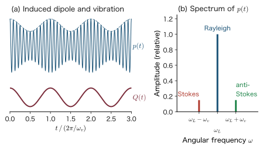
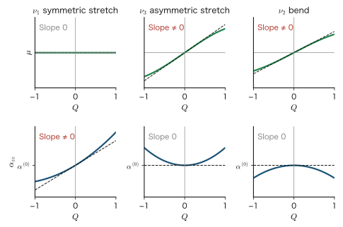
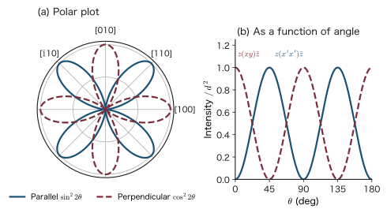
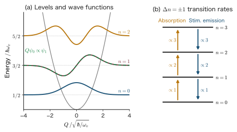
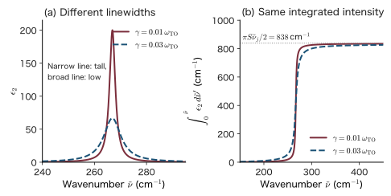
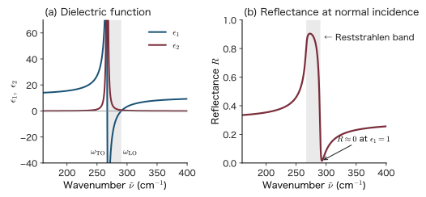
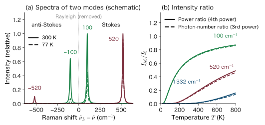
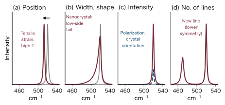

Chapter 34Infrared and Raman Spectroscopy — From Group-Theoretical Selection Rules to Quantum Theory
When we have synthesized a new material, we first confirm its crystal structure by X-ray diffraction, and then measure its “vibrational spectrum” by Raman or infrared spectroscopy. Both can be measured in a few minutes, and neither damages the sample. The spectrum shows a row of several peaks, and their number, positions, widths, and polarization-dependent intensities tell us about the symmetry of the crystal, the coupling strength of its bonds, its crystallinity, strain, temperature, and phase transitions. But as soon as we try to assign the peaks ourselves (to decide which peak is which vibration), we run straight into questions such as “Why is this vibration visible in Raman but not in infrared?” and “Why does cubic SrTiO3 have no first-order Raman line at all?”
This chapter answers these questions in two stages. The first stage is the group-theoretical analysis. In Chapter 10, Sections 10.6–10.7, we reduced the normal modes of a molecule into irreducible representations and judged infrared and Raman activity by looking at the right-hand columns of the character table ($x,y,z$ and the quadratic functions). In this chapter we review that procedure (Section 34.3) and then extend it to phonons in crystals (“factor-group analysis,” in which the displacements of the atoms in the unit cell are decomposed by the point group of the crystal); we count and classify the optical modes of diamond, rock salt, zinc blende, wurtzite, rutile, and perovskite by ourselves (Section 34.4). We then introduce the Raman tensor, which even predicts the polarization of the scattered light (Section 34.5).
The second stage is quantum theory. Group theory tells us whether a matrix element is zero or nonzero, but it does not tell us why that matrix element matters. In Section 34.6 we treat the interaction between light and vibrations with Fermi's golden rule, and from the harmonic-oscillator matrix element $\bra{n+1}Q\ket{n}=\sqrt{(n+1)\hbar/2\omega}$ we derive the selection rule $\Delta n=\pm1$ and the condition for infrared activity, namely that “the dipole moment changes with the vibration.” In Section 34.7 we write Raman scattering in second-order perturbation theory as a “two-photon process in which one photon is absorbed and another photon is emitted,” and from the Kramers–Heisenberg–Dirac formula, which proceeds through virtual intermediate states, we derive the condition for Raman activity, namely that “the polarizability changes with the vibration,” and the intensity ratio of the Stokes and anti-Stokes lines. In this way we see which matrix elements the decision rule we memorized in Chapter 10 (a mode is infrared-active if it belongs to the same representation as $x,y,z$, and Raman-active if it belongs to the same representation as a quadratic function) comes from.
Let us describe the connections with the preceding and following chapters. The classical theory of Raman scattering (modulation of the polarizability) and the intensity ratio were derived in Chapter 26, Section 26.6, in the context of nonlinear optics. This chapter takes them further, to the point where they can be used as a spectroscopic method. The splitting of infrared-active polar phonons into LO and TO modes is treated in Chapter 32, the Lorentzian form of the dielectric function and the reststrahlen band in Section 32.4 of Chapter 32 and Section 33.1 of Chapter 33, and the lifetime and temperature dependence of phonons in Chapter 30. At the end of this chapter (Section 34.8) we put these together and organize “what we can learn from a spectrum,” and describe how to think when comparing first-principles calculations (phonon frequencies and irreducible representations, Born effective charges, Raman intensities) with experiment.
- What infrared spectroscopy (absorption of light) and Raman spectroscopy (inelastic scattering of light) measure; the conversion between the wavenumber $\mathrm{cm^{-1}}$ and meV, THz, and K; the Rayleigh line, Stokes line, and anti-Stokes line
- Because the wavenumber of light is smaller than the size of the Brillouin zone by orders of magnitude, only phonons at $\qq\approx0$ (the $\Gamma$ point) are visible in first-order processes
- The classical conditions: infrared activity requires $\partial\bm\mu/\partial Q\neq0$, and Raman activity requires $\partial\alpha/\partial Q\neq0$; a pictorial explanation with the three vibrations of CO2, and the mutual exclusion rule
- Reduction of the normal modes of molecules (H2O, CO2, CH4, BF3) into irreducible representations and the determination of their activity
- Factor-group analysis of the $\Gamma$-point phonons of crystals: the mechanical representation $\Gamma_{\rm mech}$, acoustic modes, and the classification into infrared-active, Raman-active, and silent modes (counted for six kinds of crystals)
- Raman lines appear when the symmetry is lowered (cubic SrTiO3 and tetragonal BaTiO3) = detection of a phase transition
- The Raman tensor and polarization selection rules, Porto notation, and the angular dependence $\sin^22\theta$ and $\cos^22\theta$ of backscattering from Si(001)
- Infrared activity in quantum theory: Fermi's golden rule, $\bra{n+1}Q\ket{n}$, the selection rule $\Delta n=\pm1$, the temperature independence of the net absorption, the mode effective charge, and the dielectric function
- Raman activity in quantum theory: the two-photon process, virtual intermediate states, the Placzek polarizability approximation, the intensity ratio $I_{\rm AS}/I_{\rm S}$ and the $\omega^4$ law, the three-vertex process in crystals, resonance Raman scattering, and second-order Raman scattering
- How to read the physical properties from the peak positions, linewidths, intensities, polarizations, and number of peaks in a spectrum, and how to compare them with first-principles calculations
34.1 Two Vibrational Spectroscopies — What Are We Measuring?
Vibrational spectroscopy is the general name for methods that use light to probe the vibrations of the atoms in molecules and crystals. Two methods are in common use. Infrared spectroscopy (IR) relies on the fact that light with the same frequency as a vibration is absorbed. Raman spectroscopy relies on the fact that, when a visible-light laser illuminates a sample, the scattered light contains components whose frequency is shifted by the vibrational frequency. Although both methods look at the same vibrations, the vibrations that are visible and those that are invisible differ between the two. Understanding the reason is the goal of this chapter. First, let us check what the two methods actually measure, using the instruments and level diagrams.
Notation: Symbols used in this chapter
- The angular frequency of a vibration (a normal mode of a molecule, or an optical phonon at the $\Gamma$ point of a crystal) is written $\omega_v$ (the same as $\Omega$ in Section 26.6 of Chapter 26; when distinguishing crystal modes we write $\omega_j$). The laser light is $\omega_L$, and the Stokes and anti-Stokes light are $\omega_{\rm S}=\omega_L-\omega_v$ and $\omega_{\rm AS}=\omega_L+\omega_v$ (uppercase subscripts). The angular frequency of generic scattered light, without distinguishing Stokes from anti-Stokes, is written $\omega_{\rm s}$ with a lowercase subscript (Section 34.7).
- The wavenumber is $\tilde\nu=1/\lambda=\omega/(2\pi c)$ (in units of $\mathrm{cm^{-1}}$). The Raman shift is $\tilde\nu_v=\omega_v/(2\pi c)$.
- $Q$ is the mass-weighted normal coordinate (in units of $\mathrm{kg^{1/2}\,m}$), and the Hamiltonian of a single mode is $\Ham=\tfrac12P^2+\tfrac12\omega_v^2Q^2$ (Section 27.4.1 of Chapter 27 with $M=1$). The vibrational quantum number is $n$, the thermal average is $\bar n=1/(\ee^{\hbar\omega_v/k_BT}-1)$, and the refractive index is $n_r$, as in Chapter 33.
- $\bm\mu$ is the dipole moment of the molecule (or unit cell), and $\alpha$ (components $\alpha_{\rho\sigma}$) is the polarizability (the same as in Section 26.6 of Chapter 26). The absorption coefficient is written $\alpha_{\rm abs}$ to distinguish it.
- $\Gamma$ is used both for the center of the Brillouin zone and for representations ($\Gamma_{\rm vib}$, $\Gamma_{\rm mech}$) (as in Chapters 10 and 11). For this reason the linewidth is expressed not by the $\Gamma$ of Chapter 30 but by the damping constant $\gamma$. The $\gamma$ of this chapter is the full width at half maximum of the angular frequency, and it is related to the $\Gamma$ of Chapter 30 (the half width at half maximum of the angular frequency) by $\gamma=2\Gamma$. The lifetime (the time during which a quantum of vibration survives) is $\tau=1/\gamma$ (in the notation of Chapter 30, $\tau=1/(2\Gamma)$, which is the same thing). Since $\gamma=\Gamma/\hbar$ in Table 27.4 of Chapter 27 is a half width at half maximum, it corresponds to half of the $\gamma$ of this chapter. When distinguishing modes we write $\gamma_j$, and the width of the electronic intermediate state $\ket r$ in Section 34.7 is written $\gamma_r$ (this too is a full width at half maximum).
- The Raman tensor is written $\mathcal{R}$ (a script R). It is the same as what was written $R$ in Section 26.6.3 of Chapter 26. The non-script $R$ in Sections 34.3–34.4 is a symmetry operation, and the $R$ in Section 34.6 is the reflectivity.
- $\Omega$ is used in Section 34.6.5 for the volume of the unit cell (as in Chapter 32). The $\Omega$ that was used for the angular frequency of a vibration in Chapter 26 is written $\omega_v$ in this chapter, so there is no conflict.
- The “Q value” (quality factor) that expresses the sharpness of an oscillator is the same letter as the normal coordinate $Q$, so in this chapter we write it in words as the “quality factor Q” and do not use it in equations.
34.1.1 Infrared spectroscopy — absorbing light at the same frequency as the vibration
When atoms vibrate, the positions of the positive and negative charges within a molecule or unit cell are displaced, and in some cases the electric dipole moment oscillates. An oscillating dipole couples to an electromagnetic wave of the same frequency (just like an antenna). If infrared light of frequency $\omega=\omega_v$ is shone on it, the energy of the light is transferred to the vibration. This is infrared absorption. If we measure the intensity of the light transmitted through the sample as a function of wavenumber, a valley appears at each wavenumber where there is absorption. In crystals the absorption is often so strong that no light gets through, so the reflectivity is often measured as well (Section 34.6.5).
Most present-day infrared spectrometers use Fourier-transform infrared spectroscopy (FTIR) (Figure 34.1(a)). White infrared light is passed through a Michelson interferometer, and the detector signal is recorded while one of the mirrors is moved; a Fourier transform of this signal gives the spectrum at all wavenumbers at once. The measurement range is roughly $400$–$4000\,\mathrm{cm^{-1}}$ (mid-infrared), and by changing the detector and other components, $10$–$400\,\mathrm{cm^{-1}}$ (far infrared, terahertz) can also be measured.
34.1.2 Raman spectroscopy — inelastic scattering of visible light
The frequency of visible light (wavelength $400$–$800\,\mathrm{nm}$, wavenumber $12500$–$25000\,\mathrm{cm^{-1}}$) is far higher than that of atomic vibrations. When this light illuminates a material, the electric field of the light shakes the electrons, and the shaken electrons radiate light of the same frequency in all directions. This is Rayleigh scattering. However, if the ease with which the electrons are shaken (the polarizability) changes along with the atomic vibration, the scattered light is “modulated” at the frequency $\omega_v$, and components at $\omega_L-\omega_v$ and $\omega_L+\omega_v$ appear on both sides of the frequency $\omega_L$ of the incident light (derived in Section 34.2). The lower-frequency side is called the Stokes line and the higher-frequency side the anti-Stokes line. This is Raman scattering. A plot of the spectrum of the scattered light as a function of the frequency shift from the incident light (the Raman shift) $\tilde\nu_L-\tilde\nu$ is the Raman spectrum.
Raman scattering is weak, only about $10^{-6}$ of the Rayleigh-scattered light or less. A Raman spectrometer (Figure 34.1(b)) therefore consists of (i) a monochromatic, intense laser ($532$, $633$, $785\,\mathrm{nm}$, etc.), (ii) a notch filter (or an edge filter) that sharply blocks only light of the same wavelength as the laser, (iii) a diffraction-grating spectrometer, and (iv) a cooled CCD detector. The standard arrangement is backscattering, in which the laser is focused to about $1\,\mu\mathrm{m}$ by a microscope objective lens and the same lens collects the scattered light returning backward.
34.1.3 Energy-level diagrams — the difference between absorption and scattering
Figure 34.2 depicts what happens in the two methods in terms of the exchange of energy. The horizontal lines are vibrational levels (quantum number $n=0,1$), spaced by $\hbar\omega_v$. The gray band at the top represents the electronic excited states (electronic excitation for a molecule, the conduction band for a semiconductor).
- (a) Infrared absorption: One infrared photon of energy $\hbar\omega=\hbar\omega_v$ is absorbed, and the vibration is raised from $n=0$ to $n=1$. It does not occur unless the photon energy and the vibrational energy coincide (resonance).
- (b) Rayleigh scattering: A visible photon ($\hbar\omega_L$) arrives, and a photon of the same energy leaves. The state of the vibration does not change.
- (c) Stokes scattering: The energy of the outgoing photon is smaller by $\hbar\omega_v$, and the vibration goes up by one step (one phonon is created).
- (d) anti-Stokes scattering: A vibration that was already excited ($n=1$) goes down by one step, and the energy of the outgoing photon is larger by $\hbar\omega_v$ (one phonon disappears). Because a thermally excited vibration is required, it becomes weaker at lower temperatures.
The dashed lines reached by the upward arrows in (b)–(d) are not real levels. The energy of the incident photon is lower than the electronic excitation energy, so the system cannot “really” move into an electronic excited state. Even so, the electric field of the light shakes the electrons, and a component of the electronic excited states is mixed in for a very short time. The virtual level is a convenient depiction of that state. Its meaning will be stated precisely in Section 34.7 in terms of second-order perturbation theory. The fluorescence (light emission) shown in (e) for comparison is a process in which a photon is absorbed into a real electronic level and, after relaxation, another photon is emitted; it is a different thing from scattering. Raman scattering is a single process in which absorption and emission occur “simultaneously,” and it involves no time delay like that of fluorescence.
34.1.4 The convention of using the wavenumber, and typical vibrational energies
In vibrational spectroscopy, the frequency is expressed not as an energy but as a wavenumber $\tilde\nu$ (in units of $\mathrm{cm^{-1}}$; some people call this unit the “kayser”). The wavenumber is the reciprocal of the wavelength, $\tilde\nu=1/\lambda$, and is connected to the photon energy by $E=hc\tilde\nu$. Let us work out the conversion factors in order. For $\tilde\nu=1\,\mathrm{cm^{-1}}=100\,\mathrm{m^{-1}}$,
$$ \begin{aligned} E&=hc\tilde\nu=(1239.84\,\mathrm{eV\,nm})\times(100\,\mathrm{m^{-1}})=1239.84\times10^{-9}\times100\,\mathrm{eV}\\ &=1.2398\times10^{-4}\,\mathrm{eV}=0.12398\,\mathrm{meV},\\ \nu&=c\tilde\nu=(2.9979\times10^{8}\,\mathrm{m/s})\times(100\,\mathrm{m^{-1}})=2.9979\times10^{10}\,\mathrm{Hz}=29.979\,\mathrm{GHz},\\ E/k_B&=\frac{1.2398\times10^{-4}\,\mathrm{eV}}{8.6173\times10^{-5}\,\mathrm{eV/K}}=1.4388\,\mathrm{K}. \end{aligned} $$Conversely, $1\,\mathrm{meV}=8.0655\,\mathrm{cm^{-1}}$. It is convenient to keep the following conversion table at hand.
| Vibration | Wavenumber $\tilde\nu_v$ ($\mathrm{cm^{-1}}$) | Energy (meV) | Measured by |
|---|---|---|---|
| O–H, C–H, and N–H stretches (the light H atom moves) | 2800–3700 | 350–460 | Infrared, Raman |
| C=O and C=C stretches (double bonds) | 1600–1800 | 200–220 | Infrared, Raman |
| Molecular bending, C–C stretch | 500–1500 | 60–190 | Infrared, Raman |
| Optical phonon of diamond (light and stiff) | 1332 | 165 | Raman |
| Optical phonon of Si | 520 | 64.5 | Raman |
| TO and LO phonons of GaAs | 268, 292 | 33, 36 | Infrared, Raman |
| TO phonon of NaCl | 164 | 20 | Infrared (far infrared) |
| Low-frequency optical phonons of crystals of heavy atoms, soft modes | 10–100 | 1–12 | Low-wavenumber Raman, terahertz |
Molecular stretching vibrations lie roughly at $1000$–$4000\,\mathrm{cm^{-1}}$, and crystal phonons roughly at $50$–$1500\,\mathrm{cm^{-1}}$. Vibrations in which hydrogen moves have high wavenumbers because the frequency is $\omega=\sqrt{K/M_r}$ ($K$ is the spring constant and $M_r$ is the reduced mass), and $M_r$ is small. The thermal energy at room temperature, $k_BT=25.85\,\mathrm{meV}$, corresponds to $208\,\mathrm{cm^{-1}}$, so vibrations higher than this are hardly excited at room temperature. This fact will appear in Section 34.7 as the weakness of the anti-Stokes line.
Example 34.1: Wavenumber conversion
(1) Convert the Raman line of Si at $520\,\mathrm{cm^{-1}}$ into meV, THz, and K. (2) What is the wavelength of the infrared light that is absorbed by the bending vibration of CO2 at $667\,\mathrm{cm^{-1}}$? (3) When Si is measured with a laser of wavelength $532\,\mathrm{nm}$, find the wavelength of the Stokes light.
Solution. (1) Multiply by the factors of Eq. \eqref{eq:34-convert}.
$$ \begin{aligned} E&=520\times0.12398\,\mathrm{meV}=64.47\,\mathrm{meV},\\ \nu&=520\times29.979\,\mathrm{GHz}=15589\,\mathrm{GHz}=15.59\,\mathrm{THz},\\ E/k_B&=520\times1.4388\,\mathrm{K}=748.2\,\mathrm{K}. \end{aligned} $$(2) The wavelength is the reciprocal of the wavenumber, so
$$ \lambda=\frac1{\tilde\nu}=\frac{1}{667\,\mathrm{cm^{-1}}}=1.499\times10^{-3}\,\mathrm{cm}=15.0\,\mu\mathrm{m} $$(3) The wavenumber of the laser is $\tilde\nu_L=1/(532\times10^{-7}\,\mathrm{cm})=18797\,\mathrm{cm^{-1}}$. The Stokes light has $\tilde\nu_{\rm S}=18797-520=18277\,\mathrm{cm^{-1}}$, so
$$ \lambda_{\rm S}=\frac{1}{18277\,\mathrm{cm^{-1}}}=5.4714\times10^{-5}\,\mathrm{cm}=547.1\,\mathrm{nm} $$∎
The energy of the optical phonon of Si, $64.5\,\mathrm{meV}$, is about 2.5 times the room-temperature $k_BT$, and in terms of temperature it is about $750\,\mathrm{K}$. Also, in terms of wavelength, the Raman light is only $15\,\mathrm{nm}$ away from the laser. This is why the sharpness of the notch filter is important.
34.1.5 The wavenumber of light is small — in first-order processes only the $\Gamma$-point phonons are seen
Vibrations of a crystal are phonons with a wave vector $\qq$ (Chapter 13). In the exchange between light and phonons, the crystal momentum is conserved together with the energy (Chapter 11, Section 11.3, and Chapter 13, Section 13.9). In a first-order process that involves a single phonon,
$$ \text{infrared absorption: }\ \ \qq=\kk_{\rm photon},\qquad \text{Raman (Stokes): }\ \ \kk_L=\kk_{\rm S}+\qq\ \ \Longrightarrow\ \ \qq=\kk_L-\kk_{\rm S} $$(the contribution of a reciprocal lattice vector does not enter in a first-order process). In Raman scattering, $\abs{\qq}$ is largest in backscattering, where the scattered light leaves in the direction opposite to the incident light; since $\abs{\kk_{\rm S}}\approx\abs{\kk_L}$, we have $q_{\max}\approx2k_L=2\times2\pi n_r/\lambda$. Let us compare this with the size of the Brillouin zone (the distance from the $\Gamma$ point to the zone boundary, $\sim2\pi/a$).
Example 34.2: The wavenumber of light and the $\Gamma$ point
Measure Si (lattice constant $a=0.5431\,\mathrm{nm}$, refractive index $n_r\approx4.15$ at $532\,\mathrm{nm}$) with a $532\,\mathrm{nm}$ laser in the backscattering configuration. (1) Find the maximum wavenumber $q_{\max}$ that can be transferred to a phonon in Raman scattering, and compare it with the distance $2\pi/a$ from the $\Gamma$ point to the X point. (2) What about infrared light ($520\,\mathrm{cm^{-1}}$)?
Solution. (1) The wavenumber of light inside Si is
$$ k_L=\frac{2\pi n_r}{\lambda}=\frac{2\pi\times4.15}{532\times10^{-9}\,\mathrm{m}}=4.90\times10^{7}\,\mathrm{m^{-1}} $$so $q_{\max}=2k_L=9.80\times10^{7}\,\mathrm{m^{-1}}$. On the other hand,
$$ \frac{2\pi}{a}=\frac{2\pi}{0.5431\times10^{-9}\,\mathrm{m}}=1.157\times10^{10}\,\mathrm{m^{-1}} $$and the ratio is
$$ \frac{q_{\max}}{2\pi/a}=\frac{9.80\times10^{7}}{1.157\times10^{10}}=8.5\times10^{-3} $$that is, only $0.85\,\%$.
(2) The wavenumber of the infrared light in vacuum is
$$ k=2\pi\tilde\nu=2\pi\times(520\times100\,\mathrm{m^{-1}})=3.27\times10^{5}\,\mathrm{m^{-1}} $$which is $3\times10^{-5}$ times $2\pi/a$ (even if we multiply by a refractive index of about $3.4$ inside the crystal, it is $10^{-4}$ times). ∎
In both cases we probe only the very vicinity of the center of the Brillouin zone (the green width in Figure 34.3). Over this range the frequency of an optical phonon hardly changes, so we may conclude that what is seen in first-order infrared absorption and Raman scattering is only the phonons with $\qq\approx0$ (the $\Gamma$ point). This is the reason why, in Section 34.4, it suffices to classify only the $\Gamma$-point phonons by group theory. It stands in contrast to neutron scattering (Chapter 13, Section 13.9), which can measure the whole dispersion relation. In Chapter 32, Section 32.1, the wavenumber of light was estimated as “about 1/1000 of the Brillouin zone.” That value compares the wavenumber of light in vacuum, $k=2\pi/\lambda$ itself; here we have multiplied by the wavenumber inside the crystal (a factor of the refractive index $n_r\approx4$) and by 2 for backscattering, so we obtained about 1 %. With either estimate, the conclusion is the same: “orders of magnitude smaller than the Brillouin zone.”
34.1.6 A little history
That the frequency of light shifts upon scattering was predicted from quantum theory by Smekal in 1923. In 1928, Raman and Krishnan in India shone monochromatized sunlight on a liquid and found a weak light of a color different from that of the incident light in the scattered light. At about the same time, Landsberg and Mandelstam in the Soviet Union found the same phenomenon in a quartz crystal. Raman received the 1930 Nobel Prize in Physics for this discovery. With the advent of lasers in the 1960s and the later progress in detectors and filters, the measurement has become an everyday tool that takes only a few seconds.
34.2 Classical Theory — Changes in the Dipole Moment and in the Polarizability
Before turning to quantum theory, we consider “which vibrations are visible” using only classical mechanics and classical electromagnetism. To state the conclusion first, in the infrared what matters is the change of the dipole moment accompanying the vibration, and in Raman scattering it is the change of the polarizability accompanying the vibration. These two quantities transform differently under spatial symmetry operations (the dipole moment is a vector, the polarizability is a rank-2 tensor). That is why the same vibration can look different in the two spectroscopies.
34.2.1 Condition for infrared activity — does the vibration make the dipole moment oscillate?
The electric dipole moment $\bm\mu$ of a molecule (or of a unit cell of a crystal) is determined by the arrangement of the atoms. When only the coordinate $Q$ of a single normal mode is moved, the Taylor expansion of $\bm\mu$ about $Q=0$ (the equilibrium position) gives
Here $\bm\mu_0$ is the permanent dipole moment (H2O has one; CO2 does not). When a vibration $Q(t)=Q_0\cos\omega_vt$ occurs, the second term makes the dipole oscillate at the frequency $\omega_v$:
$$ \bm\mu(t)=\bm\mu_0+\left(\frac{\partial\bm\mu}{\partial Q}\right)_0Q_0\cos\omega_vt+\cdots $$An oscillating dipole radiates an electromagnetic wave of frequency $\omega_v$ and, conversely, has work done on it by an electromagnetic wave of the same frequency. The rate of work (power) done on the dipole by the electric field of the light $\EE(t)=\EE_0\cos\omega t$ is given by the time average of $F_Q\dot Q$, where we use the fact that the force acting on $Q$, obtained from the dipole energy $-\bm\mu\cdot\EE$, is $F_Q=-\partial(-\bm\mu\cdot\EE)/\partial Q=(\partial\bm\mu/\partial Q)_0\cdot\EE$. When $\omega=\omega_v$ (resonance), $F_Q$ keeps pushing the vibration in phase, and energy is transferred from the light to the vibration. This is the classical picture of infrared absorption (it is exactly the resonance of a damped oscillator; Section 34.6.5).
Whether a permanent dipole moment $\bm\mu_0$ exists is irrelevant. What is asked is whether the dipole moment changes with the vibration.
34.2.2 Condition for Raman activity — does the vibration make the polarizability oscillate?
The electric field $\EE$ of visible light shakes the electrons and creates an induced dipole:
$$ p_\rho=\sum_\sigma\alpha_{\rho\sigma}\mathcal{E}_\sigma\qquad(\rho,\sigma=x,y,z) $$Here $\alpha_{\rho\sigma}$ is the polarizability tensor, which is symmetric ($\alpha_{\rho\sigma}=\alpha_{\sigma\rho}$). It is a tensor because how easily the electron cloud is shaken depends on the direction, and an electric field in the $x$ direction can also create a dipole in the $y$ direction. Since the polarizability also depends on the arrangement of the atoms, it can be expanded as
Using the same calculation as in Chapter 26, Section 26.6.1 (we restate the equation), we substitute $Q(t)=Q_0\cos\omega_vt$ and $\mathcal{E}(t)=\mathcal{E}_0\cos\omega_Lt$ into $p=\alpha\mathcal{E}$ and use the product-to-sum formula $\cos A\cos B=\tfrac12[\cos(A-B)+\cos(A+B)]$ to obtain
(the tensor indices have been omitted). The induced dipole is the carrier $\omega_L$ amplitude-modulated (AM) by the vibration $\omega_v$, and the spectrum shows three lines, at $\omega_L$ and $\omega_L\pm\omega_v$ (Figure 34.4). Since the amplitude of the sidebands is proportional to $(\partial\alpha/\partial Q)_0$,

Supplement: How to draw the polarizability ellipsoid
A symmetric tensor $\alpha_{\rho\sigma}$ becomes diagonal if suitable orthogonal axes (principal axes) are chosen. Denoting the polarizabilities along the principal axes by $\alpha_1,\alpha_2,\alpha_3$, the polarizability can be represented by an ellipsoid that has “the orientation of the principal axes and three lengths.” In the figures of this chapter, we draw the semi-axis lengths proportional to $\alpha_1,\alpha_2,\alpha_3$ (a picture of how easily the electron cloud is shaken: the larger, the more easily shaken). In the literature, the surface $\sum_{\rho\sigma}\alpha_{\rho\sigma}x_\rho x_\sigma=1$ is called the polarizability ellipsoid, and the convention of taking the semi-axis lengths to be $1/\sqrt{\alpha_i}$ is common. In that case large and small appear reversed, but the criterion for Raman activity (whether any of the magnitude, shape, or orientation of the ellipsoid changes to first order in $Q$) is the same.
34.2.3 Illustration with the three vibrations of CO2
The linear molecule CO2 (O=C=O) has three atoms and therefore $3\times3-5=4$ degrees of freedom of vibration (Chapter 10, Example 10.12). They are the symmetric stretch $\nu_1$ ($1388\,\mathrm{cm^{-1}}$), the bending mode $\nu_2$ ($667\,\mathrm{cm^{-1}}$, twofold degenerate: in the plane of the page and perpendicular to it), and the antisymmetric stretch $\nu_3$ ($2349\,\mathrm{cm^{-1}}$). C is slightly positively charged ($\delta+$) and O slightly negatively charged ($\delta-$). Figure 34.5 shows, for each vibration, the shape at the instants $Q\lt0$, $Q=0$, and $Q\gt0$, together with the dipole moment (green arrow) and the polarizability ellipsoid (light ellipse).
Figure 34.5 can be turned into graphs of $\bm\mu(Q)$ and $\alpha(Q)$, which is Figure 34.6.
- Symmetric stretch $\nu_1$: Whether the molecule stretches or contracts, it keeps its inversion center (the position of C). In a configuration with an inversion center the dipole must vanish (inversion maps $\bm\mu\to-\bm\mu$, but the configuration is unchanged, so $\bm\mu=-\bm\mu$). Hence $\bm\mu(Q)=0$ holds for all $Q$, and the slope is also 0. On the other hand, when the bonds lengthen, the electron cloud spreads out and is shaken more easily, so $\alpha$ increases with $Q$ and the slope $(\partial\alpha/\partial Q)_0$ is nonzero.
- Antisymmetric stretch $\nu_3$: Inverting the configuration of $Q$ at the position of C gives the configuration of $-Q$. Since the dipole changes sign under inversion, $\bm\mu(-Q)=-\bm\mu(Q)$ (an odd function). $\bm\mu$ is allowed to change at first order in $Q$, and in fact it does. The polarizability does not change under inversion (in $\bm p=\alpha\EE$ both $\bm p$ and $\EE$ change sign), so $\alpha(-Q)=\alpha(Q)$ (an even function). The slope of an even function at $Q=0$ is necessarily 0.
- Bending $\nu_2$: Reflecting the configuration of $Q$ in a mirror containing the molecular axis (or inverting it at the position of C) gives the configuration of $-Q$. For the same reason, $\bm\mu$ is an odd function and $\alpha$ is an even function.

Example 34.3: Determining the activity of CO2 by classical theory
Of the three vibrations $\nu_1$, $\nu_2$, and $\nu_3$ of CO2, determine which are infrared-active and which are Raman-active, using only the symmetry of the dipole moment and the polarizability. Explain why the infrared absorption of atmospheric CO2 has no line at $1388\,\mathrm{cm^{-1}}$.
Solution. Write $\mathcal{I}$ for the inversion about the inversion center C. $\mathcal{I}$ changes the sign of the dipole moment ($\bm\mu\to-\bm\mu$) and leaves the polarizability unchanged ($\alpha\to\alpha$).
(i) For $\nu_1$, the configuration does not change under $\mathcal{I}$ ($Q\to Q$). Therefore $\bm\mu(Q)=-\bm\mu(Q)$, that is, $\bm\mu(Q)=0$, and $(\partial\bm\mu/\partial Q)_0=0$: infrared-inactive. $\alpha(Q)=\alpha(Q)$ places no constraint, and the polarizability changes with the stretching and contracting, so the mode is Raman-active.
(ii) For $\nu_2$ and $\nu_3$, $\mathcal{I}$ takes $Q\to-Q$. Therefore $\bm\mu(-Q)=-\bm\mu(Q)$ (an odd function), so a first-order term is allowed, and because the centroid of the charges of C and O is displaced, it is in fact nonzero: infrared-active. Differentiating $\alpha(-Q)=\alpha(Q)$ (an even function) gives $-\alpha'(-Q)=\alpha'(Q)$, and at $Q=0$ we have $\alpha'(0)=-\alpha'(0)$, so $\alpha'(0)=0$: Raman-inactive.
Since $1388\,\mathrm{cm^{-1}}$ is $\nu_1$, it does not appear in the infrared absorption. ∎ What matters for the infrared absorption of the atmosphere are $667\,\mathrm{cm^{-1}}$ ($\nu_2$, wavelength $15\,\mu\mathrm{m}$) and $2349\,\mathrm{cm^{-1}}$ ($\nu_3$, $4.3\,\mu\mathrm{m}$), and it is these two lines that are involved in the greenhouse effect (Chapter 10, Section 10.7).
34.2.4 Understanding the mutual exclusion rule through parity
The argument of Example 34.3 applies not only to CO2 but to all molecules and crystals with an inversion center. When there is an inversion center, every normal mode is either even under inversion ($g$: $Q\to Q$) or odd ($u$: $Q\to-Q$) (the $g/u$ of the Mulliken symbols in Chapter 8, Section 8.9). Then
- $g$ modes: since $\bm\mu(Q)=-\bm\mu(Q)$, $\bm\mu$ does not change (infrared-inactive). $\alpha$ may change (the mode can be Raman-active).
- $u$ modes: since $\alpha(-Q)=\alpha(Q)$, $(\partial\alpha/\partial Q)_0=0$ (Raman-inactive). $\bm\mu$ may change (the mode can be infrared-active).
In other words, infrared activity and Raman activity are incompatible. This is the mutual exclusion rule, a restatement in classical language of Theorem 10.4 in Section 10.7 of Chapter 10 (in Chapter 10 it was proved from the property of the character table that “$x,y,z$ are $u$ and the quadratic forms are $g$”). Modes that are inactive in both (silent modes) can exist whether or not there is an inversion center.
For molecules without an inversion center, this constraint does not exist. The three vibrations of H2O (bent, point group $C_{2v}$)—the symmetric stretch $\nu_1$ ($3657\,\mathrm{cm^{-1}}$), the bending mode $\nu_2$ ($1595\,\mathrm{cm^{-1}}$), and the antisymmetric stretch $\nu_3$ ($3756\,\mathrm{cm^{-1}}$)—all change both the dipole moment and the polarizability at first order in $Q$, so all three are both infrared-active and Raman-active (we confirm this by group theory in Section 34.3.2).
Example 34.4: What if a line at the same frequency appears in both infrared and Raman spectra?
We measured the infrared and Raman spectra of an unknown crystal and found that a line appears in both at $480\,\mathrm{cm^{-1}}$ (they coincide within the linewidth). What can we say about this crystal? Conversely, what can we say if the line positions do not overlap at all between infrared and Raman?
Solution. That a single line at the same frequency appears in both means that one mode is both infrared-active and Raman-active. Taking the contrapositive of the mutual exclusion rule gives: “if there is a mode that is both infrared-active and Raman-active, there is no inversion center.” We therefore conclude that this crystal lacks an inversion center (it is noncentrosymmetric). However, the possibility remains that two different modes happen to have nearby frequencies, so we need to confirm whether they are the same mode by checking the polarization dependence (Section 34.5) or the temperature change.
Conversely, the absence of overlapping lines is not evidence of centrosymmetry (even without an inversion center, many modes appear strongly in only one of the two). ∎ Since noncentrosymmetry is a prerequisite for piezoelectricity and second-harmonic generation (Chapter 26, Section 26.1), this check gives a clue to the symmetry of a new material.
Caution: What the classical theory does not tell us
In Eq. \eqref{eq:34-sideband} of the classical theory, the amplitudes of the Stokes and anti-Stokes lines are equal. In reality, however, even for Si at room temperature the anti-Stokes line is only about 1/10 of the Stokes line, and at low temperatures it almost disappears. Moreover, the intensity of infrared absorption and the “overtone” that appears weakly at twice the frequency are also hard to explain with the classical theory. These are explained by the quantization of the vibrational energy (Sections 34.6–34.7).
34.3 Group-Theoretical Analysis I — Normal Modes of Molecules
The classical criterion of Section 34.2 is easy to use when the shape of the vibration can be pictured, as for CO2. But once the number of atoms grows to 5 or 10, even imagining the shape of the vibrations becomes difficult. With group theory, we can determine how many vibrations there are and which of them are visible in infrared and Raman spectra by calculation with the character table alone, without knowing the shapes of the vibrations. We learned the procedure in Chapter 10, Sections 10.6–10.7, so here we review the key points and work through four examples, including molecules not treated in Chapter 10.
34.3.1 Review of the procedure
Procedure: Classifying molecular vibrations and determining their activity
- Determine the point group. Count all the symmetry operations from the shape of the molecule and determine the point group (Chapter 4).
- Find the character of the representation $\Gamma_{3N}$ of all displacements. The character of the representation spanned by the $3N$ displacements of $N$ atoms is given by the following formula (Chapter 10, Section 10.6.1): multiply the number of atoms left unshifted $N_R$ by the operation $R$ by the contribution per atom, $\Tr R=\pm1+2\cos\theta$ ($+$ for a proper rotation, $-$ for an improper rotation such as a reflection or inversion; $\theta$ is the rotation angle). $$\chi_{3N}(R)=N_R\,(\pm1+2\cos\theta)$$
- Reduce into irreducible representations. Use the reduction formula (Chapter 8, Section 8.8) $a(\Gamma_i)=\dfrac1h\sum_R\chi^{(i)}(R)^*\chi_{3N}(R)$ ($h$ is the order of the group; operations in the same class are grouped together and multiplied by the number of elements in the class).
- Subtract translations and rotations. The translation $\Gamma_{\rm trans}$ is the same representation as $x,y,z$, and the rotation $\Gamma_{\rm rot}$ is the same representation as $R_x,R_y,R_z$ (the right-hand columns of the character table). What remains is the vibration $\Gamma_{\rm vib}$, whose dimension is $3N-6$ for a nonlinear molecule and $3N-5$ for a linear molecule.
- Determine the activity. Look at the right-hand columns of the character table. If a component of $\Gamma_{\rm vib}$ is the same irreducible representation as any of $x,y,z$, it is infrared-active; if it is the same irreducible representation as any of the quadratic forms $x^2,y^2,z^2,xy,yz,zx$ (or a linear combination of them), it is Raman-active; if it is neither, it is silent (the criterion of Chapter 10, Section 10.7.1).
The meaning of the formula in Step 2 was derived in Chapter 10, Section 10.6.1. If atom $A$ is moved to a different atom by $R$, the displacement of that atom goes into an off-diagonal block of the representation matrix and does not contribute to the trace (the character). Only an atom that is not moved contributes, and only by the amount obtained by rotating its own displacement vector by $R$ (the trace of the $3\times3$ rotation matrix). The reason for Step 5 (why $x,y,z$ and the quadratic forms) will be derived from the matrix elements of quantum theory in Sections 34.6 and 34.7. Here we first use it as a decision rule.
Math Tool: Four steps for determining activity by group theory (so that this chapter can be followed on its own)
We summarize the procedure above once more, restricting ourselves to the computational work. All the tools used were learned in Chapters 8–10, and the parentheses indicate where to review them.
- Count the atoms unshifted by the symmetry operations. Choose one operation from each class of the point group and count the number $N_R$ of atoms that return to their own positions under that operation (in a crystal, differences by lattice translations are ignored; Section 34.4).
- Construct the character of the reducible representation. $\chi(R)=N_R\,(\pm1+2\cos\theta)$. Here $\pm1+2\cos\theta$ is the trace of the matrix that rotates the three displacements $(x,y,z)$ of a single atom; it is $+$ for a proper rotation and $-$ for a reflection, inversion, or rotoreflection (Table 10.4 in Chapter 10, Section 10.6).
- Reduce into irreducible representations. Multiply each row of the character table (how to construct it: Chapter 8, Sections 8.5–8.7; Mulliken symbols: Section 8.9) by $\chi$, with the number of elements in each class as a weight, and divide by the order $h$: $a(\Gamma_i)=\frac1h\sum_R\chi^{(i)}(R)^*\chi(R)$ (Chapter 8, Section 8.8). Check the result by confirming that the sum of the dimensions is $3N$ ($3s$ for a crystal).
- Read the activity from the bases $x,y,z$ and the quadratic forms. The right-hand two columns of the character table (Chapter 9, Section 9.7) list the linear forms ($x,y,z$) and quadratic forms ($x^2,xy,\dots$) belonging to each irreducible representation. Among the irreducible representations remaining after subtracting the translations (and, for molecules, the rotations), those found in the column of linear forms are infrared-active, those found in the column of quadratic forms are Raman-active, and those found in neither are silent. This rule comes from the direct-product selection rule (Theorem 10.3 in Chapter 10, Section 10.4), and we will derive it in Sections 34.6.4 and 34.7.2.
If we want to know the shape of the vibration itself (which atom moves in which direction), we apply the projection operator (Chapter 9, Section 9.3) to the atomic displacements and construct the sets of displacements belonging to each irreducible representation (symmetry coordinates). The arrows in Figures 34.7 and 34.12 of this chapter depict the shapes obtained in this way.
Why do infrared and Raman activity become mutually exclusive when there is an inversion center (the mutual exclusion rule)?
The inversion $i$ is $(x,y,z)\to(-x,-y,-z)$. The linear forms $x,y,z$ change sign (odd, $u$). The quadratic forms $x^2,xy,\dots$ are unchanged because the two signs cancel (even, $g$). Therefore, in a point group containing the inversion, the irreducible representations to which $x,y,z$ belong are all $u$, and those to which the quadratic forms belong are all $g$, so no irreducible representation appears in both columns at the same time. A single mode cannot be both infrared-active (in the column of linear forms) and Raman-active (in the column of quadratic forms).
Restated in physical terms: the dipole moment $\bm\mu$ that matters in the infrared is a vector made of “position × charge,” so it changes sign under inversion (odd). The polarizability $\alpha_{\rho\sigma}$ that matters in Raman scattering is “dipole ÷ electric field,” in which both numerator and denominator change sign, so it is unchanged under inversion (even). A vibration that is even ($g$) under inversion cannot change the odd quantity $\bm\mu$ to first order, and a vibration that is odd ($u$) cannot change the even quantity $\alpha$ to first order (Section 34.2.4). This is the content of Theorem 10.4 in Chapter 10, Section 10.7.
Notation: Mulliken symbols and $T$/$F$
Irreducible representations are named by Mulliken symbols (Chapter 8, Section 8.9): $A$ and $B$ for one-dimensional, $E$ for two-dimensional, and $T$ for three-dimensional ones. In the spectroscopic literature (especially classical textbooks on molecular vibrations), a three-dimensional representation is often written $F$. $T_2$ and $F_2$, and $T_{2g}$ and $F_{2g}$, are the same thing. This book uses $T$. Also, the symbol $E$ is used with two meanings: the identity operation (a column of the character table) and a two-dimensional representation (a row) (the caution in Chapter 8, Section 8.9).
34.3.2 H2O ($C_{2v}$) — all three modes are active in both
This was worked out completely in Chapter 10, Example 10.9. We also use the same coordinate convention as in Chapter 10: the $C_2$ axis is the $z$ axis, and the molecule is placed in the $xz$ plane. Under the operations $E$, $C_2(z)$, $\sigma_v(xz)$, and $\sigma_v'(yz)$, the numbers of unshifted atoms are 3, 1, 3, and 1, and $\Tr R$ is $3,-1,1,1$, so
$$ \chi_{3N}=(3\cdot3,\ 1\cdot(-1),\ 3\cdot1,\ 1\cdot1)=(9,\,-1,\,3,\,1) $$Reduction gives $\Gamma_{3N}=3A_1\oplus A_2\oplus3B_1\oplus2B_2$. Subtracting the translation $A_1(z)\oplus B_1(x)\oplus B_2(y)$ and the rotation $A_2(R_z)\oplus B_1(R_y)\oplus B_2(R_x)$ gives
$$ \Gamma_{\rm vib}(\mathrm{H_2O})=2A_1\oplus B_1 $$(in the convention in which the molecule is placed in the $yz$ plane, it becomes $2A_1\oplus B_2$; see the caution in Chapter 10). In the right-hand columns of the character table of $C_{2v}$ (Table 10.5 in Chapter 10), $A_1$ has $z$ and $x^2,y^2,z^2$, and $B_1$ has $x$ and $xz$. Therefore
- $\nu_1$ (symmetric stretch, $A_1$, $3657\,\mathrm{cm^{-1}}$) and $\nu_2$ (bending, $A_1$, $1595\,\mathrm{cm^{-1}}$): infrared-active (the dipole moment changes in the $z$ direction, that is, along the $C_2$ axis) and Raman-active.
- $\nu_3$ (antisymmetric stretch, $B_1$, $3756\,\mathrm{cm^{-1}}$): infrared-active (the dipole moment changes in the $x$ direction, that is, in the molecular plane perpendicular to the $C_2$ axis) and Raman-active ($\alpha_{xz}$ changes).
Group theory tells us not only the activity but also in which direction the dipole moment oscillates. For an $A_1$ mode only the $z$ component changes, and for a $B_1$ mode only the $x$ component changes. This can be confirmed with the arrows in Figure 34.7(a). The infrared spectrum of liquid water is greatly broadened by hydrogen bonding, but in gaseous water vapor all three lines are observed.
34.3.3 CO2 ($D_{\infty h}$) — Counting by descending to a subgroup
The point group $D_{\infty h}$ of a linear molecule is an infinite group that contains rotations by an arbitrary angle $\phi$ about the molecular axis. The sum in the reduction formula becomes an integral, which is tedious to evaluate by hand. In practice, therefore, we count in a finite subgroup of $D_{\infty h}$, namely $D_{2h}$ (the group with the molecular axis as the $z$ axis, three twofold axes along $x$, $y$ and $z$, and inversion, of order 8), and at the end return to the labels of $D_{\infty h}$.
Example 34.5: Counting the vibrations of CO2 in $D_{2h}$
Reduce $\Gamma_{3N}$ of CO2 (molecular axis $z$, C at the origin) into irreducible representations of $D_{2h}$, and find the irreducible representations of the vibrations. Descending to $D_{2h}$, the irreducible representations of $D_{\infty h}$ become $\sigma_g^+\to A_g$, $\sigma_u^+\to B_{1u}$, $\pi_g\to B_{2g}\oplus B_{3g}$, $\pi_u\to B_{2u}\oplus B_{3u}$.
Solution. The character table of $D_{2h}$ is as follows (each class has one element).
| $D_{2h}$ | $E$ | $C_2(z)$ | $C_2(y)$ | $C_2(x)$ | $i$ | $\sigma(xy)$ | $\sigma(xz)$ | $\sigma(yz)$ | Linear | Quadratic |
|---|---|---|---|---|---|---|---|---|---|---|
| $A_g$ | 1 | 1 | 1 | 1 | 1 | 1 | 1 | 1 | $x^2,y^2,z^2$ | |
| $B_{1g}$ | 1 | 1 | $-1$ | $-1$ | 1 | 1 | $-1$ | $-1$ | $R_z$ | $xy$ |
| $B_{2g}$ | 1 | $-1$ | 1 | $-1$ | 1 | $-1$ | 1 | $-1$ | $R_y$ | $xz$ |
| $B_{3g}$ | 1 | $-1$ | $-1$ | 1 | 1 | $-1$ | $-1$ | 1 | $R_x$ | $yz$ |
| $A_u$ | 1 | 1 | 1 | 1 | $-1$ | $-1$ | $-1$ | $-1$ | ||
| $B_{1u}$ | 1 | 1 | $-1$ | $-1$ | $-1$ | $-1$ | 1 | 1 | $z$ | |
| $B_{2u}$ | 1 | $-1$ | 1 | $-1$ | $-1$ | 1 | $-1$ | 1 | $y$ | |
| $B_{3u}$ | 1 | $-1$ | $-1$ | 1 | $-1$ | 1 | 1 | $-1$ | $x$ |
$\chi_{3N}$. All three atoms lie on the $z$ axis, so under the operations that contain the $z$ axis ($E$, $C_2(z)$, $\sigma(xz)$, $\sigma(yz)$) none of the three atoms moves. Under $C_2(x)$, $C_2(y)$, $i$, and $\sigma(xy)$ the two O atoms are interchanged and only C stays fixed. Since $\Tr R$ is $E{:}\,3$, $C_2{:}\,-1$, $i{:}\,-3$, $\sigma{:}\,1$, we have
$$ \begin{aligned}\chi_{3N}&=(3\cdot3,\ 3\cdot(-1),\ 1\cdot(-1),\ 1\cdot(-1),\ 1\cdot(-3),\ 1\cdot1,\ 3\cdot1,\ 3\cdot1)\\&=(9,\,-3,\,-1,\,-1,\,-3,\,1,\,3,\,3)\end{aligned} $$Reduction. Here $h=8$; we multiply each row by $\chi_{3N}$, add up the products, and divide by 8.
$$ \begin{aligned} a(A_g)&=\tfrac18(9-3-1-1-3+1+3+3)=1,\\ a(B_{1g})&=\tfrac18(9-3+1+1-3+1-3-3)=0,\\ a(B_{2g})&=\tfrac18(9+3-1+1-3-1+3-3)=1,\\ a(B_{3g})&=\tfrac18(9+3+1-1-3-1-3+3)=1,\\ a(A_u)&=\tfrac18(9-3-1-1+3-1-3-3)=0,\\ a(B_{1u})&=\tfrac18(9-3+1+1+3-1+3+3)=2,\\ a(B_{2u})&=\tfrac18(9+3-1+1+3+1-3+3)=2,\\ a(B_{3u})&=\tfrac18(9+3+1-1+3+1+3-3)=2. \end{aligned} $$Check: $1+1+1+2+2+2=9=3N$ ✓. Hence $\Gamma_{3N}=A_g\oplus B_{2g}\oplus B_{3g}\oplus2B_{1u}\oplus2B_{2u}\oplus2B_{3u}$.
Subtracting translations and rotations. The translations are $B_{1u}(z)\oplus B_{2u}(y)\oplus B_{3u}(x)$. For a linear molecule, the rotation $R_z$ about the molecular axis does not move any atom, so it is not counted as a degree of freedom; there are only two rotations, $B_{2g}(R_y)\oplus B_{3g}(R_x)$. Subtracting them gives
$$ \Gamma_{\rm vib}=A_g\oplus B_{1u}\oplus B_{2u}\oplus B_{3u}\quad(\text{dimension }4=3N-5\ ✓) $$Returning to $D_{\infty h}$. The correspondence stated in the problem can be seen by looking at the basis functions. In $D_{\infty h}$, $\sigma_u^+$ has the basis $z$, $\pi_u$ has $(x,y)$, $\sigma_g^+$ has $x^2+y^2$ and $z^2$, and $\pi_g$ has $(xz,yz)$. Looking up in Table 34.2 the irreducible representations of $D_{2h}$ to which the same functions belong, we find $z\to B_{1u}$, $x\to B_{3u}$, $y\to B_{2u}$, $x^2,y^2,z^2\to A_g$, $xz\to B_{2g}$, and $yz\to B_{3g}$. Descending to a subgroup does not change the functions, so $\sigma_u^+\to B_{1u}$, $\pi_u\to B_{2u}\oplus B_{3u}$ (the two-dimensional representation splits into the two one-dimensional representations of $x$ and $y$), $\sigma_g^+\to A_g$, and $\pi_g\to B_{2g}\oplus B_{3g}$. Reading these in the opposite direction, $A_g\to\sigma_g^+$, $B_{1u}\to\sigma_u^+$, and $B_{2u}\oplus B_{3u}\to\pi_u$, so
$$ \Gamma_{\rm vib}(\mathrm{CO_2})=\sigma_g^+\oplus\sigma_u^+\oplus\pi_u $$∎ This agrees with the result of Example 10.12 in Chapter 10. Since $\sigma_g^+$ ($\nu_1$) transforms like the quadratic forms $x^2+y^2$ and $z^2$, it is Raman-active; $\sigma_u^+$ ($\nu_3$) transforms like $z$ and $\pi_u$ ($\nu_2$) like $(x,y)$, so they are infrared-active. The same conclusion as the pictorial argument of Section 34.2 (Figure 34.5) has been obtained without drawing the shapes.
34.3.4 CH4 ($T_d$) and BF3 ($D_{3h}$)
CH4. In Example 10.10 of Chapter 10 we derived $\Gamma_{\rm vib}(\mathrm{CH_4})=A_1\oplus E\oplus2T_2$. In the character table of $T_d$, $(x,y,z)\to T_2$, $x^2+y^2+z^2\to A_1$, $(2z^2-x^2-y^2,\ x^2-y^2)\to E$, and $(xy,yz,zx)\to T_2$ (Example 10.11 in Chapter 10). Hence $A_1$ ($\nu_1$, $2917\,\mathrm{cm^{-1}}$) and $E$ ($\nu_2$, $1534\,\mathrm{cm^{-1}}$) are active in Raman scattering only, while the two $T_2$ modes ($\nu_3$, $3019\,\mathrm{cm^{-1}}$; $\nu_4$, $1306\,\mathrm{cm^{-1}}$) are active in both infrared absorption and Raman scattering. Because $T_d$ has no inversion center, there is no contradiction in $T_2$ being active in both. The shapes of the four vibrations are drawn in Figure 34.8. In $A_1$ and $E$, only the H atoms move symmetrically while C stays at rest, so no dipole arises; in $T_2$, C is displaced relative to the set of H atoms, so the dipole changes. The picture shows that the classical criteria of Section 34.2 (whether the dipole changes, whether the polarizability changes) agree with the group-theoretical conclusion.
BF3. We now count the modes of the planar triangular molecule treated in Exercise 10.3 of Chapter 10. The character table of the point group $D_{3h}$ (of order 12) is as follows (the $C_3$ axis is taken as $z$, and the molecule lies in the $xy$ plane; the $C_2'$ axes lie along the B–F bonds).
| $D_{3h}$ | $E$ | $2C_3$ | $3C_2'$ | $\sigma_h$ | $2S_3$ | $3\sigma_v$ | Linear | Quadratic |
|---|---|---|---|---|---|---|---|---|
| $A_1'$ | 1 | 1 | 1 | 1 | 1 | 1 | $x^2+y^2,\ z^2$ | |
| $A_2'$ | 1 | 1 | $-1$ | 1 | 1 | $-1$ | $R_z$ | |
| $E'$ | 2 | $-1$ | 0 | 2 | $-1$ | 0 | $(x,y)$ | $(x^2-y^2,\ xy)$ |
| $A_1''$ | 1 | 1 | 1 | $-1$ | $-1$ | $-1$ | ||
| $A_2''$ | 1 | 1 | $-1$ | $-1$ | $-1$ | 1 | $z$ | |
| $E''$ | 2 | $-1$ | 0 | $-2$ | 1 | 0 | $(R_x,R_y)$ | $(xz,\ yz)$ |
Example 34.6: Classification and activity of the vibrations of BF3
Find $\Gamma_{\rm vib}$ of BF3 and determine which modes are infrared-active and which are Raman-active. Explain why some modes are incompatible between infrared and Raman even though $D_{3h}$ lacks an inversion center.
Solution. The number of unshifted atoms $N_R$ is 4 for $E$ (all of them), 1 for $C_3$ (B only), 2 for $C_2'$ (B and the F on its axis), 4 for $\sigma_h$ (all lie in the molecular plane), 1 for $S_3$ (B), and 2 for $\sigma_v$ (B and the F in its plane). Since $\Tr R$ is $E{:}\,3$, $C_3{:}\,1+2\cos120^\circ=0$, $C_2{:}\,-1$, $\sigma{:}\,1$, $S_3{:}\,-1+2\cos120^\circ=-2$,
$$ \chi_{3N}=(4\cdot3,\ 1\cdot0,\ 2\cdot(-1),\ 4\cdot1,\ 1\cdot(-2),\ 2\cdot1)=(12,\,0,\,-2,\,4,\,-2,\,2) $$We multiply by the numbers of elements in the classes $(1,2,3,1,2,3)$ and reduce ($h=12$).
$$ \begin{aligned} a(A_1')&=\tfrac1{12}\bigl[12+0+3(1)(-2)+4+2(1)(-2)+3(1)(2)\bigr]=\tfrac{12-6+4-4+6}{12}=1,\\ a(A_2')&=\tfrac1{12}\bigl[12+0+3(-1)(-2)+4+2(1)(-2)+3(-1)(2)\bigr]=\tfrac{12+6+4-4-6}{12}=1,\\ a(E')&=\tfrac1{12}\bigl[2\cdot12+0+0+2\cdot4+2(-1)(-2)+0\bigr]=\tfrac{24+8+4}{12}=3,\\ a(A_1'')&=\tfrac1{12}\bigl[12+0+3(1)(-2)-4+2(-1)(-2)+3(-1)(2)\bigr]=\tfrac{12-6-4+4-6}{12}=0,\\ a(A_2'')&=\tfrac1{12}\bigl[12+0+3(-1)(-2)-4+2(-1)(-2)+3(1)(2)\bigr]=\tfrac{12+6-4+4+6}{12}=2,\\ a(E'')&=\tfrac1{12}\bigl[2\cdot12+0+0-2\cdot4+2(1)(-2)+0\bigr]=\tfrac{24-8-4}{12}=1. \end{aligned} $$Check: $1+1+2\times3+2+2\times1=12$ ✓. Subtracting the translations $E'\oplus A_2''$ and the rotations $A_2'\oplus E''$, we obtain
$$ \Gamma_{\rm vib}(\mathrm{BF_3})=A_1'\oplus A_2''\oplus2E'\quad(\text{dimension }1+1+4=6=3N-6\ ✓) $$From the right-hand columns of Table 34.3: $A_1'$ ($\nu_1$, totally symmetric stretch) is Raman-active only; $A_2''$ ($\nu_2$, out-of-plane bending) transforms like $z$, so it is infrared-active only; the two $E'$ modes ($\nu_3$, $\nu_4$) transform like both $(x,y)$ and $(x^2-y^2,xy)$, so they are active in both.
The reason that $A_1'$ and $A_2''$ are seen in only one of the two spectroscopies, even though there is no inversion center, is that $\sigma_h$ plays the role of the inversion. The coordinate $z$ changes sign under $\sigma_h$ ($''$), whereas the quadratic forms $x^2+y^2$ and $z^2$ do not ($'$). A vibration that is antisymmetric with respect to $\sigma_h$ ($''$) cannot belong to the same representation as a quadratic form. However, $(x,y)$ and $(x^2-y^2,xy)$ are both symmetric with respect to $\sigma_h$ ($'$), so $E'$ can be active in both. ∎ The mutual exclusion rule is the theorem that “if there is an inversion center, the two spectra are always exclusive”; what happens when there is no inversion center cannot be known until one looks at the individual character table.
34.3.5 Comparison with measurements
| Molecule (point group) | Mode | Irreducible representation | Nature of the vibration | Wavenumber | IR | R |
|---|---|---|---|---|---|---|
| CO2 ($D_{\infty h}$) | $\nu_1$ | $\sigma_g^+$ | symmetric stretch | 1388 | — | ○ |
| $\nu_2$ | $\pi_u$ | bending (twofold) | 667 | ○ | — | |
| $\nu_3$ | $\sigma_u^+$ | antisymmetric stretch | 2349 | ○ | — | |
| H2O ($C_{2v}$) | $\nu_1$ | $A_1$ | symmetric stretch | 3657 | ○ | ○ |
| $\nu_2$ | $A_1$ | bending | 1595 | ○ | ○ | |
| $\nu_3$ | $B_1$ | antisymmetric stretch | 3756 | ○ | ○ | |
| CH4 ($T_d$) | $\nu_1$ | $A_1$ | totally symmetric stretch | 2917 | — | ○ |
| $\nu_2$ | $E$ | bending (twofold) | 1534 | — | ○ | |
| $\nu_3$ | $T_2$ | antisymmetric stretch (threefold) | 3019 | ○ | ○ | |
| $\nu_4$ | $T_2$ | bending (threefold) | 1306 | ○ | ○ | |
| $^{11}$BF3 ($D_{3h}$) | $\nu_1$ | $A_1'$ | totally symmetric stretch | 886 | — | ○ |
| $\nu_2$ | $A_2''$ | out-of-plane bending | 691 | ○ | — | |
| $\nu_3$ | $E'$ | antisymmetric stretch (twofold) | 1454 | ○ | ○ | |
| $\nu_4$ | $E'$ | in-plane bending (twofold) | 480 | ○ | ○ |
The predictions of Table 34.4 agree well with the measurements. In real spectra, however, weak lines also appear. For example, in the Raman spectrum of CO2, two lines, at $1388$ and $1285\,\mathrm{cm^{-1}}$, appear at the position of $\nu_1$. The overtone of $\nu_2$ (near $2\times667=1334\,\mathrm{cm^{-1}}$; $\pi_u\otimes\pi_u$ contains $\sigma_g^+$) has the same symmetry as $\nu_1$ and a nearby frequency, so the two mix through anharmonicity and repel each other, splitting into two lines (Fermi resonance; the reason the overtone appears weakly is given in Section 34.6.4).
Why? Totally symmetric modes are always Raman-active
The spherically symmetric quadratic form $x^2+y^2+z^2$ is unchanged by any rotation or reflection, so in every point group it belongs to the totally symmetric representation ($A_1$, $A_{1g}$, $A_1'$, $\sigma_g^+$, and so on). Therefore a totally symmetric vibration is always Raman-active (it is infrared-active only in a polar point group such as $C_{nv}$, in which one of $x,y,z$ is totally symmetric). A totally symmetric mode is a “breathing” vibration that changes the size of the molecule, and its Raman line preserves the polarization (Section 34.5.4).
34.4 Group-Theoretical Analysis II — Phonons in Crystals
The procedure for molecules can be used almost unchanged for crystals. There are only two differences. First, as we saw in Section 34.1.5, only phonons at the $\Gamma$ point ($\qq=0$) are seen in first-order infrared and Raman spectra, so we need to consider only the displacements of the atoms in the unit cell (at $\qq=0$, the atoms of all unit cells move in the same phase). Second, the symmetry operations of a crystal include translations. A mode at the $\Gamma$ point is unchanged by lattice translations, so translations may be regarded as the “do-nothing operation,” and what remains is the classification of the space-group operations modulo lattice translations, that is, the factor group (the group of cosets obtained by dividing the space group by the translation group). The factor group is isomorphic to the point group of the crystal, and the character table of the point group can be used as it is (Chapter 11, Section 11.9). This method is called factor-group analysis.
34.4.1 Procedure — from the mechanical representation to the classification of optical modes
Following Chapter 11 of this book, we write $s$ for the number of atoms in the primitive cell. The number of degrees of freedom of the displacements at the $\Gamma$ point is $3s$, and the representation they span is called the mechanical representation $\Gamma_{\rm mech}$ (the same as $\Gamma^{\rm lat}$ of Chapter 11).
Procedure: Factor-group analysis of $\Gamma$-point phonons
- Read off the crystal structure. Determine the space group (number and symbol), the atoms of the primitive cell and their Wyckoff positions (Appendix B, Section B.2), and the point group of the crystal.
- Count the “unmoved” atoms for each operation. For an operation $\{R|\bm\tau\}$ of the space group ($R$ is a rotation, and $\bm\tau$ is a fractional translation, which is nonzero for screw axes and glide planes), if an atom $\rr$ is mapped to $R\rr+\bm\tau=\rr+\bm t$ ($\bm t$ is a lattice vector), we count that atom as “unmoved.” The difference by a translation is not taken into account. Denote this number by $N_R$.
- Character of the mechanical representation. $\chi_{\rm mech}(R)=N_R\,\Tr R=N_R(\pm1+2\cos\theta)$ (the same as for molecules).
- Reduce into irreducible representations. Decompose $\Gamma_{\rm mech}$ using the character table of the point group. The sum of the dimensions is $3s$.
- Subtract the acoustic modes. The acoustic modes at $\qq=0$ are translations of the whole crystal, so they belong to the same representation as $x,y,z$ ($\Gamma_{\rm acoustic}=\Gamma_{\rm vec}$, Chapter 11, Section 11.9). $\Gamma_{\rm opt}=\Gamma_{\rm mech}\ominus\Gamma_{\rm vec}$ ($3s-3$ dimensions). For crystals, rotations are not subtracted (a rotation of the whole crystal is not a degree of freedom of a vibration at $\qq=0$).
- Classify. Using the right-hand columns of the character table, divide each irreducible representation of the optical modes into infrared-active (the same as $x,y,z$), Raman-active (the same as the quadratic forms), and silent (neither). An infrared-active mode is a polar mode and splits into LO and TO (Chapter 32, Section 32.1).
Caution: Crystals with screw axes and glide planes
When the space group is nonsymmorphic (Chapter 11, Section 11.8), there are operations that carry a fractional translation $\bm\tau$ even if the rotational part is the same (the inversion $\{i|\bm\tau\}$ of the diamond structure, the $6_3$ screw axis of wurtzite, the $4_2$ screw axis of rutile, and so on). For such operations, an atom is often mapped to an atom of a different sublattice, and that atom is counted as “moved.” If one ignores the fractional translation and counts using only the point-group operations, the answer will be wrong.
34.4.2 Diamond structure (Si, diamond) — Raman only
In Chapter 11, Section 11.9, we worked out the $\Gamma$ point of Si completely. We recapitulate the main points. The space group is $Fd\bar3m$ (No. 227), the point group is $O_h$, and $s=2$ (A at the origin and B at $\tfrac a4(1,1,1)$). Of the 48 operations of $O_h$, the 24 belonging to $T_d$ ($E$, $8C_3$, $3C_2$, $6S_4$, $6\sigma_d$) contain no fractional translation and move neither A nor B ($N_R=2$). The remaining 24 (the inversion $i$ and so on) have the form $\{R|\tfrac a4(1,1,1)\}$ and interchange A and B ($N_R=0$). Therefore
$$ \chi_{\rm mech}:\ E{:}\,6,\ 8C_3{:}\,0,\ 3C_2{:}\,-2,\ 6S_4{:}\,-2,\ 6\sigma_d{:}\,2,\ \text{the other 5 classes}{:}\,0 \quad\Longrightarrow\quad \Gamma_{\rm mech}=T_{1u}\oplus T_{2g} $$(the result of Chapter 11, Section 11.9). Since $T_{1u}$ is the same representation as $(x,y,z)$, it is the acoustic mode, and the remaining optical mode is
The quadratic forms of $O_h$ transform as $x^2+y^2+z^2\to A_{1g}$, $(2z^2-x^2-y^2,\,x^2-y^2)\to E_g$, $(xy,yz,zx)\to T_{2g}$, so $T_{2g}$ is Raman-active. Because it is $g$, it is infrared-inactive (the mutual exclusion rule). The Raman line of Si (about $520\,\mathrm{cm^{-1}}$ at room temperature), that of Ge (about $300\,\mathrm{cm^{-1}}$), and that of diamond ($1332\,\mathrm{cm^{-1}}$) are all this $T_{2g}$ mode. Figure 34.10(a) depicts this mode. The two sublattices move in opposite directions, and when we invert about the midpoint of the bond (the inversion center), the displacement of A is carried to the displacement of B's position in the opposite direction. This is the original mode itself, so it is even ($g$) under inversion.
Example 34.7: Optical mode of the diamond structure and the ratio of frequencies
(1) Show, using the displacements of the two atoms as in Figure 34.10(a), that the optical mode of the diamond structure is even under inversion. (2) From the ratio of the optical-phonon frequencies of diamond ($1332\,\mathrm{cm^{-1}}$) and Si ($520\,\mathrm{cm^{-1}}$), estimate the ratio of the nearest-neighbor spring constants $K_{\rm C}/K_{\rm Si}$. Take the frequency of the optical mode to be $\omega_v=\sqrt{2K/M_r}$ (the formula for the $\Gamma$ point of the diatomic chain; Chapter 13, Section 13.6; $M_r=M/2$ is the reduced mass of two identical atoms). The atomic weights of C and Si are $12.01$ and $28.09$.
Solution. (1) Let the displacement of A (the origin) be $\uu$ and that of B ($\bm d=\tfrac a4(1,1,1)$) be $-\uu$. The inversion center is at the midpoint of the bond, $\bm d/2$. The inversion about the midpoint changes the position as $\rr\to\bm d-\rr$ and the displacement vector as $\uu\to-\uu$. A ($\rr=0$) is carried to the position of B ($\bm d$), and its displacement becomes $-\uu$. B is carried to the position of A, and its displacement becomes $-(-\uu)=\uu$. The configuration after inversion is “$\uu$ at A and $-\uu$ at B,” the same as the original. Therefore this mode has inversion eigenvalue $+1$, that is, it is $g$.
(2) Since $\omega_v\propto\sqrt{K/M}$, we have $K\propto M\omega_v^2$. Taking the ratio,
$$ \frac{K_{\rm C}}{K_{\rm Si}}=\frac{M_{\rm C}}{M_{\rm Si}}\left(\frac{\tilde\nu_{\rm C}}{\tilde\nu_{\rm Si}}\right)^2=\frac{12.01}{28.09}\times\left(\frac{1332}{520}\right)^2=0.4276\times6.561=2.81 $$∎ The frequency of diamond is as much as 2.6 times that of Si because of both the lightness of C (mass ratio 0.43) and the fact that the C–C bond is about 2.8 times stiffer than the Si–Si bond. The short, strong C–C bond is the origin of the hardness and the high thermal conductivity of diamond.
34.4.3 Rock-salt type (NaCl) — first-order Raman is forbidden
The space group is $Fm\bar3m$ (No. 225, symmorphic), the point group is $O_h$, and $s=2$ (Na at the origin, Cl at $\tfrac a2(1,1,1)$). Each atom is carried into itself by every operation of $O_h$ (the site symmetry is $O_h$ itself), so $N_R=2$ for every operation. Hence $\chi_{\rm mech}(R)=2\chi_{\rm vec}(R)$, that is,
$$ \Gamma_{\rm mech}=2T_{1u},\qquad \Gamma_{\rm opt}=T_{1u} $$The optical mode is $T_{1u}$, the same as $(x,y,z)$, so it is infrared-active, and because it is $u$ it is Raman-inactive (compare Example 11.6 in Chapter 11). The TO phonon of NaCl lies at about $164\,\mathrm{cm^{-1}}$ (wavelength about $61\,\mu\mathrm{m}$) and gives strong reflection in the far infrared (the reststrahlen band, Section 34.6.5).
Example 34.8: A crystal in which every atom sits on an inversion center
Show that first-order Raman scattering is completely forbidden in a crystal in which every atom of the primitive cell lies on an inversion center, such as the rock-salt, CsCl, and cubic perovskite structures. Why, then, is a broad signal still observed in the Raman spectrum of NaCl?
Solution. Take the position of atom $\kappa$ as the inversion center. Then the inversion $\mathcal{I}$ carries this atom into itself and changes its displacement as $\uu_\kappa\to-\uu_\kappa$. If every atom lies on an inversion center (the same inversion operation, up to a lattice translation), then any displacement pattern $\{\uu_\kappa\}$ at the $\Gamma$ point is carried by the inversion into $\{-\uu_\kappa\}$. That is, in every component of $\Gamma_{\rm mech}$ the character of the inversion is $\chi(i)=-3s$ ($-1$ times the dimension), and every mode is $u$. The representations of the quadratic forms (Raman) are only $g$, so there is no Raman-active optical mode at all.
The reason a signal is nevertheless seen in the Raman spectrum of NaCl is second-order Raman scattering, in which two phonons take part. If we create one phonon of wave vector $\qq$ and one of $-\qq$, the sum of the momenta is zero, which is consistent with the small wave vector of light. The product of the symmetries of the two phonons (for example $u\otimes u=g$) can be Raman-active. Since $\qq$ ranges over the whole Brillouin zone, the spectrum is not a sharp line but a broad band that reflects the two-phonon density of states (Section 34.7.5). ∎ “There is no first-order Raman line” is not the same as “the Raman spectrum is empty.”
34.4.4 Zinc-blende type (GaAs) — active in both, split into LO and TO
The space group is $F\bar43m$ (No. 216), the point group is $T_d$, and $s=2$ (Ga at the origin, As at $\tfrac a4(1,1,1)$). None of the 24 operations of $T_d$ contains a fractional translation, and both atoms have site symmetry $T_d$, so $N_R=2$. Therefore
$$ \Gamma_{\rm mech}=2T_2,\qquad \Gamma_{\rm opt}=T_2 $$In $T_d$, both $(x,y,z)$ and $(xy,yz,zx)$ belong to $T_2$, so the optical mode is both infrared-active and Raman-active. Because there is no inversion center, the mutual exclusion rule does not apply. If the two atoms of the diamond structure are replaced by Ga and As, the inversion center at the bond midpoint is lost (Figure 34.10(c)), and $T_{2g}$ (Raman only) and $T_{1u}$ (acoustic) become an indistinguishable $T_2$.
Because the mode is infrared-active, the optical mode produces a macroscopic electric field depending on the direction of vibration. The LO phonon, which vibrates parallel to the wave vector $\qq$, feels an extra restoring force from the electric field and has a higher frequency, so it separates from the two TO phonons, which vibrate perpendicular to it. In GaAs, the TO phonon is at about $268\,\mathrm{cm^{-1}}$ ($33\,\mathrm{meV}$) and the LO phonon at about $292\,\mathrm{cm^{-1}}$ ($36\,\mathrm{meV}$). In group theory this is a threefold degenerate $T_2$, but even in the limit $\qq\to0$ the frequency depends on the direction. We derive this LO–TO splitting in Section 32.3 of Chapter 32. Whether LO or TO is seen in Raman scattering is determined by the measured face and the polarization (Section 34.5.3).
34.4.5 Wurtzite type (GaN, ZnO) — four atoms, and silent modes also appear
The wurtzite-type crystals such as GaN, ZnO, AlN, and CdS have space group $P6_3mc$ (No. 186), point group $C_{6v}$, and $s=4$. The hexagonal primitive cell contains two cations ($\tfrac13,\tfrac23,0$ and $\tfrac23,\tfrac13,\tfrac12$) and two anions ($\tfrac13,\tfrac23,u$ and $\tfrac23,\tfrac13,\tfrac12+u$, with $u\approx0.38$) (the coordinates are fractional coordinates in units of the lattice vectors $\aa_1,\aa_2,\cc$). All four atoms are at the Wyckoff position $2b$ (site symmetry $3m$). The structure is shown in Figure 34.11. There are two cation–anion pairs bonded along the $c$ axis, and the two pairs are carried into each other by the $6_3$ screw axis. These “two pairs” are the starting point of the counting below and of the picture of the modes in Figure 34.12.
Example 34.9: Classifying the optical modes of wurtzite
Reduce $\Gamma_{\rm mech}$ of the wurtzite type in $C_{6v}$ into irreducible representations, and sort the optical modes into infrared-active, Raman-active, and silent modes. Of the two kinds of reflection in $C_{6v}$, let $\sigma_v$ be the true mirror plane containing the atoms (the $m$ of the space-group symbol), and let $\sigma_d$ be the glide plane accompanied by the fractional translation $\tfrac12\cc$ (the $c$ of the symbol).
Solution. We count the atoms left unmoved by the operations of each class.
- $E$: 4 atoms.
- $2C_6$: This is the $6_3$ screw axis ($60^\circ$ rotation combined with a translation of $\tfrac12\cc$), so the cation at $z=0$ is carried to the cation at $z=\tfrac12$. Every atom is carried to the other sublattice, so the count is 0.
- $2C_3$: A threefold axis parallel to the $c$ axis and passing through atoms. The positions $(\tfrac13,\tfrac23)$ and $(\tfrac23,\tfrac13)$ return to themselves under a threefold rotation, up to a lattice translation, so the count is 4.
- $C_2$: This is $6_3^3$, which is accompanied by a translation of $\tfrac12\cc$, so the count is 0.
- $3\sigma_v$: A mirror plane containing the atoms, so the count is 4.
- $3\sigma_d$: A glide, which shifts by $\tfrac12\cc$, so the count is 0.
Since $\Tr R$ is $E{:}\,3$, $C_6{:}\,2$, $C_3{:}\,0$, $C_2{:}\,-1$, $\sigma{:}\,1$, we have $\chi_{\rm mech}=(12,\,0,\,0,\,0,\,4,\,0)$. We reduce it using the character table of $C_{6v}$ (class sizes $1,2,2,1,3,3$, $h=12$).
| $C_{6v}$ | $E$ | $2C_6$ | $2C_3$ | $C_2$ | $3\sigma_v$ | $3\sigma_d$ | Linear | Quadratic | Multiplicity |
|---|---|---|---|---|---|---|---|---|---|
| $A_1$ | 1 | 1 | 1 | 1 | 1 | 1 | $z$ | $x^2+y^2,\ z^2$ | $\tfrac{12+3\cdot4}{12}=2$ |
| $A_2$ | 1 | 1 | 1 | 1 | $-1$ | $-1$ | $R_z$ | $\tfrac{12-12}{12}=0$ | |
| $B_1$ | 1 | $-1$ | 1 | $-1$ | 1 | $-1$ | $\tfrac{12+12}{12}=2$ | ||
| $B_2$ | 1 | $-1$ | 1 | $-1$ | $-1$ | 1 | $\tfrac{12-12}{12}=0$ | ||
| $E_1$ | 2 | 1 | $-1$ | $-2$ | 0 | 0 | $(x,y)$ | $(xz,\ yz)$ | $\tfrac{24}{12}=2$ |
| $E_2$ | 2 | $-1$ | $-1$ | 2 | 0 | 0 | $(x^2-y^2,\ xy)$ | $\tfrac{24}{12}=2$ | |
| $\chi_{\rm mech}$ | 12 | 0 | 0 | 0 | 4 | 0 | |||
$\Gamma_{\rm mech}=2A_1\oplus2B_1\oplus2E_1\oplus2E_2$ (dimension $2+2+4+4=12$ ✓). Subtracting the acoustic modes $A_1(z)\oplus E_1(x,y)$, we obtain
From the right-hand columns: $A_1$ and $E_1$ are active in both the infrared and Raman spectra (they are polar, and each splits into LO and TO modes), the two $E_2$ modes are Raman-active only, and the two $B_1$ modes are silent. ∎
If the names $\sigma_v$ and $\sigma_d$ are interchanged, the names $B_1$ and $B_2$ are exchanged, and one writes $2B_2$. Both conventions occur in the literature, but the substance—“two silent modes”—does not change.
| Mode | Activity | GaN | ZnO |
|---|---|---|---|
| $E_2$(low) | Raman | 144 | 99–101 |
| $A_1$(TO) | Infrared, Raman | 531 | 378–380 |
| $E_1$(TO) | Infrared, Raman | 559 | 407–413 |
| $E_2$(high) | Raman | 568 | 437–438 |
| $A_1$(LO) | Infrared, Raman | 734 | 574–579 |
| $E_1$(LO) | Infrared, Raman | 741 | 583–591 |
| $B_1$(low), $B_1$(high) | Silent | Not visible in light (obtained from first-principles calculations or neutron scattering) | |
The $E_2$(high) line is sharp and strong, so it is routinely used to evaluate the crystallinity and strain of GaN and ZnO thin films. The slightly different frequencies of $A_1$ and $E_1$ are due to the crystal field of wurtzite (the difference between the $c$-axis direction and the in-plane directions).
34.4.6 Rutile-type TiO2 — doing the six-atom count yourself
Rutile-type TiO2 has space group $P4_2/mnm$ (No. 136), point group $D_{4h}$, and $s=6$. Ti is at $2a$ ($0,0,0$ and $\tfrac12,\tfrac12,\tfrac12$), and O is at $4f$ ($u,u,0$; $-u,-u,0$; $\tfrac12+u,\tfrac12-u,\tfrac12$; $\tfrac12-u,\tfrac12+u,\tfrac12$; $u\approx0.305$).
| $D_{4h}$ | $E$ | $2C_4$ | $C_2$ | $2C_2'$ | $2C_2''$ | $i$ | $2S_4$ | $\sigma_h$ | $2\sigma_v$ | $2\sigma_d$ | Linear | Quadratic |
|---|---|---|---|---|---|---|---|---|---|---|---|---|
| $A_{1g}$ | 1 | 1 | 1 | 1 | 1 | 1 | 1 | 1 | 1 | 1 | $x^2+y^2,\ z^2$ | |
| $A_{2g}$ | 1 | 1 | 1 | $-1$ | $-1$ | 1 | 1 | 1 | $-1$ | $-1$ | $R_z$ | |
| $B_{1g}$ | 1 | $-1$ | 1 | 1 | $-1$ | 1 | $-1$ | 1 | 1 | $-1$ | $x^2-y^2$ | |
| $B_{2g}$ | 1 | $-1$ | 1 | $-1$ | 1 | 1 | $-1$ | 1 | $-1$ | 1 | $xy$ | |
| $E_g$ | 2 | 0 | $-2$ | 0 | 0 | 2 | 0 | $-2$ | 0 | 0 | $(R_x,R_y)$ | $(xz,\ yz)$ |
| $A_{1u}$ | 1 | 1 | 1 | 1 | 1 | $-1$ | $-1$ | $-1$ | $-1$ | $-1$ | ||
| $A_{2u}$ | 1 | 1 | 1 | $-1$ | $-1$ | $-1$ | $-1$ | $-1$ | 1 | 1 | $z$ | |
| $B_{1u}$ | 1 | $-1$ | 1 | 1 | $-1$ | $-1$ | 1 | $-1$ | $-1$ | 1 | ||
| $B_{2u}$ | 1 | $-1$ | 1 | $-1$ | 1 | $-1$ | 1 | $-1$ | 1 | $-1$ | ||
| $E_u$ | 2 | 0 | $-2$ | 0 | 0 | $-2$ | 0 | 2 | 0 | 0 | $(x,y)$ |
Example 34.10: Optical modes of rutile
Reduce $\Gamma_{\rm mech}$ of rutile TiO2 into irreducible representations of $D_{4h}$ and classify the optical modes. For the class names of $D_{4h}$, let $C_2'$ be the twofold axes along the $a$ axes ($x$, $y$) and $C_2''$ the twofold axes along the diagonals ($[110]$, $[1\bar10]$), and let $\sigma_v$ and $\sigma_d$ be the mirror planes perpendicular to $C_2'$ and $C_2''$, respectively (Table 34.7). See Figure 34.13 for the arrangement of the atoms.
Solution. Among the operations of the space group $P4_2/mnm$, the $4_2$ screw axis ($C_4$ with the translation $\tfrac12,\tfrac12,\tfrac12$), $C_2'$ along the $a$ axes, $S_4$, and $\sigma_v$ are accompanied by the translation $(\tfrac12,\tfrac12,\tfrac12)$; they interchange the two Ti atoms and also interchange the two sets of O atoms. The remaining operations contain no translation. We count $N_R$ for each class.
- $E$: 6. $2C_4$ ($4_2$): 0.
- $C_2(z)$: the $z$ axis passes through Ti ($0,0,0$), and the Ti at $(\tfrac12,\tfrac12,\tfrac12)$ is carried to $(-\tfrac12,-\tfrac12,\tfrac12)$, that is, to itself up to a lattice translation. The O at $(u,u,0)$ goes to $(-u,-u,0)$ and they are interchanged. Hence only the two Ti atoms count: 2.
- $2C_2'$ ($a$ axes, with translation): 0.
- $2C_2''$ ($[110]$ axis): the $[110]$ axis passes through the Ti at the origin and the two O atoms on this axis ($\pm(u,u,0)$). The Ti at $(\tfrac12,\tfrac12,\tfrac12)$ goes to $(\tfrac12,\tfrac12,-\tfrac12)$ and returns to itself up to a lattice translation. The O atoms at $z=\tfrac12$ are interchanged by $(\tfrac12+u,\tfrac12-u,\tfrac12)\to(\tfrac12-u,\tfrac12+u,-\tfrac12)$. Hence 4.
- $i$: the two Ti atoms lie on the inversion center (each goes to itself). The O atoms are interchanged by $(u,u,0)\to(-u,-u,0)$. Hence 2.
- $2S_4$: 0. $\sigma_h$ ($z\to-z$): the atoms at $z=0$ do not move, and the atoms at $z=\tfrac12$ go to $z=-\tfrac12$, that is, return to themselves up to a lattice translation. Hence 6.
- $2\sigma_v$: 0. $2\sigma_d$ (mirror perpendicular to $[1\bar10]$, $(x,y)\to(y,x)$): the two Ti atoms and the two O atoms at $z=0$ do not move, and the O atoms at $z=\tfrac12$ are interchanged. Hence 4.
Multiplying by $\Tr R$ ($E{:}\,3$, $C_4{:}\,1$, $C_2{:}\,-1$, $i{:}\,-3$, $S_4{:}\,-1$, $\sigma{:}\,1$), we obtain
$$ \begin{array}{c|cccccccccc} & E & 2C_4 & C_2 & 2C_2' & 2C_2'' & i & 2S_4 & \sigma_h & 2\sigma_v & 2\sigma_d\\ \hline N_R & 6 & 0 & 2 & 0 & 4 & 2 & 0 & 6 & 0 & 4\\ \chi_{\rm mech} & 18 & 0 & -2 & 0 & -4 & -6 & 0 & 6 & 0 & 4 \end{array} $$Use the character table of $D_{4h}$ (Table 34.7; the $g$ representations repeat the characters of $D_4$ on the left and right halves, and the $u$ representations are obtained by reversing the signs of the right half, the same construction as for $O_h$ in Section 8.7 of Chapter 8), multiply by the number of elements in each class $(1,2,1,2,2,1,2,1,2,2)$, and divide by $h=16$. Since $\chi_{\rm mech}$ is nonzero only for the classes $E,C_2,2C_2'',i,\sigma_h,2\sigma_d$,
$$ a(\Gamma)=\frac1{16}\bigl[18\chi(E)-2\chi(C_2)-8\chi(C_2'')-6\chi(i)+6\chi(\sigma_h)+8\chi(\sigma_d)\bigr] $$Insert the characters of each representation $(\chi(E),\chi(C_2),\chi(C_2''),\chi(i),\chi(\sigma_h),\chi(\sigma_d))$.
$$ \begin{aligned} A_{1g},\,B_{2g}&:(1,1,1,1,1,1)\to\tfrac{18-2-8-6+6+8}{16}=1,\\ A_{2g},\,B_{1g}&:(1,1,-1,1,1,-1)\to\tfrac{18-2+8-6+6-8}{16}=1,\\ E_g&:(2,-2,0,2,-2,0)\to\tfrac{36+4-12-12}{16}=1,\\ A_{1u},\,B_{2u}&:(1,1,1,-1,-1,-1)\to\tfrac{18-2-8+6-6-8}{16}=0,\\ A_{2u},\,B_{1u}&:(1,1,-1,-1,-1,1)\to\tfrac{18-2+8+6-6+8}{16}=2,\\ E_u&:(2,-2,0,-2,2,0)\to\tfrac{36+4+12+12}{16}=4. \end{aligned} $$($B_{1g}$ and $A_{2g}$, and $B_{2g}$ and $A_{1g}$, have the same characters in these six classes and therefore give the same values. They are distinguished by classes such as $C_4$ and $C_2'$, but there $\chi_{\rm mech}=0$, so this does not affect the result.) Check: $1+1+1+1+2+2+2+8=18=3s$ ✓. Subtracting the acoustic modes $A_{2u}(z)\oplus E_u(x,y)$, we obtain
From the right-hand column of Table 34.7, the quadratic functions of $D_{4h}$ are $x^2+y^2,\,z^2\to A_{1g}$, $x^2-y^2\to B_{1g}$, $xy\to B_{2g}$, $(xz,yz)\to E_g$, and the linear functions are $z\to A_{2u}$, $(x,y)\to E_u$. Therefore the Raman-active modes are the four modes $A_{1g},B_{1g},B_{2g},E_g$, the infrared-active modes are the four modes $A_{2u}$ and $3E_u$ (each splitting into LO and TO), and the silent modes are the three modes $A_{2g}$ and $2B_{1u}$. ∎
Four lines are in fact observed in the Raman spectrum of rutile: $B_{1g}$ at about $143$, $E_g$ at about $447$, $A_{1g}$ at about $612$, and $B_{2g}$ at about $826\,\mathrm{cm^{-1}}$ (the last line is weak). The anatase type of the same TiO2 ($I4_1/amd$) has six Raman-active modes (Exercise 34.2) and a very strong $E_g$ line at about $144\,\mathrm{cm^{-1}}$. From the Raman spectrum, rutile and anatase can be told apart at once.
34.4.7 Perovskites — Raman lines appear when the symmetry is lowered
In cubic perovskite SrTiO3 (space group $Pm\bar3m$, No. 221, point group $O_h$, $s=5$), Sr is at the vertices of the cube, Ti at the body center, and the three O atoms at the face centers. We now carry out the counting for the decomposition whose result alone was shown in Section 13.7.3 of Chapter 13.
Example 34.11: Cubic SrTiO3 and tetragonal BaTiO3
(1) Find $\Gamma_{\rm opt}$ of cubic perovskite and show that there is no first-order Raman-active mode. (2) Find $\Gamma_{\rm opt}$ of tetragonal BaTiO3 ($P4mm$, point group $C_{4v}$; the ferroelectric phase in which Ti and O are slightly displaced along the $c$ axis) and count the Raman-active modes.
Solution. (1) To make the counting easy, we take the origin at Ti. Ti is at $(0,0,0)$, Sr at the body center $(\tfrac12,\tfrac12,\tfrac12)$, and the three O atoms at the edge midpoints $(\tfrac12,0,0)$, $(0,\tfrac12,0)$, $(0,0,\tfrac12)$ (the lattice constant is taken to be 1). Ti and Sr have site symmetry $O_h$, and under every operation each returns to itself up to a lattice translation. The O atoms are counted operation by operation.
- $E$, $i$: all three O atoms return to themselves ($-\tfrac12\equiv\tfrac12$). $N_R=5$.
- $8C_3$ (axes along the body diagonals $[111]$), $8S_6$: the three O atoms are permuted cyclically. $N_R=2$.
- $3C_2$ (for example, the $z$ axis), $3\sigma_h$ (for example, $z\to-z$): as in $(\tfrac12,0,0)\to(-\tfrac12,0,0)$, each of the three O atoms returns to itself up to a lattice translation. $N_R=5$.
- $6C_4$ ($z$ axis), $6S_4$: $(0,0,\tfrac12)$ on the axis does not move, and $(\tfrac12,0,0)$ and $(0,\tfrac12,0)$ are interchanged. $N_R=3$.
- $6C_2'$ ($[110]$ axes), $6\sigma_d$ (mirror $x\leftrightarrow y$): $(0,0,\tfrac12)$ returns to itself, and the other two are interchanged. $N_R=3$.
Reducing with the character table of $O_h$ (Table 8.7 of Chapter 8), the nonzero ones are
$$ \begin{aligned} a(T_{1u})&=\tfrac1{48}\bigl[45+0+15+18+18+45+0+15+18+18\bigr]=\tfrac{192}{48}=4,\\ a(T_{2u})&=\tfrac1{48}\bigl[45+0+15-18-18+45+0+15-18-18\bigr]=\tfrac{48}{48}=1 \end{aligned} $$only (the other eight are 0), so $\Gamma_{\rm mech}=4T_{1u}\oplus T_{2u}$ (dimension $12+3=15$ ✓). Subtracting the acoustic $T_{1u}$, we obtain
$$ \Gamma_{\rm opt}(\text{cubic perovskite})=3T_{1u}\oplus T_{2u} $$$T_{1u}$ is infrared-active and $T_{2u}$ is silent. Since all of them are $u$, there is not a single first-order Raman-active mode (this is just the conclusion of Example 34.8, because every atom sits on an inversion center).
(2) In tetragonal $C_{4v}$, inversion is lost. Restricting the irreducible representations of $O_h$ to $C_{4v}$ (following the idea of the correlation diagram in Section 10.3 of Chapter 10), we have $T_{1u}\to A_1\oplus E$ and $T_{2u}\to B_1\oplus E$. Therefore
$$ \Gamma_{\rm mech}=4(A_1\oplus E)\oplus(B_1\oplus E)=4A_1\oplus B_1\oplus5E $$and subtracting the acoustic $A_1(z)\oplus E(x,y)$ gives
The quadratic functions of $C_{4v}$ are $x^2+y^2,\,z^2\to A_1$, $x^2-y^2\to B_1$, $xy\to B_2$, $(xz,yz)\to E$, so all eight modes, $3A_1$, $B_1$, and $4E$, are Raman-active ($A_1$ and $E$ are also infrared-active). Counting $N_R$ directly in $C_{4v}$ gives the same result ($N_R=5,3,5,5,3$ for $E,2C_4,C_2,2\sigma_v,2\sigma_d$). ∎
Because the inversion center has been lost, the $T_{1u}$ mode that was “visible only in the infrared” and the $T_{2u}$ mode that was “visible in neither” become visible in Raman scattering. That Raman lines newly appear at a phase transition is direct evidence that the symmetry has been lowered.
This way of thinking is widely used in studies of phase transitions. At about $105\,\mathrm{K}$, SrTiO3 undergoes a structural phase transition in which neighboring oxygen octahedra rotate in opposite directions, and the unit cell doubles. The mode that was at the corner of the Brillouin zone (the R point) is “folded back” onto the $\Gamma$ point of the new unit cell and becomes Raman-active, and one of these lines was observed as a soft mode whose frequency decreases as the transition temperature is approached (Chapter 19, Section 19.6; Chapter 29, Section 29.3). In tetragonal BaTiO3, a sharp line at about $305\,\mathrm{cm^{-1}}$ (the $B_1$ mode arising from the silent mode $T_{2u}$ of the cubic phase, overlapping with an $E$ mode) is used as a marker of the tetragonal phase. However, cubic BaTiO3 also retains a broad signal due to local Ti displacements, so care is needed in the interpretation.
34.4.8 Tools — Bilbao, phonopy, CrystOD, and the correlation method
When you carry out a factor-group analysis for your own material, it is a good idea to count by hand first and then check with the following tools.
- Bilbao Crystallographic Server (Appendix B, Section B.2): lets you look up space groups, Wyckoff positions, and character tables. It also provides a program (SAM: Spectral Active Modes) that, given the space-group number and the occupied Wyckoff positions, decomposes the $\Gamma$-point modes into irreducible representations and tabulates even the infrared and Raman activity.
- phonopy: computes phonons from force constants obtained by first-principles calculations, and outputs the frequency and the irreducible representation (the transformation properties of the eigenvector) of each $\Gamma$-point mode (the irreps function). The calculated frequencies and irreducible representations are compared with the counts in this section and with the experimental lines (Section 34.8.4).
- CrystOD (Appendix B, Section B.5): a symmetry-analysis tool introduced in this book; it can assign irreducible representations to phonon modes and decompose the structural distortion before and after a phase transition into irreducible representations (symmetry-mode analysis).
For crystals with many atoms, the correlation method is convenient. For each Wyckoff position, one classifies the displacement $(x,y,z)$ of a single atom under the group of that site symmetry, and builds the $\Gamma$-point modes using the correlation table from the site group to the factor group. For example, in the rock-salt-type structure both atoms have site symmetry $O_h$ and their displacement is $T_{1u}$, so $\Gamma_{\rm mech}=2T_{1u}$ follows immediately (for detailed tables, see Rousseau–Bauman–Porto in the References).
| Crystal | Space group (point group) | $s$ | $\Gamma_{\rm opt}$ | Infrared | Raman | Silent |
|---|---|---|---|---|---|---|
| Si, diamond | $Fd\bar3m$ ($O_h$) | 2 | $T_{2g}$ | — | $T_{2g}$ | — |
| NaCl | $Fm\bar3m$ ($O_h$) | 2 | $T_{1u}$ | $T_{1u}$ | — | — |
| GaAs | $F\bar43m$ ($T_d$) | 2 | $T_2$ | $T_2$ | $T_2$ | — |
| GaN, ZnO | $P6_3mc$ ($C_{6v}$) | 4 | $A_1+2B_1+E_1+2E_2$ | $A_1,E_1$ | $A_1,E_1,2E_2$ | $2B_1$ |
| Rutile TiO2 | $P4_2/mnm$ ($D_{4h}$) | 6 | $A_{1g}+A_{2g}+B_{1g}+B_{2g}+E_g$ $+A_{2u}+2B_{1u}+3E_u$ | $A_{2u},3E_u$ | $A_{1g},B_{1g},B_{2g},E_g$ | $A_{2g},2B_{1u}$ |
| Cubic SrTiO3 | $Pm\bar3m$ ($O_h$) | 5 | $3T_{1u}+T_{2u}$ | $3T_{1u}$ | — | $T_{2u}$ |
| Tetragonal BaTiO3 | $P4mm$ ($C_{4v}$) | 5 | $3A_1+B_1+4E$ | $3A_1,4E$ | $3A_1,B_1,4E$ | — |
34.5 The Raman Tensor and Polarization Selection Rules
The group-theoretical criterion went only as far as “visible or invisible.” In Raman scattering, whether a given mode is seen or not also depends on the pair of polarizations of the incident and scattered light. Using this, we can determine the irreducible representation of a mode experimentally and find the orientation of a crystal. The tool is the Raman tensor introduced in Section 26.6.3 of Chapter 26.
34.5.1 The Raman tensor
The rate of change of the polarizability with respect to the normal coordinate $Q_j$,
is called the Raman tensor. Since $\alpha_{\rho\sigma}$ is symmetric, $\mathcal{R}$ is also a symmetric $3\times3$ matrix. Rewriting Eq. \eqref{eq:34-sideband} in tensor form, the amplitude of the scattered light is proportional to $\sum_{\rho\sigma}e_{s,\rho}\mathcal{R}_{\rho\sigma}e_{i,\sigma}$ ($\bm e_i$ and $\bm e_s$ are the unit polarization vectors of the incident and scattered light). The radiated intensity is the square of the amplitude, so
The sum runs over the components of a degenerate mode (two components $j$ for $E$, three for $T$). The degenerate components have the same frequency, so they overlap into a single line in the spectrum.
The form of $\mathcal{R}$ is fixed by symmetry. Since $\alpha_{\rho\sigma}$ transforms in the same way as the quadratic form $x_\rho x_\sigma$, the Raman tensor of a mode belonging to the irreducible representation $\Gamma$ has nonzero entries only for the quadratic-form components that belong to $\Gamma$ in the right-hand column of the character table. For example, $(yz,\,zx,\,xy)$ belongs to $T_{2g}$ of $O_h$, so the tensors of the three components have the value $d$ only at the $yz$, $zx$, and $xy$ positions, respectively (the form given in Section 26.6.3 of Chapter 26). Table 34.9 collects the commonly used forms.
| Point group | Irreducible representation | Raman tensor (each component) | Corresponding quadratic form |
|---|---|---|---|
| $O_h$ (drop $g$ for $T_d$) | $A_{1g}$ | $\begin{pmatrix}a&0&0\\0&a&0\\0&0&a\end{pmatrix}$ | $x^2+y^2+z^2$ |
| $E_g$ | $\begin{pmatrix}b&0&0\\0&b&0\\0&0&-2b\end{pmatrix}$, $\begin{pmatrix}-\sqrt3b&0&0\\0&\sqrt3b&0\\0&0&0\end{pmatrix}$ | $2z^2-x^2-y^2$, $x^2-y^2$ | |
| $T_{2g}$ ($T_2$ of $T_d$) | $\begin{pmatrix}0&0&0\\0&0&d\\0&d&0\end{pmatrix}$, $\begin{pmatrix}0&0&d\\0&0&0\\d&0&0\end{pmatrix}$, $\begin{pmatrix}0&d&0\\d&0&0\\0&0&0\end{pmatrix}$ | $yz,\ zx,\ xy$ | |
| $C_{6v}$ | $A_1$ | $\begin{pmatrix}a&0&0\\0&a&0\\0&0&b\end{pmatrix}$ | $x^2+y^2,\ z^2$ |
| $E_1$ | $\begin{pmatrix}0&0&c\\0&0&0\\c&0&0\end{pmatrix}$, $\begin{pmatrix}0&0&0\\0&0&c\\0&c&0\end{pmatrix}$ | $xz,\ yz$ | |
| $E_2$ | $\begin{pmatrix}d&0&0\\0&-d&0\\0&0&0\end{pmatrix}$, $\begin{pmatrix}0&d&0\\d&0&0\\0&0&0\end{pmatrix}$ | $x^2-y^2,\ xy$ |
34.5.2 Porto notation and backscattering from Si(001)
An experimental configuration is written in Porto notation $\bm k_i(\bm e_i\bm e_s)\bm k_s$. The symbols to the left and right outside the parentheses are the propagation directions of the incident and scattered light, and those inside the parentheses are the polarization directions of the incident and scattered light. For example, $z(xy)\bar z$ denotes a backscattering configuration in which “$x$-polarized light traveling in the $z$ direction is sent in, and $y$-polarized light returning in the $-z$ direction ($\bar z$) is measured.” In what follows, we take the cubic crystal axes $[100]$, $[010]$, $[001]$ as $x,y,z$, and let $x'=[110]$ and $y'=[\bar110]$.
Example 34.12: Complete calculation of backscattering from Si(001)
A laser is directed perpendicular to the Si(001) surface and the backscattering is measured (Figure 34.15). Using the three Raman tensors of the $T_{2g}$ mode (Table 34.9), (1) find the intensities for $z(xx)\bar z$, $z(xy)\bar z$, $z(x'x')\bar z$, and $z(x'y')\bar z$. (2) When the incident polarization makes an angle $\theta$ with $[100]$, find the $\theta$ dependence of the intensities for parallel and perpendicular polarization.
Solution. Write the three components as $\mathcal{R}(x)$ (the $yz$ component), $\mathcal{R}(y)$ (the $zx$ component), and $\mathcal{R}(z)$ (the $xy$ component). $\mathcal{R}(x)$ corresponds to the component in which the two sublattices vibrate in opposite directions along the $x$ direction. Reason: if we look only at the subgroup $T_d$, which contains no inversion (operations that do not interchange the sublattices), the displacement of sublattice A in the $x$ direction and the quadratic form $yz$ transform as the same component of the same $T_2$. In $O_h$, which includes inversion, the whole optical mode (A and B moving in opposite directions) becomes $T_{2g}$, and its basis $(yz,zx,xy)$ corresponds, in this order, to the vibration directions $(x,y,z)$ (note that the displacement vector $x$ itself is $T_{1u}$ in $O_h$, so “$x$ and $yz$ belong to the same representation” can be said only within $T_d$). In backscattering, $\bm e_i$ and $\bm e_s$ both lie in the $xy$ plane, and their $z$ components are 0.
Step 1. Every nonzero component of $\mathcal{R}(x)$ and $\mathcal{R}(y)$ contains the index $z$ ($yz$, $zx$). $\bm e_s\cdot\mathcal{R}(x)\cdot\bm e_i=d(e_{s,y}e_{i,z}+e_{s,z}e_{i,y})=0$, and likewise $\bm e_s\cdot\mathcal{R}(y)\cdot\bm e_i=0$. Only $\mathcal{R}(z)$ remains, with
$$ \bm e_s\cdot\mathcal{R}(z)\cdot\bm e_i=d\,(e_{s,x}e_{i,y}+e_{s,y}e_{i,x}) $$Step 2 (the four configurations).
- $z(xx)\bar z$: $\bm e_i=\bm e_s=(1,0,0)$ gives $d(1\cdot0+0\cdot1)=0$. The intensity is 0.
- $z(xy)\bar z$: $\bm e_i=(1,0,0)$ and $\bm e_s=(0,1,0)$ give $d(0\cdot0+1\cdot1)=d$. The intensity is $d^2$.
- $z(x'x')\bar z$: $\bm e_i=\bm e_s=\tfrac1{\sqrt2}(1,1,0)$ gives $d(\tfrac12+\tfrac12)=d$. The intensity is $d^2$.
- $z(x'y')\bar z$: $\bm e_i=\tfrac1{\sqrt2}(1,1,0)$ and $\bm e_s=\tfrac1{\sqrt2}(-1,1,0)$ give $e_{s,x}e_{i,y}+e_{s,y}e_{i,x}=-\tfrac12+\tfrac12=0$. The intensity is 0.
Step 3 (angular dependence). Let $\bm e_i=(\cos\theta,\sin\theta,0)$. For parallel polarization $\bm e_s=\bm e_i$,
$$ d(\cos\theta\sin\theta+\sin\theta\cos\theta)=d\sin2\theta\quad\Longrightarrow\quad I_\parallel\propto d^2\sin^22\theta $$and for perpendicular polarization $\bm e_s=(-\sin\theta,\cos\theta,0)$,
$$ d\bigl((-\sin\theta)\sin\theta+\cos\theta\cos\theta\bigr)=d\cos2\theta\quad\Longrightarrow\quad I_\perp\propto d^2\cos^22\theta $$∎ The intensity for parallel polarization is maximal at $\theta=45^\circ$ (the $[110]$ direction) and 0 at $\theta=0^\circ$ ($[100]$). The perpendicular polarization is the opposite. The period is $90^\circ$, giving the four-lobed shape characteristic of a crystal with fourfold symmetry (Figure 34.16). The sum $I_\parallel+I_\perp\propto d^2$ is independent of $\theta$.

34.5.3 Selecting LO and TO — the (001) and (110) faces of zinc blende
In Example 34.12, the only surviving component was $\mathcal{R}(z)$, that is, the component in which the atoms vibrate along the $z$ direction, parallel to the phonon wave vector $\qq$. This is the longitudinal (LO) component. Si is nonpolar, so LO and TO are degenerate at the $\Gamma$ point, and this distinction does not show up in the line positions. In polar zinc blende (GaAs and others), however, LO (about $292\,\mathrm{cm^{-1}}$) and TO (about $268\,\mathrm{cm^{-1}}$) give separate lines (Section 34.4.4). The same calculation tells us the following.
- Backscattering from a (001) plane: $\qq\parallel z$. Only the LO component $\mathcal{R}(z)$ is allowed, and the TO components ($\mathcal{R}(x)$, $\mathcal{R}(y)$) are forbidden for every polarization. The LO phonon is seen in $z(xy)\bar z$ and $z(x'x')\bar z$, and neither the LO nor the TO phonon is seen in $z(xx)\bar z$.
- Backscattering from a (110) plane: $\qq\parallel[110]$. The LO component is $\tfrac1{\sqrt2}(\mathcal{R}(x)+\mathcal{R}(y))$, and the TO components are $\tfrac1{\sqrt2}(\mathcal{R}(x)-\mathcal{R}(y))$ and $\mathcal{R}(z)$. When the polarizations lie in the plane (the plane spanned by $[001]$ and $[1\bar10]$), the LO component vanishes for every polarization, and only the TO phonon is allowed. For example, for $\bm e_i=[001]$ and $\bm e_s=\tfrac1{\sqrt2}[1\bar10]$, one TO component appears with intensity $d^2$ (Exercise 34.3).
This is why only the LO line appears sharply in the Raman spectrum of a GaAs(001) wafer, while the TO line is weak (ideally invisible). If the TO line appears strongly, we suspect disorder in the crystallinity of the surface, a misorientation of the surface, scattering from the back surface, and the like. Note, however, that the intensity of the “LO” line here contains, in addition to the deformation-potential contribution, a contribution through the macroscopic electric field produced by the LO phonon (Chapter 32), the electro-optic contribution. For this reason, the magnitudes $d$ of the Raman tensor for the LO and TO phonons of zinc blende are not the same.
34.5.4 Depolarization ratio of a molecule — identifying totally symmetric modes
Molecules in a liquid or a gas point in all directions, so the angular dependence seen in a crystal is averaged out. Even so, information on polarization remains. When linearly polarized laser light is incident and the light scattered in the $90^\circ$ direction is examined, the intensity ratio of the component perpendicular to the incident polarization to the component parallel to it is called the depolarization ratio, $\rho=I_\perp/I_\parallel$. Averaging over the orientation of the molecule gives
(here $r_{\rm iso}$ is the isotropic part of the Raman tensor (the average of the trace) and $r_{\rm an}$ is the magnitude of the anisotropic part; they have nothing to do with the damping constant $\gamma$ or the constant $a$ of Table 34.9. The derivation is an integral over orientations and can be found in Long's textbook in the references). For a mode that is not totally symmetric, the trace of the Raman tensor is 0 ($r_{\rm iso}=0$), so $\rho=3/4$ (a depolarized line). For a totally symmetric mode, $r_{\rm iso}\neq0$ and $0\le\rho\lt3/4$ (a polarized line). For example, the line of CCl4 at $459\,\mathrm{cm^{-1}}$ (the totally symmetric stretch $A_1$) has $\rho$ close to 0, whereas the other lines have $\rho\approx3/4$. By measuring the depolarization ratio, we can pick out the totally symmetric modes experimentally from among the group-theoretical assignments of Section 34.3.
Example 34.13: Two limits of the depolarization ratio
Using Eq. \eqref{eq:34-depol}, find $\rho$ for (1) a $T_2$ mode of $T_d$ ($\mathcal{R}$ has only an $xy$ component, equal to $d$), (2) an isotropic totally symmetric mode ($\mathcal{R}=a\cdot1$), and (3) an anisotropic totally symmetric mode $\mathcal{R}=\mathrm{diag}(1,1,2)$.
Solution. (1) $r_{\rm iso}=0$, $r_{\rm an}^2=3d^2$. $\rho=3\cdot3d^2/(0+4\cdot3d^2)=9/12=3/4$.
(2) $r_{\rm iso}=a$, and since both the differences of the diagonal elements and the off-diagonal elements are 0, $r_{\rm an}^2=0$. $\rho=0$.
(3) $r_{\rm iso}=\tfrac13(1+1+2)=\tfrac43$, $r_{\rm an}^2=\tfrac12[(1-1)^2+(1-2)^2+(2-1)^2]=1$.
$$ \rho=\frac{3}{45\cdot\tfrac{16}{9}+4}=\frac{3}{80+4}=\frac{3}{84}=0.036 $$∎ The value of $\rho$ for a totally symmetric mode lies between 0 and $3/4$, and the closer the Raman tensor is to isotropic, the closer the value is to 0.
Polarization selection rules are used for (i) determining the irreducible representation of a mode (changing the configuration and seeing which form of Table 34.9 the intensities fit), (ii) determining the orientation of a Si wafer or of grains of a polycrystal, and (iii) characterizing oriented thin films (in a wurtzite GaN film grown on the $c$ plane, $A_1$(LO) and $E_2$ are seen in $z(xx)\bar z$, and only $E_2$ is seen in $z(xy)\bar z$).
34.6 Infrared Activity in Quantum Theory
From here on we enter quantum theory. The goal is to show how the classical condition $(\partial\bm\mu/\partial Q)_0\neq0$ of Section 34.2 and the group-theoretical rule of Chapter 10, “a mode is infrared-active if it belongs to the same representation as $x,y,z$,” follow from the transition matrix element. The only tools are Fermi's golden rule and the ladder operators of the harmonic oscillator derived in Section 27.4 of Chapter 27.
34.6.1 Interaction of light with vibrations and Fermi's golden rule
The wavelength of infrared light ($\sim10\,\mu\mathrm{m}$) is far longer than a molecule or a unit cell, so the electric field of the light can be regarded as uniform over the extent of the molecule (the dipole approximation; the companion volume “Quantum Mechanics,” Chapter 52, Section 52.2). When a dipole moment $\bm\mu$ is placed in an electric field $\EE(t)=\mathcal{E}_0\bm e\cos\omega t$ ($\bm e$ is the unit vector of the polarization), its energy changes by $-\bm\mu\cdot\EE$. The perturbation Hamiltonian is therefore
$$ \Ham'(t)=-\bm\mu\cdot\EE(t)=-\frac{\mathcal{E}_0}{2}(\bm\mu\cdot\bm e)\bigl(\ee^{-i\omega t}+\ee^{i\omega t}\bigr) $$The $\ee^{-i\omega t}$ term gives energy $\hbar\omega$ to the system (absorption), and the $\ee^{i\omega t}$ term takes it from the system (stimulated emission). For a perturbation that depends harmonically on time, $V\ee^{-i\omega t}+V^\dagger\ee^{i\omega t}$, the transition probability per unit time from a state $\ket i$ to $\ket f$ is given by Fermi's golden rule (the companion volume “Quantum Mechanics,” Chapter 51, Section 51.2; Chapter 22, Section 22.1) as
(for stimulated emission with $E_f\lt E_i$, use $V^\dagger$ and $\delta(E_f-E_i+\hbar\omega)$). Whether the transition occurs is decided by whether the matrix element $\bra f\bm\mu\cdot\bm e\ket i$ vanishes.
We consider transitions in which the electrons remain in the ground state and only the vibrational state changes. Expanding $\bm\mu$ averaged over the electrons (the $\bm\mu(Q)$ of Section 34.2) in the normal coordinate as in Eq. \eqref{eq:34-mu-expand}, we obtain
$$ \bra{n'}\bm\mu\ket{n}=\bm\mu_0\,\delta_{n'n}+\left(\frac{\partial\bm\mu}{\partial Q}\right)_0\bra{n'}Q\ket{n}+\frac12\left(\frac{\partial^2\bm\mu}{\partial Q^2}\right)_0\bra{n'}Q^2\ket{n}+\cdots $$The first term acts only for $n'=n$ (no transition). The main contribution that changes the vibrational level ($n'\neq n$) is the second term, which is the product of $(\partial\bm\mu/\partial Q)_0$ and $\bra{n'}Q\ket n$.
34.6.2 Matrix elements of the harmonic oscillator and the selection rule $\Delta n=\pm1$
Derivation: $\bra{n+1}Q\ket n=\sqrt{(n+1)\hbar/2\omega_v}$ and the selection rule
Step 1. The Hamiltonian $\Ham=\tfrac12P^2+\tfrac12\omega_v^2Q^2$ of the mass-weighted normal coordinate $Q$ is the harmonic oscillator of Section 27.4.1 of Chapter 27 with $M=1$ and $\omega=\omega_v$. Restating the equation of Chapter 27 (the expression of $Q$ in terms of the ladder operators), we have
$$ Q=\sqrt{\frac{\hbar}{2\omega_v}}\,(a+a^\dagger),\qquad a^\dagger\ket n=\sqrt{n+1}\,\ket{n+1},\quad a\ket n=\sqrt n\,\ket{n-1} $$Step 2. Apply $Q$ to $\ket n$.
$$ Q\ket n=\sqrt{\frac{\hbar}{2\omega_v}}\bigl(a\ket n+a^\dagger\ket n\bigr)=\sqrt{\frac{\hbar}{2\omega_v}}\bigl(\sqrt n\,\ket{n-1}+\sqrt{n+1}\,\ket{n+1}\bigr) $$Step 3. Multiply by $\bra{n'}$ from the left and use the orthonormality of the eigenstates, $\langle n'|m\rangle=\delta_{n'm}$.
$$ \bra{n'}Q\ket n=\sqrt{\frac{\hbar}{2\omega_v}}\bigl(\sqrt n\,\delta_{n',n-1}+\sqrt{n+1}\,\delta_{n',n+1}\bigr) $$Therefore the matrix element is nonzero only for $n'=n\pm1$:
∎ Selection rule $\Delta n=\pm1$: in a transition due to the term first order in $Q$, the vibrational quantum number changes by only one. One photon is interchanged with one phonon.
Combining Eqs. \eqref{eq:34-golden} and \eqref{eq:34-Qmatrix}, the transition rate for absorption $n\to n+1$ is
Absorption occurs only when $\hbar\omega=\hbar\omega_v$ (resonance) and only when $(\partial\bm\mu/\partial Q)_0\cdot\bm e\neq0$. The classical condition \eqref{eq:34-ir-classical} has appeared here as a quantum-mechanical matrix element. It also contains information on the polarization: light polarized perpendicular to $\partial\bm\mu/\partial Q$ is not absorbed.

34.6.3 Absorption minus stimulated emission — the net absorption does not depend on temperature
At temperature $T$, the vibration is distributed over $n=0,1,2,\dots$ according to the Boltzmann distribution $P_n=(1-\ee^{-x})\ee^{-nx}$ ($x=\hbar\omega_v/k_BT$). The net rate of absorption of light is obtained by subtracting the downward stimulated emission ($\propto n$) from the upward transitions ($\propto n+1$) and averaging.
Derivation: net absorption $\propto\sum_nP_n[(n+1)-n]=1$
Let $W_0$ denote the factor of Eq. \eqref{eq:34-IRrate} that does not depend on $n$. Then the upward transition rate from $n$ is $W_0(n+1)$, and the rate of stimulated emission downward from $n$ is $W_0n$ (from $\bra{n-1}Q\ket n=\sqrt{n\hbar/2\omega_v}$). The net absorption rate is
$$ W_{\rm net}=\sum_{n=0}^\infty P_n\bigl[W_0(n+1)-W_0n\bigr]=W_0\sum_{n=0}^\infty P_n=W_0 $$(using $\sum P_n=1$). Writing the same thing with the thermal average $\bar n=\sum_nnP_n=1/(\ee^x-1)$, we obtain $W_0[(\bar n+1)-\bar n]=W_0$. ∎
Both absorption and stimulated emission increase with temperature, but their difference does not depend on temperature. This property holds precisely because the levels are equally spaced (harmonic oscillator), and it explains why the integrated intensity of infrared absorption hardly changes with temperature. The calculation that converts this transition rate into the absorption coefficient and the imaginary part $\epsilon_2$ of the dielectric function, which are what is actually measured, is carried out in the latter half of Section 34.6.5, after the Born effective charge is introduced. When there is anharmonicity, the spacing of the levels narrows slightly with $n$, and at high temperatures “hot bands” (transitions such as $n=1\to2$) appear separately on the low-wavenumber side of the fundamental line.
34.6.4 Connection with group theory, overtones and combination bands
When there are many normal modes, the vibrational ground state is the product $\Psi_0=\prod_k\psi_0(Q_k)$ of the $\psi_0(Q_k)$ of the individual modes. Each $\psi_0\propto\ee^{-\omega_kQ_k^2/2\hbar}$ is a function of $Q_k^2$ only, so it is unchanged by any symmetry operation: $\Psi_0$ belongs to the totally symmetric representation $\Gamma_1$. As seen in the derivation of Eq. \eqref{eq:34-Qmatrix}, the state in which only mode $j$ is raised by one step satisfies $\psi_1(Q_j)\propto Q_j\psi_0(Q_j)$, so $\Psi_1^{(j)}\propto Q_j\Psi_0$, and it belongs to the same irreducible representation as $Q_j$, $\Gamma(Q_j)$ (Figure 34.17(a)). The operator $\mu_\alpha$ ($\alpha=x,y,z$) transforms in the same way as a component of the position vector. Therefore, by the general form of the selection rule of Chapter 10 (Theorem 10.3),
$$ \bra{\Psi_1^{(j)}}\mu_\alpha\ket{\Psi_0}\neq0\quad\text{can be nonzero only if}\quad \Gamma(Q_j)\otimes\Gamma(x_\alpha)\otimes\Gamma_1\supset\Gamma_1\quad\Longleftrightarrow\quad\Gamma(Q_j)=\Gamma(x_\alpha) $$(the direct product of real irreducible representations contains the totally symmetric representation only when the two are the same representation; Theorem 10.2 of Chapter 10). This is the true content of the rule “a mode is infrared-active if it belongs to the same irreducible representation as $x,y,z$.” Seen from the side of the expansion coefficients, $\mu_\alpha(Q)$ as a whole must transform in the same way as $x_\alpha$, so the first-order coefficient $\partial\mu_\alpha/\partial Q_j$ can be 0 only when $Q_j$ belongs to the same representation as $x_\alpha$.
Overtones and combination bands. Real infrared spectra show weak lines at about twice the position of a fundamental vibration (overtones $2\nu_j$) and lines at the position of the sum of two frequencies (combination bands $\nu_j+\nu_k$). If only the term first order in $Q$ of a harmonic oscillator were present, these would be forbidden by $\Delta n=\pm1$. Two kinds of anharmonicity allow them.
- Electrical anharmonicity: the second-order term $\tfrac12(\partial^2\bm\mu/\partial Q^2)_0Q^2$ of Eq. \eqref{eq:34-mu-expand}. Since $Q^2=\tfrac{\hbar}{2\omega_v}(a+a^\dagger)^2$ contains $a^\dagger a^\dagger$, we get $\bra2Q^2\ket0=\sqrt2\,\hbar/2\omega_v\neq0$, which allows the $0\to2$ transition (Exercise 34.4).
- Mechanical anharmonicity: the cubic term of the potential (Chapter 30, Section 30.2) mixes the vibrational states, and a small component of $\ket1$ is mixed into $\ket2$. Then even the term first order in $Q$ causes the $0\to2$ transition weakly.
Both are small quantities of the order of the ratio of the vibrational amplitude ($\sqrt{\hbar/2\omega_v}$, about one tenth of the bond length or less) to the bond length, so the intensity of an overtone is about $1/10$–$1/100$ of that of the fundamental. The symmetry of the overtone $2\nu_j$ is the symmetric part of $\Gamma(Q_j)\otimes\Gamma(Q_j)$, and that of a combination band is $\Gamma(Q_j)\otimes\Gamma(Q_k)$; if these contain $x,y,z$, the band is seen in the infrared (the Fermi resonance of CO2 in Section 34.3.5 belongs to the same family).
34.6.5 Infrared activity of crystals — mode effective charge, dielectric function, and reststrahlen band
In a crystal, the change of the dipole moment of the unit cell is expressed by the Born effective charge (Chapter 32, Section 32.5). When atom $\kappa$ is displaced by $\uu_\kappa$, the change of the dipole of the unit cell is $\delta\bm\mu=e\sum_\kappa Z^*_\kappa\uu_\kappa$ ($Z^*_\kappa$ is a $3\times3$ tensor, $Z^*_{\kappa,\alpha\beta}$). The displacement of the optical mode $j$ at the $\Gamma$ point can be written as $\uu_\kappa=\bm e_{\kappa j}Q_j/\sqrt{M_\kappa}$ using the normalized eigenvector $\bm e_{\kappa j}$ ($\sum_\kappa\abs{\bm e_{\kappa j}}^2=1$), so that
holds. We call $\bm Z_j$ the mode effective charge (here we keep it in the unit $\mathrm{C/kg^{1/2}}$). Infrared activity means $\bm Z_j\neq0$, and the infrared intensity is proportional to $\abs{\bm Z_j}^2$. For a nonpolar mode (such as the $T_{2g}$ mode of Si), the contributions of the effective charges of the atoms cancel and $\bm Z_j=0$.
Derivation: Contribution of an infrared-active mode to the dielectric function
Step 1 (equation of motion). Mode $j$ is a damped oscillator that receives the force $-\partial(-\bm\mu\cdot\EE)/\partial Q_j=\bm Z_j\cdot\EE$ from the electric field $\EE$ (the damping constant $\gamma_j$ is the inverse of the lifetime; Chapter 30, Section 30.5):
$$ \ddot Q_j+\gamma_j\dot Q_j+\omega_j^2Q_j=\bm Z_j\cdot\EE $$Step 2 (steady-state solution). Let $\EE\propto\ee^{-i\omega t}$ and $Q_j\propto\ee^{-i\omega t}$. Then $\ddot Q_j=-\omega^2Q_j$ and $\dot Q_j=-i\omega Q_j$, so that
$$ (\omega_j^2-\omega^2-i\gamma_j\omega)Q_j=\bm Z_j\cdot\EE\quad\Longrightarrow\quad Q_j=\frac{\bm Z_j\cdot\EE}{\omega_j^2-\omega^2-i\gamma_j\omega} $$Step 3 (polarization). Let $\Omega$ be the volume of the unit cell. The polarization due to the displacement of the ions is $\bm P_{\rm ion}=\Omega^{-1}\sum_j\bm Z_jQ_j$. The polarization of the electrons is absorbed into $\epsilon_\infty$. From $\epsilon_0\epsilon\EE=\epsilon_0\epsilon_\infty\EE+\bm P_{\rm ion}$, in components,
$$ \epsilon_{\alpha\beta}(\omega)=\epsilon_\infty\delta_{\alpha\beta}+\frac{1}{\epsilon_0\Omega}\sum_j\frac{Z_{j\alpha}Z_{j\beta}}{\omega_j^2-\omega^2-i\gamma_j\omega} $$Step 4 (cubic crystal). For the three components of a threefold degenerate $T$ mode, $\bm Z_j$ points along $x,y,z$ respectively with equal magnitudes, so the sum becomes $\abs{\bm Z_j}^2\delta_{\alpha\beta}$. Defining the oscillator strength $S_j\equiv\abs{\bm Z_j}^2/(\epsilon_0\Omega\omega_j^2)$, we obtain
∎ This has the same form as the Lorentz oscillator expression of Chapter 33, Section 33.1.6 (the form of Chapter 32, Section 32.4). At $\omega=0$, $\epsilon_s=\epsilon_\infty+\sum_jS_j$.
From the transition rate to the quantities actually measured — absorption coefficient, integrated intensity, and $\epsilon_2$. What we found in Sections 34.6.2–34.6.3 was “how many transitions occur per unit time” (the transition rate). What is measured in experiments is how much the light passing through a sample is weakened (the absorption coefficient $\alpha_{\rm abs}$) or the imaginary part $\epsilon_2$ of the dielectric function. These two count “the energy flowing from the light into the matter” in two different ways, so setting them equal connects them. When we do this, the transition rate of quantum theory yields exactly the same oscillator strength as the classical Lorentzian expression \eqref{eq:34-lorentz} above.
Derivation: From the golden-rule transition rate to $\epsilon_2$ and the absorption coefficient
Step 1 (net transition rate). Consider the electric field in the crystal, $\EE(t)=\mathcal{E}_0\bm e\cos\omega t$. There is one oscillator of mode $j$ per unit cell. Replace $\partial\bm\mu/\partial Q$ in Eq. \eqref{eq:34-IRrate} by the mode effective charge $\bm Z_j$ (Eq. \eqref{eq:34-mode-charge}) and, as in Section 34.6.3, take the difference between absorption and stimulated emission ($(n+1)-n=1$). The net transition rate per unit cell is then
$$ W_{\rm net}=\frac{2\pi}{\hbar}\,\frac{\mathcal{E}_0^2}{4}\abs{\bm Z_j\cdot\bm e}^2\frac{\hbar}{2\omega_j}\,\delta(\hbar\omega_j-\hbar\omega) $$Using $\delta(\hbar x)=\delta(x)/\hbar$ to rearrange, we obtain
$$ W_{\rm net}=\frac{\pi\mathcal{E}_0^2\abs{\bm Z_j\cdot\bm e}^2}{4\hbar\,\omega_j}\,\delta(\omega-\omega_j) $$Step 2 (absorbed power). In one transition, the energy $\hbar\omega$ of one photon is transferred from the light to the vibration. Since the volume of the unit cell is $\Omega$, the power absorbed per unit volume is
$$ P_{\rm abs}=\frac{\hbar\omega\,W_{\rm net}}{\Omega}=\frac{\pi\mathcal{E}_0^2\abs{\bm Z_j\cdot\bm e}^2}{4\Omega}\,\frac{\omega}{\omega_j}\,\delta(\omega-\omega_j)=\frac{\pi\mathcal{E}_0^2\abs{\bm Z_j\cdot\bm e}^2}{4\Omega}\,\delta(\omega-\omega_j) $$(because of the $\delta$ function we may set $\omega/\omega_j=1$). Note that the Planck constant $\hbar$ has disappeared.
Step 3 (writing the same power with the dielectric function). In electromagnetism, the power absorbed by a medium with dielectric function $\epsilon=\epsilon_1+i\epsilon_2$ is the time average of the work done on the polarization current $\partial\bm P/\partial t$ by the electric field. Let $\EE=\mathrm{Re}[\mathcal{E}_0\bm e\,\ee^{-i\omega t}]$ and $\bm P=\mathrm{Re}[\epsilon_0(\epsilon-1)\mathcal{E}_0\bm e\,\ee^{-i\omega t}]$. Then $\partial\bm P/\partial t=\mathrm{Re}[-i\omega\epsilon_0(\epsilon-1)\mathcal{E}_0\bm e\,\ee^{-i\omega t}]$. Since the time average of the product of two quantities $\mathrm{Re}[A\ee^{-i\omega t}]$ and $\mathrm{Re}[B\ee^{-i\omega t}]$ is $\tfrac12\mathrm{Re}[AB^*]$,
$$ P_{\rm abs}=\overline{\frac{\partial\bm P}{\partial t}\cdot\EE}=\frac12\,\mathrm{Re}\bigl[-i\omega\epsilon_0(\epsilon-1)\bigr]\mathcal{E}_0^2=\frac12\,\omega\epsilon_0\epsilon_2\,\mathcal{E}_0^2 $$(we used $\mathrm{Re}[-i(\epsilon_1-1+i\epsilon_2)]=\epsilon_2$).
Step 4 (setting them equal). From Steps 2 and 3,
$$ \epsilon_2(\omega)=\frac{2P_{\rm abs}}{\omega\epsilon_0\mathcal{E}_0^2}=\frac{\pi\abs{\bm Z_j\cdot\bm e}^2}{2\epsilon_0\Omega\,\omega_j}\,\delta(\omega-\omega_j) $$For a threefold degenerate $T$ mode of a cubic crystal, the three components $\bm Z_{j}$ point along $x,y,z$, so for any polarization $\bm e$ the sum over the three components is $\sum\abs{\bm Z_j\cdot\bm e}^2=\abs{\bm Z_j}^2$ (the same as in Step 4 of Section 34.6.5).
Step 5 (comparison with the Lorentzian expression). The imaginary part of one term of Eq. \eqref{eq:34-lorentz} is
$$ \epsilon_2(\omega)=\mathrm{Im}\frac{S_j\omega_j^2}{\omega_j^2-\omega^2-i\gamma_j\omega}=\frac{S_j\omega_j^2\,\gamma_j\omega}{(\omega_j^2-\omega^2)^2+\gamma_j^2\omega^2} $$When the line is narrow ($\gamma_j\ll\omega_j$), only the neighborhood of $\omega\approx\omega_j$ matters, so we may set $\omega_j^2-\omega^2=(\omega_j+\omega)(\omega_j-\omega)\approx2\omega_j(\omega_j-\omega)$ and $\gamma_j\omega\approx\gamma_j\omega_j$:
$$ \epsilon_2(\omega)\approx\frac{S_j\omega_j^3\gamma_j}{4\omega_j^2(\omega-\omega_j)^2+\gamma_j^2\omega_j^2}=\frac{S_j\omega_j}{2}\cdot\frac{\gamma_j/2}{(\omega-\omega_j)^2+(\gamma_j/2)^2} $$The factor on the right is a Lorentzian with full width at half maximum $\gamma_j$, and its area is $\int\dd\omega\,(\gamma_j/2)/[(\omega-\omega_j)^2+(\gamma_j/2)^2]=\pi$. In the limit $\gamma_j\to0$ it becomes $\pi\,\delta(\omega-\omega_j)$, so that
$$ \epsilon_2(\omega)\ \xrightarrow{\ \gamma_j\to0\ }\ \frac{\pi S_j\omega_j}{2}\,\delta(\omega-\omega_j) $$Comparing the coefficient with Step 4, we obtain
$$ \frac{\pi S_j\omega_j}{2}=\frac{\pi\abs{\bm Z_j}^2}{2\epsilon_0\Omega\,\omega_j}\quad\Longrightarrow\quad S_j=\frac{\abs{\bm Z_j}^2}{\epsilon_0\Omega\,\omega_j^2} $$which agrees with the oscillator strength defined from the classical equation of motion in Step 4 of Section 34.6.5. ∎
This result teaches us three things.
- Why the classical theory gave the correct answer. In the quantum transition rate, the $\hbar$ in the squared matrix element $\abs{\bra{1}Q\ket{0}}^2=\hbar/2\omega_j$ and the $\hbar$ in the photon energy $\hbar\omega$ cancel each other. The absorption strength of a harmonic oscillator therefore contains no $\hbar$ and lands on the same form as the classical Lorentz oscillator expression (Chapter 32, Section 32.4; Chapter 33, Section 33.1.6).
- The linewidth is a “smeared δ function.” The $\delta(\omega-\omega_j)$ of the golden rule comes from the assumption that the vibrational state lasts infinitely long. An actual vibration decays into other phonons with lifetime $\tau_j=1/\gamma_j$ (Section 34.8.2), so the $\delta$ function is replaced by a Lorentzian with full width at half maximum $\gamma_j$. In this case the area (integrated intensity) does not change (Figure 34.18).
- Absorption coefficient and integrated intensity. The absorption coefficient is $\alpha_{\rm abs}=2\omega\kappa/c$, and from $\epsilon_2=2n_r\kappa$ (Chapter 33, Section 33.1.3) we have $\alpha_{\rm abs}=\omega\epsilon_2/(n_rc)$. If $n_r$ is nearly constant over the extent of the line (a thin film or a dilute sample), the area of the line is $$ \int\alpha_{\rm abs}\,\dd\omega\approx\frac{\omega_j}{n_rc}\cdot\frac{\pi S_j\omega_j}{2}=\frac{\pi\abs{\bm Z_j}^2}{2n_rc\,\epsilon_0\Omega} $$ The integrated intensity is determined by $\abs{\bm Z_j}^2$ alone and does not depend on the linewidth or on the temperature (Section 34.6.3). This is why the $\abs{\bm Z_j}^2$ obtained from first-principles calculations may be compared with experiment as the infrared intensity (Section 34.8.4).

Example 34.14: Finding the Born effective charge from the oscillator strength of GaAs
For GaAs, let $\epsilon_s=12.9$, $\epsilon_\infty=10.9$, $\hbar\omega_{\rm LO}=36\,\mathrm{meV}$, the lattice constant $a=0.5653\,\mathrm{nm}$, and the atomic weights Ga $69.72$ and As $74.92$. (1) Find $\hbar\omega_{\rm TO}$ from the Lyddane–Sachs–Teller relation $\omega_{\rm LO}^2/\omega_{\rm TO}^2=\epsilon_s/\epsilon_\infty$ (Chapter 32, Section 32.3). (2) Express the mode effective charge of the TO mode in terms of $Z^*$ ($Z^*_{\rm Ga}=-Z^*_{\rm As}=Z^*$, a scalar), and find $Z^*$ from $S=\epsilon_s-\epsilon_\infty$.
Solution. (1)
$$ \hbar\omega_{\rm TO}=36\,\mathrm{meV}\times\sqrt{\frac{10.9}{12.9}}=36\times0.9192\,\mathrm{meV}=33.1\,\mathrm{meV}\quad(267\,\mathrm{cm^{-1}}) $$(2) For the TO mode, in which the center of mass does not move, $M_{\rm Ga}\uu_{\rm Ga}+M_{\rm As}\uu_{\rm As}=0$. Let $\uu_{\rm Ga}=c\hat{\bm x}/M_{\rm Ga}$ and $\uu_{\rm As}=-c\hat{\bm x}/M_{\rm As}$. Then $\sqrt{M_\kappa}\uu_\kappa$ are $c/\sqrt{M_{\rm Ga}}$ and $-c/\sqrt{M_{\rm As}}$, and the sum of their squares is $c^2(1/M_{\rm Ga}+1/M_{\rm As})=c^2/M_r$ ($M_r$ is the reduced mass). After normalization, $\bm e_{\rm Ga}=\sqrt{M_r/M_{\rm Ga}}\,\hat{\bm x}$ and $\bm e_{\rm As}=-\sqrt{M_r/M_{\rm As}}\,\hat{\bm x}$. Substituting into Eq. \eqref{eq:34-mode-charge},
$$ \abs{\bm Z_j}=eZ^*\left(\frac{\sqrt{M_r}}{M_{\rm Ga}}+\frac{\sqrt{M_r}}{M_{\rm As}}\right)=eZ^*\sqrt{M_r}\cdot\frac1{M_r}=\frac{eZ^*}{\sqrt{M_r}} $$Solving $S=\abs{\bm Z_j}^2/(\epsilon_0\Omega\omega_{\rm TO}^2)=e^2Z^{*2}/(\epsilon_0\Omega M_r\omega_{\rm TO}^2)$ gives $Z^{*2}=S\epsilon_0\Omega M_r\omega_{\rm TO}^2/e^2$. The numerical values are $\Omega=a^3/4=4.516\times10^{-29}\,\mathrm{m^3}$, $M_r=36.11\,\mathrm{u}=5.997\times10^{-26}\,\mathrm{kg}$, and $\omega_{\rm TO}=33.09\,\mathrm{meV}/\hbar=5.028\times10^{13}\,\mathrm{s^{-1}}$, so that
$$ Z^{*2}=\frac{2.0\times(8.854\times10^{-12})\times(4.516\times10^{-29})\times(5.997\times10^{-26})\times(5.028\times10^{13})^2}{(1.602\times10^{-19})^2}=4.72 $$and hence $Z^*=2.17$. ∎ This is of the same order as the values of GaAs reported from first-principles calculations and other measurements (about $2.0$–$2.2$). Note that it differs both from the formal charge (3 for Ga$^{3+}$) and from the charge of a static ion (Chapter 32, Section 32.5).
Reflection spectrum and the reststrahlen band. The absorption by an infrared-active mode is very strong. At the TO frequency of GaAs the absorption coefficient exceeds $10^4\,\mathrm{cm^{-1}}$, and the light is absorbed before it travels even $1\,\mu\mathrm{m}$. For this reason, in the infrared spectroscopy of crystals one often measures the reflectivity rather than the transmission. Figure 34.19 shows the result of obtaining $\tilde n=\sqrt\epsilon$ from Eq. \eqref{eq:34-lorentz} and calculating the normal-incidence reflectivity $R=\abs{(\tilde n-1)/(\tilde n+1)}^2$ (Chapter 33, Section 33.1.4). Between $\omega_{\rm TO}$ and $\omega_{\rm LO}$, $\epsilon_1\lt0$, so the light cannot enter and the reflectivity becomes close to 1 (exactly 1 if there were no damping; Exercise 34.6. In reality, because of the damping $\gamma$ it stays at about 0.9 and drops slightly toward the top of the band). This is the reststrahlen band, and $\omega_{\rm TO}$ and $\omega_{\rm LO}$ can be read from its two edges (Chapter 32, Section 32.4; for the relation to the phonon polariton, Chapter 33, Section 33.10). The standard method is to obtain $\omega_j$, $S_j$, and $\gamma_j$ from the reflection measurement by Kramers–Kronig analysis (Chapter 33, Section 33.2) or by fitting with Eq. \eqref{eq:34-lorentz}. Other methods that are also widely used are to make the sample a thin film and measure the transmission, and attenuated total reflection (ATR), in which the sample is pressed against a crystal of high refractive index and the absorption is measured through the light leaking out in total internal reflection.

Try It Live: Resonance curve of a damped oscillator and the absorbed power
Each term of Eq. \eqref{eq:34-lorentz} is a damped oscillator driven by the electric field. In the simulator below, a mass attached to a spring is shaken by an external force $F_0\cos\omega t$, and three curves are drawn: the amplitude $A(\omega)$, the phase lag $\delta(\omega)$, and the absorbed power $P(\omega)$. First tune to resonance with the “$\omega=\omega_0$” button, and then change the damping with the “γ” knob (or with the buttons “Q = 1” through “Q = 100”). The peak of the absorbed power corresponds to the peak of $\epsilon_2$ (the infrared absorption line), and when the damping is made weaker the peak becomes taller and narrower (the same as in Figure 34.18).
Note the correspondence of symbols. The equation of motion of the simulator is $m\ddot x+\gamma_{\rm SIM}\dot x+kx=F$, and the “γ” knob (in units of kg/s) is the force coefficient $\gamma_{\rm SIM}$. The $\gamma$ of this chapter is the coefficient in the form $\ddot Q+\gamma\dot Q+\omega_j^2Q$ obtained by dividing the equation of motion by the mass, so that $\gamma=\gamma_{\rm SIM}/m$ (in terms of the $\beta$ of the simulator, $\gamma=2\beta$). For the simulator's default value $m=1\,\mathrm{kg}$, the numerical values coincide. The full width at half maximum of the absorbed-power peak is $\omega_0/Q$ in the simulator's display and $\gamma$ in the notation of this chapter, and these are the same quantity. The “Q” of the simulator is the quality factor (Q value; $\omega_0/\gamma$ in the notation of this chapter) expressing the sharpness of the oscillator, and it is distinct from the normal coordinate $Q$ of this chapter.
34.7 Raman Activity in Quantum Theory
Infrared absorption was a one-photon process in which a single photon disappears. In Raman scattering, one photon ($\hbar\omega_L$) disappears and another photon ($\hbar\omega_{\rm S}$ or $\hbar\omega_{\rm AS}$) is created, and the energy difference is handed over to the vibration. Because this is a two-photon process in which photons take part twice, it is a second-order process in the light–matter interaction $\Ham'=-\bm\mu\cdot\EE$. In this section we first write down the amplitude of the second-order process by perturbation theory and make clear the meaning of the “virtual level.” Next, we show that this amplitude reduces to the matrix element $\bra{n'}\alpha_{\rho\sigma}\ket n$ of the polarizability, and derive the selection rules and the intensity ratio.
34.7.1 Writing the two-photon process in perturbation theory — the Kramers–Heisenberg–Dirac formula
Standpoint of the calculation (semiclassical treatment). In the following calculation, the matter (the electrons and the atomic vibrations) is treated by quantum mechanics, but the light is treated as a classical electromagnetic wave (a given electric field $\mathcal{E}_0\bm e_\sigma\cos\omega_Lt$). This is called a semiclassical treatment. The expression “absorb one photon and emit another photon” is a manner of speaking used to describe the flow of energy in an easily understandable way; no photon appears in the equations. It is known that a treatment in which the light is also quantized (second quantization of the electromagnetic field, not used in this book) gives the same result for the frequency and intensity of the scattered light (Loudon and Long in the references).
Symbols. We divide the states of the matter as follows. $\ket i$ and $\ket f$ are two states in which the electrons are in the ground state and only the vibrational state differs (with energies $\hbar\omega_i$ and $\hbar\omega_f$). $\ket r$ is a state in which the electrons are excited (an electronically excited state of a molecule, or an electron–hole pair in a semiconductor), and its energy $\hbar\omega_r$ is equal to or larger than the photon energy of visible light. We write $\omega_{ab}\equiv\omega_a-\omega_b$ ($\omega_{fi}=\omega_f-\omega_i$ is the change in the vibrational energy divided by $\hbar$, which is $+\omega_v$ for Stokes and $-\omega_v$ for anti-Stokes). The electric field of the incident light is $\mathcal{E}_0\bm e_\sigma\cos\omega_Lt$ (polarized in the $\sigma$ direction), and the direction of polarization of the scattered light is $\rho$. The angular frequency of the scattered light is written $\omega_{\rm s}\equiv\omega_L-\omega_{fi}$ without distinguishing Stokes from anti-Stokes (the subscript is a lowercase s). $\gamma_r$ is the inverse of the lifetime of the intermediate state $\ket r$ (the full width at half maximum of the absorption line of $\ket r$).
Approach. The calculation consists of the following three steps (Figure 34.20).
- The electric field of the incident light mixes a little of the electronically excited state $\ket r$ into the initial state $\ket i$ (first-order perturbation). The mixed-in component does not vary with time at the frequency $\omega_r$ of $\ket r$ itself; it varies at the frequencies $\omega_i+\omega_L$ and $\omega_i-\omega_L$. The “virtual level” is what is obtained by drawing this on the level diagram at the heights $\hbar\omega_i\pm\hbar\omega_L$. In the same way, $\ket r$ is also mixed into the final state $\ket f$.
- When we calculate the dipole matrix element $\bra{\psi_f(t)}\mu_\rho\ket{\psi_i(t)}$ between the two mixed states, a component oscillating at the frequency $\omega_{\rm s}=\omega_L-\omega_{fi}$ appears. Its amplitude is the transition polarizability.
- An oscillating dipole radiates light of that frequency, just like an antenna in classical electromagnetism. This is the scattered light.
Why does the oscillation of the transition dipole $\bra{\psi_f}\mu\ket{\psi_i}$ emit scattered light?
In classical electromagnetism, an electric dipole $p(t)=p_0\cos\omega t$ oscillating at the frequency $\omega$ radiates an electromagnetic wave of the same frequency $\omega$, and its power is given by the Larmor formula $\omega^4p_0^2/(12\pi\epsilon_0c^3)$ (used in Section 34.7.3). This is the same as the current in an antenna emitting radio waves.
In a quantum-mechanical system as well, if the expectation value $\bra{\psi(t)}\bm\mu\ket{\psi(t)}$ of the dipole oscillates, the system radiates just like a classical dipole (the expectation value obeys the classical equation of motion and acts as the source of the Maxwell equations; this is Ehrenfest's theorem). For a single state of definite energy alone the expectation value does not oscillate, but when the system is in a superposition $c_i\ket{\psi_i}+c_f\ket{\psi_f}$ of two states, the expectation value acquires the cross term
$$ \bra{\psi}\bm\mu\ket{\psi}=\abs{c_i}^2\bra{\psi_i}\bm\mu\ket{\psi_i}+\abs{c_f}^2\bra{\psi_f}\bm\mu\ket{\psi_f}+\bigl(c_f^*c_i\bra{\psi_f}\bm\mu\ket{\psi_i}+\text{complex conjugate}\bigr) $$This cross term oscillates at the difference of the frequencies of the two states. The “antenna” that emits the scattered light for the scattering from $\ket i$ to $\ket f$ is the part of $\bra{\psi_f}\mu_\rho\ket{\psi_i}$ in this cross term that oscillates at the frequency $\omega_{\rm s}$, and the intensity of the scattered light is proportional to the square of its amplitude. This way of thinking, in which the intensity of the light accompanying a transition is calculated “by regarding the oscillation of the transition dipole as a classical antenna,” is none other than the correspondence-principle idea that Kramers and Heisenberg used in their 1925 theory of dispersion, and it is justified by a calculation in which the light is also quantized.
Derivation: Transition polarizability (Kramers–Heisenberg–Dirac formula)
Step 1 (a first-order perturbation mixes in $\ket r$). The perturbation is $\Ham'(t)=-\mu_\sigma\mathcal{E}_0\cos\omega_Lt$. We write the state that starts in $\ket i$ as the unperturbed solution $\ee^{-i\omega_it}\ket i$ plus a small correction,
$$ \ket{\psi_i(t)}=\ee^{-i\omega_it}\ket i+\sum_rc_r(t)\,\ee^{-i\omega_rt}\ket r $$and substitute it into the Schrödinger equation $i\hbar\,\partial_t\ket{\psi_i}=(\Ham_0+\Ham')\ket{\psi_i}$. The left-hand side is
$$ i\hbar\,\partial_t\ket{\psi_i}=\hbar\omega_i\ee^{-i\omega_it}\ket i+\sum_r\bigl(i\hbar\dot c_r+\hbar\omega_rc_r\bigr)\ee^{-i\omega_rt}\ket r $$and, using $\Ham_0\ket i=\hbar\omega_i\ket i$ and $\Ham_0\ket r=\hbar\omega_r\ket r$, the right-hand side is
$$ (\Ham_0+\Ham')\ket{\psi_i}=\hbar\omega_i\ee^{-i\omega_it}\ket i+\sum_r\hbar\omega_rc_r\ee^{-i\omega_rt}\ket r+\Ham'\ee^{-i\omega_it}\ket i+\sum_rc_r\ee^{-i\omega_rt}\Ham'\ket r $$The terms in $\hbar\omega_i$ and $\hbar\omega_r$ on the two sides cancel. The last term is the product of a small $c_r$ and a small $\Ham'$ (second order in $\mathcal{E}_0$), so we drop it at first order. Multiplying the remainder from the left by $\bra r$ (with $\langle r|i\rangle=0$ and $\langle r|r'\rangle=\delta_{rr'}$) gives
$$ i\hbar\,\dot c_r\,\ee^{-i\omega_rt}=\bra r\Ham'(t)\ket i\,\ee^{-i\omega_it}\quad\Longrightarrow\quad i\hbar\,\dot c_r=\bra r\Ham'(t)\ket i\,\ee^{i\omega_{ri}t} $$(the same equation as the first order of time-dependent perturbation theory in Section 51.1 of Chapter 51 of the companion volume “Quantum Mechanics”).
Step 2 (finding $c_r$). Insert $\Ham'=-\mu_\sigma\mathcal{E}_0\cos\omega_Lt$ and $\cos\omega_Lt=\tfrac12(\ee^{-i\omega_Lt}+\ee^{i\omega_Lt})$, and divide both sides by $i\hbar$ (using $-1/i=i$):
$$ \dot c_r=\frac{i\mathcal{E}_0}{2\hbar}\,\mu_{\sigma,ri}\Bigl(\ee^{i(\omega_{ri}-\omega_L)t}+\ee^{i(\omega_{ri}+\omega_L)t}\Bigr),\qquad \mu_{\sigma,ri}\equiv\bra r\mu_\sigma\ket i $$Suppose the perturbation is switched on slowly from the distant past ($c_r=0$ at $t=-\infty$; see the “Advanced Topic” box below). Integrating, and using $\int^t\ee^{i\Omega t'}\dd t'=\ee^{i\Omega t}/(i\Omega)$ and $i/i=1$, we obtain
$$ c_r(t)=\frac{\mathcal{E}_0}{2\hbar}\,\mu_{\sigma,ri}\left[\frac{\ee^{i(\omega_{ri}-\omega_L)t}}{\omega_{ri}-\omega_L}+\frac{\ee^{i(\omega_{ri}+\omega_L)t}}{\omega_{ri}+\omega_L}\right] $$Step 3 (a virtual state appears). Writing out the $\ket r$ component $c_r\ee^{-i\omega_rt}$ of $\ket{\psi_i(t)}$, and using $\omega_{ri}-\omega_r=-\omega_i$, we find
$$ c_r(t)\,\ee^{-i\omega_rt}=\frac{\mathcal{E}_0\,\mu_{\sigma,ri}}{2\hbar}\left[\frac{\ee^{-i(\omega_i+\omega_L)t}}{\omega_{ri}-\omega_L}+\frac{\ee^{-i(\omega_i-\omega_L)t}}{\omega_{ri}+\omega_L}\right] $$The $\ket r$ component does not vary in time as a state of energy $\hbar\omega_r$; rather, it varies in time like a state of energy $\hbar\omega_i\pm\hbar\omega_L$. This is what the virtual states drawn as dashed lines in Figure 34.2 and Figure 34.20 really are. Its weight is inversely proportional to the offset $\omega_{ri}\mp\omega_L$ from the real energy. Replacing $i$ by $f$ in the same expression gives the coefficient $c_r^{(f)}$ for the state that starts in $\ket f$ (a superscript is attached when it must be distinguished from $c_r^{(i)}$).
Step 4 (the terms first order in $\mathcal{E}_0$ in the dipole matrix element). We sandwich $\mu_\rho$ between $\bra{\psi_f(t)}=\ee^{i\omega_ft}\bra f+\sum_rc_r^{(f)*}\ee^{i\omega_rt}\bra r$ and $\ket{\psi_i(t)}$. The zeroth-order term in $\mathcal{E}_0$, $\ee^{i\omega_{fi}t}\bra f\mu_\rho\ket i$, is not scattering but corresponds to the infrared transition of Section 34.6 (a vibrational transition within the electronic ground state, which oscillates only at the frequency $\omega_{fi}$), so we do not consider it here. We also drop the second-order terms ($c^*c$). There are two first-order terms:
$$ \text{(a)}\ \sum_r\mu_{\rho,fr}\,c_r^{(i)}\,\ee^{i\omega_ft}\ee^{-i\omega_rt},\qquad \text{(b)}\ \sum_rc_r^{(f)*}\,\mu_{\rho,ri}\,\ee^{i\omega_rt}\ee^{-i\omega_it} $$Term (a) is “the dipole between the $\ket r$ component mixed into $\ket i$ and $\ket f$,” and term (b) is “the dipole between the $\ket r$ component mixed into $\ket f$ and $\ket i$.”
Step 5 (picking out the component of frequency $\omega_{\rm s}=\omega_L-\omega_{fi}$). Insert the expression of Step 3 into (a). The exponent of the first term is $i\omega_ft-i(\omega_i+\omega_L)t=-i(\omega_L-\omega_{fi})t=-i\omega_{\rm s}t$, and that of the second term is $i\omega_ft-i(\omega_i-\omega_L)t=+i(\omega_L+\omega_{fi})t$. In (b) we use the complex conjugate of $c_r^{(f)}\ee^{-i\omega_rt}$. Its first term varies as $\ee^{+i(\omega_f+\omega_L)t}$ and its second as $\ee^{+i(\omega_f-\omega_L)t}$, so after multiplication by $\ee^{-i\omega_it}$ the exponents become $+i(\omega_L+\omega_{fi})t$ and $-i(\omega_L-\omega_{fi})t=-i\omega_{\rm s}t$, respectively. Therefore the terms that oscillate as $\ee^{-i\omega_{\rm s}t}$ are the first term of (a) and the second term of (b) (the meaning of the other two terms is explained in the “Advanced Topic” box below). Adding the two and using $\mu_{\sigma,rf}^*=\mu_{\sigma,fr}$ ($\mu_\sigma$ is Hermitian), we obtain
$$ \bra{\psi_f}\mu_\rho\ket{\psi_i}\Big|_{\omega_{\rm s}}=\frac{\mathcal{E}_0}{2\hbar}\sum_r\left[\frac{\mu_{\rho,fr}\,\mu_{\sigma,ri}}{\omega_{ri}-\omega_L}+\frac{\mu_{\sigma,fr}\,\mu_{\rho,ri}}{\omega_{rf}+\omega_L}\right]\ee^{-i\omega_{\rm s}t}\equiv\frac{\mathcal{E}_0}{2}\,(\alpha_{\rho\sigma})_{fi}\,\ee^{-i\omega_{\rm s}t} $$The right-hand side is written in the same form as the classical induced dipole $p=\alpha\mathcal{E}$ of Section 34.2 ($\mathcal{E}=\mathcal{E}_0\cos\omega t=\tfrac12\mathcal{E}_0\ee^{-i\omega t}+\text{complex conjugate}$), and $(\alpha_{\rho\sigma})_{fi}$ becomes “the polarizability associated with the transition $\ket i\to\ket f$.”
Step 6 (the correction near resonance). As $\omega_L$ approaches $\omega_{ri}$, the denominator of the first term approaches zero and the amplitude diverges. A real $\ket r$ moves to another state with lifetime $1/\gamma_r$, so its amplitude decays not as $\ee^{-i\omega_rt}$ but as $\ee^{-i\omega_rt-\gamma_rt/2}$ (the probability $\abs{\cdot}^2$ decreases as $\ee^{-\gamma_rt}$). This amounts to replacing $\omega_r$ by $\omega_r-i\gamma_r/2$, and the denominator of the first term becomes $\omega_{ri}-\omega_L-i\gamma_r/2$ (the denominator of the second term is nonresonant, so the correction has no effect there). Putting all this together,
∎ $(\alpha_{\rho\sigma})_{fi}$ is called the transition polarizability, and Eq. \eqref{eq:34-KHD} is called the Kramers–Heisenberg–Dirac formula. The scattered light has frequency $\omega_{\rm s}=\omega_L-\omega_{fi}$. If $\omega_{fi}=\omega_v\gt0$, the process is Stokes ($\omega_{\rm s}=\omega_{\rm S}$); if $\omega_{fi}=-\omega_v$, it is anti-Stokes ($\omega_{\rm s}=\omega_{\rm AS}$).
Advanced Topic: Two points omitted from the derivation
(1) The meaning of “switching on slowly.” The integral in Step 2 is obtained by replacing $\cos\omega_Lt$ by $\ee^{\eta t}\cos\omega_Lt$ ($\eta\to+0$) and integrating from $t=-\infty$. Then $\int_{-\infty}^t\ee^{(i\Omega+\eta)t'}\dd t'=\ee^{(i\Omega+\eta)t}/(i\Omega+\eta)$, which returns to the expression in the main text as $\eta\to+0$. It is thanks to $\ee^{\eta t}$ that the contribution of the lower limit $t=-\infty$ vanishes. Physically this means that “the transient oscillations produced when the laser is turned on die away, and only the steady response that follows the electric field remains” (the same prescription as the causality argument in Section 33.2 of Chapter 33).
(2) The two terms that were not picked out. The second term of (a) and the first term of (b), which we did not pick out in Step 5, both oscillate as $\ee^{+i(\omega_L+\omega_{fi})t}$. They correspond to the complex conjugate of the amplitude of the reverse scattering $\ket f\to\ket i$ (the process that emits light of frequency $\omega_L+\omega_{fi}=\omega_L-\omega_{if}$). In the real dipole $\bra{\psi}\bm\mu\ket{\psi}$, the cross term is paired with its complex conjugate (the equation in the “Why?” box), so the reverse process can be counted separately, and for the amplitude of the scattering $\ket i\to\ket f$ we need to pick out only the $\ee^{-i\omega_{\rm s}t}$ component.
Check. Put $f=i$ (Rayleigh scattering) and $\gamma_r=0$. The denominators of the two terms are $\omega_{ri}\mp\omega_L$, and both numerators are $\abs{\mu_{ri}}^2$ (for $\rho=\sigma$), so
$$ \alpha_{ii}=\frac1\hbar\sum_r\abs{\mu_{ri}}^2\left(\frac1{\omega_{ri}-\omega_L}+\frac1{\omega_{ri}+\omega_L}\right)=\frac2\hbar\sum_r\frac{\omega_{ri}\abs{\mu_{ri}}^2}{\omega_{ri}^2-\omega_L^2} $$This is the well-known formula for the polarizability of an atom or molecule (in the form of a sum over oscillator strengths), and it is the quantum-theoretical version of the Lorentz oscillator of Section 33.1.6 of Chapter 33.
The meaning of the virtual level. The first term of Eq. \eqref{eq:34-KHD} represents the order “absorb a photon $\omega_L$ and go $\ket i\to\ket r$, then emit a photon $\omega_{\rm s}$ and go $\ket r\to\ket f$,” and the second term represents the order “first emit $\omega_{\rm s}$, and absorb $\omega_L$ afterward” (Figure 34.21). In either case, energy is not conserved in the intermediate state $\ket r$. For the first term, the system has only the energy $\hbar\omega_i+\hbar\omega_L$, yet it is in a state of energy $\hbar\omega_r$. This “offset” $\hbar(\omega_{ri}-\omega_L)$ enters the denominator, and the larger the offset, the smaller the amplitude. In the language of the uncertainty relation, the system can stay in the intermediate state only for a short time of order $1/(\omega_{ri}-\omega_L)$. The dashed “virtual level” in Figure 34.2 is not the real level $\ket r$ itself but a superposition of intermediate states that do not match in energy, drawn at the position of energy $\hbar\omega_i+\hbar\omega_L$ (Step 3 of the derivation: the $\ket r$ component varies in time as $\ee^{-i(\omega_i+\omega_L)t}$; Figure 34.20(a)). Overall, energy is conserved between the initial and final states ($\hbar\omega_L+\hbar\omega_i=\hbar\omega_{\rm s}+\hbar\omega_f$).
34.7.2 Placzek polarizability approximation — reduction to matrix elements of the vibration
Eq. \eqref{eq:34-KHD} is general, but it contains a sum over all electronic excited states $\ket r$ and is hard to use as it stands. In the usual case in which the laser photon energy is sufficiently far from the electronic excitation energies ($\omega_{ri}-\omega_L$ is much larger than the frequency $\omega_v$), it simplifies as follows. This is called the Placzek polarizability approximation.
Derivation: $(\alpha_{\rho\sigma})_{fi}=\bra{n_f}\alpha_{\rho\sigma}(Q)\ket{n_i}$
Step 1. Within the Born–Oppenheimer approximation (Chapter 29, Section 29.1), we write each state as a product of an electronic part and a vibrational part: $\ket i=\ket g\ket{n_i}$, $\ket f=\ket g\ket{n_f}$, $\ket r=\ket e\ket{n_r}$ ($g$ is the electronic ground state, $e$ is an excited state, and $n$ is a vibrational state). The matrix element $\bra e\mu_\sigma\ket g$ with respect to the electron coordinates becomes a function $\mu_{\sigma,eg}(Q)$ of the atomic configuration $Q$.
Step 2. In the denominator, $\omega_{ri}=\omega_{eg}+(\text{vibrational energy difference})$; the vibrational part is small compared with $\omega_{eg}-\omega_L$ and is neglected, so that $\omega_{ri}\approx\omega_{eg}(Q)$. The denominator then no longer depends on $n_r$, and the sum over $n_r$ disappears by completeness, $\sum_{n_r}\ket{n_r}\bra{n_r}=1$:
$$ \sum_{n_r}\frac{\bra{n_f}\mu_{\rho,ge}\ket{n_r}\bra{n_r}\mu_{\sigma,eg}\ket{n_i}}{\omega_{eg}-\omega_L}=\bra{n_f}\frac{\mu_{\rho,ge}(Q)\,\mu_{\sigma,eg}(Q)}{\omega_{eg}(Q)-\omega_L}\ket{n_i} $$Step 3. Treating the second term in the same way, Eq. \eqref{eq:34-KHD} becomes
Here $\alpha_{\rho\sigma}(Q)$ is nothing other than the polarizability of the electronic ground state (the value at frequency $\omega_L$) when the atoms are held fixed at the configuration $Q$. ∎
Thus the amplitude of Raman scattering has become the matrix element between vibrational states of the polarizability $\alpha(Q)$ that appeared in the classical theory of Section 34.2. The rest is the same as in the infrared case (Section 34.6.2). From $\alpha(Q)=\alpha^{(0)}+\mathcal{R}\,Q+\cdots$ (Eq. \eqref{eq:34-alpha-expand}) and Eq. \eqref{eq:34-Qmatrix},
$$ \bra{n_f}\alpha_{\rho\sigma}(Q)\ket{n_i}=\alpha_{\rho\sigma}^{(0)}\delta_{n_fn_i}+\mathcal{R}_{\rho\sigma}\sqrt{\frac{\hbar}{2\omega_v}}\bigl(\sqrt{n_i+1}\,\delta_{n_f,n_i+1}+\sqrt{n_i}\,\delta_{n_f,n_i-1}\bigr) $$The first term is Rayleigh scattering and the second term is Raman scattering; both the selection rule $\Delta n=\pm1$ ($+1$ for Stokes, $-1$ for anti-Stokes) and the fact that $\mathcal{R}=\partial\alpha/\partial Q\neq0$ is the condition for being Raman-active emerge at the same time.
Connection with group theory. Since $\alpha_{\rho\sigma}$ in Eq. \eqref{eq:34-placzek} is built from the product $\mu_\rho\mu_\sigma$ of dipole operators, it transforms in the same way as the quadratic expression $x_\rho x_\sigma$. By the same argument as in Section 34.6.4, the matrix element $\bra{\Psi_1^{(j)}}\alpha_{\rho\sigma}\ket{\Psi_0}$ from the ground state $\Psi_0$ (totally symmetric) to the one-quantum state of mode $j$ ($\Gamma(Q_j)$) can be nonzero only when $\Gamma(Q_j)$ is the same irreducible representation as one of the linear combinations of $x_\rho x_\sigma$. This is the true content of the rule of Chapter 10, “a mode is Raman-active if it belongs to the same irreducible representation as a quadratic expression,” and the form of the Raman tensor in Section 34.5 is determined from it as well. The quantum-theoretical meaning of the mutual exclusion rule is also clear: $\mu_\alpha$ is an operator that changes sign under inversion, whereas $\alpha_{\rho\sigma}$ is an operator that does not, so if there is an inversion center, the matrix elements to the same final state $\Psi_1^{(j)}$ cannot both be nonzero.
34.7.3 Intensity ratio of Stokes and anti-Stokes lines — a thermometer
The power radiated by a dipole oscillating at frequency $\omega_{\rm s}$ (amplitude $p_0$) is, on time average, $\omega_{\rm s}^4p_0^2/(12\pi\epsilon_0c^3)$ (the Larmor formula; the same $\omega^4$ dependence that makes the sky blue). The amplitude of the Raman-scattering dipole is proportional to $\mathcal{E}_0\abs{\bra{n_f}\alpha\ket{n_i}}$, so the scattered power from the initial state $n$ is
$$ P_{\rm S}(n)\propto\omega_{\rm S}^4\,\abs{\mathcal{R}}^2\,\frac{\hbar}{2\omega_v}\,(n+1),\qquad P_{\rm AS}(n)\propto\omega_{\rm AS}^4\,\abs{\mathcal{R}}^2\,\frac{\hbar}{2\omega_v}\,n $$Averaging over $n$ in thermal equilibrium, we have $\sum_nP_n(n+1)=\bar n+1$ and $\sum_nP_nn=\bar n$, so that
Derivation: $\dfrac{I_{\rm AS}}{I_{\rm S}}=\left(\dfrac{\omega_L+\omega_v}{\omega_L-\omega_v}\right)^4\ee^{-\hbar\omega_v/k_BT}$
Taking the ratio, $\abs{\mathcal{R}}^2\hbar/2\omega_v$ cancels, leaving
$$ \frac{I_{\rm AS}}{I_{\rm S}}=\frac{\omega_{\rm AS}^4}{\omega_{\rm S}^4}\cdot\frac{\bar n}{\bar n+1} $$Since $\bar n=1/(\ee^x-1)$ ($x=\hbar\omega_v/k_BT$),
$$ \frac{\bar n}{\bar n+1}=\frac{1/(\ee^x-1)}{1/(\ee^x-1)+1}=\frac{1/(\ee^x-1)}{\ee^x/(\ee^x-1)}=\ee^{-x} $$Substituting $\omega_{\rm AS}=\omega_L+\omega_v$ and $\omega_{\rm S}=\omega_L-\omega_v$, we obtain
∎ The same equation was derived in Chapter 26, Section 26.6.2 (there the angular frequency of the vibration was written $\Omega$). The results agree.
The Stokes line “creates” one quantum of vibration, so it occurs even at $T=0$, where there is no vibration at all (the factor $\bar n+1\ge1$). The anti-Stokes line “annihilates” one quantum of vibration, so it does not occur unless there are thermally excited vibrations (the factor $\bar n$). That the two sidebands had equal amplitudes in the classical theory corresponds to the limit $\bar n\gg1$ (high temperature, $k_BT\gg\hbar\omega_v$).
Caution: Measuring by energy or by number of photons — exponents 4 and 3
The fourth power in Eq. \eqref{eq:34-ratio} is for the ratio of the power (energy flow) of the scattered light. When the ratio is measured with a detector that counts the number of photons, such as a CCD or a photomultiplier tube, the ratio is that of the power divided by the energy $\hbar\omega_{\rm s}$ of one photon, so the exponent becomes 3: $I_{\rm AS}/I_{\rm S}=(\omega_{\rm AS}/\omega_{\rm S})^3\ee^{-\hbar\omega_v/k_BT}$. If the equation is used without checking which convention it was written in, the estimated temperature will be off (Example 34.15). Moreover, in an actual measurement one must also correct for the wavelength dependence of the sensitivity of the spectrometer and the detector, and for the wavelength dependence of the absorption of the sample.
Example 34.15: Raman thermometer
With $532\,\mathrm{nm}$ excitation, the anti-Stokes/Stokes ratio of the $520\,\mathrm{cm^{-1}}$ line of Si, measured with a CCD that counts photons, was $0.20$ (assume that the sensitivity correction has already been made). Find the temperature of the sample. By how many K is the result off if the fourth-power equation is used by mistake?
Solution. In terms of wavenumbers, $\tilde\nu_L=18797\,\mathrm{cm^{-1}}$, $\tilde\nu_{\rm AS}=19317$, and $\tilde\nu_{\rm S}=18277\,\mathrm{cm^{-1}}$. The ratio is $19317/18277=1.05690$. $\hbar\omega_v/k_B=520\times1.4388\,\mathrm{K}=748.2\,\mathrm{K}$ (Example 34.1).
Since this is a ratio of photon numbers, we use the cubic equation. The prefactor is $1.05690^3=1.1806$.
$$ 0.20=1.1806\,\ee^{-748.2\,\mathrm{K}/T}\ \Longrightarrow\ \frac{748.2\,\mathrm{K}}{T}=\ln\frac{1.1806}{0.20}=\ln5.903=1.7755\ \Longrightarrow\ T=421.4\,\mathrm{K} $$With the fourth-power equation the prefactor is $1.05690^4=1.2478$, and $\ln(1.2478/0.20)=1.8308$, $T=748.2/1.8308=408.7\,\mathrm{K}$. The difference is about $13\,\mathrm{K}$. ∎ Near room temperature the ratio changes by about 0.8 % per kelvin ($\dd\ln(I_{\rm AS}/I_{\rm S})/\dd T=748.2\,\mathrm{K}/T^2$), so this difference cannot be neglected. With micro-Raman spectroscopy, the temperature of a region about $1\,\mu\mathrm{m}$ across in an operating device can be measured without touching it.

Example 34.16: The $\omega^4$ law — changing the laser wavelength
The same sample (Si, $520\,\mathrm{cm^{-1}}$) is measured with lasers of the same power at $532\,\mathrm{nm}$ and $785\,\mathrm{nm}$. Ignoring the frequency dependence of the polarizability (resonance) and the difference in the sensitivity of the detection system, find the ratio of the Stokes-line powers and the ratio of the photon numbers.
Solution. The wavenumber of the Stokes light is $18797-520=18277\,\mathrm{cm^{-1}}$ for $532\,\mathrm{nm}$ and $12738.9-520=12218.9\,\mathrm{cm^{-1}}$ for $785\,\mathrm{nm}$. Since the power is proportional to $\omega_{\rm S}^4$,
$$ \frac{P(532)}{P(785)}=\left(\frac{18277}{12218.9}\right)^4=(1.4958)^4=5.01 $$The photon number is proportional to $\omega_{\rm S}^3$, so the ratio is $(1.4958)^3=3.35$. ∎ With a longer-wavelength laser the Raman signal becomes several times weaker. Even so, $785\,\mathrm{nm}$ and $1064\,\mathrm{nm}$ are widely used, because they avoid the strong fluorescence that visible light excites in many organic and biological samples (Figure 34.2(e)).
34.7.4 What happens inside the crystal — the three-vertex process and resonance Raman
In a semiconductor crystal, the intermediate state $\ket r$ in Eq. \eqref{eq:34-KHD} is an electron–hole pair (an electron in the conduction band and a hole in the valence band). Moreover, light can hardly move the atomic nuclei directly (the nuclei are heavy and cannot follow the oscillation of light). Only the electrons couple to light, and it is the interaction between electrons and phonons that creates the phonon. First-order Raman scattering in a crystal is therefore a third-order process that goes through the following three steps (Figure 34.23). The “second-order process” mentioned at the beginning of Section 34.7 was an order counted with respect to the interaction with light (two events, absorption and emission of light); here we add one electron–phonon interaction to it and count the order of the perturbation as a whole. In the Placzek approximation, this one electron–phonon interaction is packed into the statement that “the polarizability changes with the displacement of the atoms,” which is why the process looked second order.
- An incident photon $\hbar\omega_L$ is absorbed, and an electron–hole pair is created (interaction between the electron and light).
- The electron (or the hole) emits one phonon and is scattered into another state (electron–phonon interaction; the vertex of Chapter 29, Section 29.1).
- The electron and the hole recombine, and a scattered photon $\hbar\omega_{\rm s}=\hbar\omega_L-\hbar\omega_v$ is emitted.
The amplitude is the product of the matrix elements of the three interactions divided by the energy mismatches of the two intermediate states (the formula of Chapter 26, Section 26.6.4), summed over the six orderings obtained by permuting the steps. Overall, energy and momentum are conserved, and every intermediate state is virtual. The $\partial\alpha/\partial Q$ of the Placzek approximation corresponds to this “rate at which the polarizability of the electrons changes with the phonon displacement,” lumped together over the electronic states.
Resonance Raman. When the photon energy of the laser is brought close to a real electronic transition (an interband transition, an exciton, or the absorption band of a molecule), the denominator $\omega_{ri}-\omega_L-i\gamma_r/2$ in Eq. \eqref{eq:34-KHD} becomes small, and under some conditions the scattering becomes stronger by several orders of magnitude (a factor of about $10^2$ to $10^6$) (Figure 34.21(c)). This is called resonance Raman scattering. Only the modes strongly coupled to the resonant electronic state are enhanced, so one can tell which vibration is coupled to which electronic transition. Near resonance the Placzek approximation cannot be used. In polar semiconductors, scattering through the interaction between the macroscopic electric field produced by LO phonons and the electrons (the Fröhlich interaction; Chapter 22, Section 22.3) becomes strong, and the LO line appears even in the configuration forbidden in Section 34.5.3 (forbidden LO scattering). The appearance of a series of overtones $2$LO, $3$LO, … is also a characteristic of resonance Raman scattering.
34.7.5 Second-order Raman scattering, and cases in which the wave vector selection rule breaks down
Second-order Raman. In a process that creates two phonons, if the wave vectors of the two phonons are $\qq$ and $-\qq$, the sum of their momenta is zero, which is consistent with the small wave vector of light. Since $\qq$ may be anywhere in the Brillouin zone, the spectrum is a broad band containing information on the whole Brillouin zone (the two-phonon density of states). In Si, the band of $2$TO (two TO phonons near the zone boundary of the Brillouin zone) appears weakly at about $950$–$1000\,\mathrm{cm^{-1}}$. The 2D band of graphene (about $2700\,\mathrm{cm^{-1}}$) is a second-order process involving two phonons near the K point; it is strengthened by the resonance between the two valleys of the electrons (K and K′) (double resonance) and is used to determine the number of layers (Section 34.8.3). The signals seen in NaCl and cubic SrTiO3, for which first-order Raman scattering is forbidden (Examples 34.8 and 34.11), are also due to second-order processes.
Cases in which the wave vector selection rule breaks down. An amorphous material has no translational symmetry, so the crystal momentum is not conserved and every vibration can couple to light. The Raman spectrum of amorphous Si is not the sharp line at $520\,\mathrm{cm^{-1}}$ of crystalline Si but a broad band centered at about $480\,\mathrm{cm^{-1}}$ that reflects the vibrational density of states (Chapter 36, Section 36.1). From the area ratio of the two components, the crystallized fraction of a thin film can be estimated. In microcrystals a few nanometers in size, components with $\qq\neq0$ are mixed in, and the line broadens asymmetrically toward the low-wavenumber side (Section 34.8.2).
34.8 What Can We Learn from a Spectrum?
So far we have seen which vibrations are visible (Sections 34.3–34.5) and why they are visible (Sections 34.6–34.7). Finally, we sort out what can be read about a material from an actually measured spectrum. A single Raman line (or a single infrared absorption line) carries four kinds of information: position, width, intensity and polarization, and number of lines (Figure 34.24).

34.8.1 Peak position — bond strength, mass, strain, and temperature
The frequency is determined by $\omega_v\sim\sqrt{K/M}$, so the peak position reflects the bond strength (the spring constant $K$) and the mass. The identification of functional groups in molecules (C=O near $1700\,\mathrm{cm^{-1}}$, and so on) is an application of the former. The typical case of the latter is the isotope shift.
Example 34.17: Isotope shift — diamond made of $^{12}$C and of $^{13}$C
The Raman line of natural diamond (almost entirely $^{12}$C) is at $1332\,\mathrm{cm^{-1}}$. Estimate the position of the Raman line of diamond made entirely of $^{13}$C, assuming that the spring constant does not depend on the isotope. The atomic weights are $12.000$ for $^{12}$C and $13.003$ for $^{13}$C.
Solution. The frequency of the optical mode of diamond at the $\Gamma$ point is $\omega_v=\sqrt{2K/M_r}$ with $M_r=M/2$, so $\omega_v\propto M^{-1/2}$. Therefore
$$ \tilde\nu(^{13}\mathrm{C})=1332\,\mathrm{cm^{-1}}\times\sqrt{\frac{12.000}{13.003}}=1332\times0.96066\,\mathrm{cm^{-1}}=1279.6\,\mathrm{cm^{-1}} $$∎ The line is lowered by about $52\,\mathrm{cm^{-1}}$. The measured value is also close to this (about $1280\,\mathrm{cm^{-1}}$). In a crystal containing a mixture of isotopes, the line position is determined almost entirely by the average mass, and the mass disorder broadens the linewidth slightly. Whether a line moves upon isotope substitution is a reliable way to find out which atoms are involved in that vibration.
Strain and stress. When a crystal is compressed, the interatomic distances shrink and the spring constant increases, so the frequency rises. When it is stretched, the frequency falls. The $520\,\mathrm{cm^{-1}}$ line of Si shifts by roughly $2$–$4\,\mathrm{cm^{-1}}$ per $1\,\mathrm{GPa}$ of stress (depending on the direction and type of stress). In relative terms this is $0.4$–$0.8\,\%$, but with the resolution of a spectrometer (the position can be determined to about $0.1\,\mathrm{cm^{-1}}$), stresses down to about $50\,\mathrm{MPa}$ can be detected. It is used routinely for evaluating strained Si in LSIs by micro-Raman spectroscopy and for measuring the residual stress of thin films. The coefficient that tells how much the line moves is the rate of change of the frequency with stress (the deformation potential of the phonon), a quantity of the same kind as the Grüneisen constant (Chapter 14, Section 14.6).
Temperature. When the temperature is raised, the frequency decreases because of thermal expansion and the interaction between phonons (anharmonicity) (Chapter 30, Section 30.6). In Si, near room temperature it decreases by about $0.02$–$0.03\,\mathrm{cm^{-1}}$ per $1\,\mathrm{K}$. This too can serve as a thermometer, but it is hard to distinguish from the effect of strain, so it is advisable to combine it with the intensity-ratio method of Section 34.7.3.
34.8.2 Linewidth — lifetime, crystallinity, and microcrystals
The line of a perfect harmonic oscillator is infinitely narrow. A real line has a width because a phonon decays into other phonons with a finite lifetime (three-phonon process; Chapter 30, Section 30.5). The line shape is Lorentzian; for the spectrum of an oscillator whose amplitude decays as $\ee^{-\gamma t/2}$, the full width at half maximum in angular frequency is $\gamma$, and the lifetime of the energy (that is, of the vibrational quantum number) is $\tau=1/\gamma$ ($\gamma_j$ in Eq. \eqref{eq:34-lorentz}). Written in terms of the full width at half maximum in wavenumber, $\Delta\tilde\nu$, we have $\gamma=2\pi c\,\Delta\tilde\nu$, so that
(in the notation of Chapter 30, this is the same as what was written as $\tau=1/(2\Gamma)$ using the half width at half maximum in angular frequency, $\Gamma=\gamma/2$).
Example 34.18: Finding the phonon lifetime from the linewidth
Suppose that the full width at half maximum of the Raman line of crystalline Si at room temperature is $\Delta\tilde\nu=3.0\,\mathrm{cm^{-1}}$ after subtracting the instrumental width. Find the lifetime of the optical phonon. What happens to the lifetime if the width decreases to $1.5\,\mathrm{cm^{-1}}$ at low temperature ($T\to0$)?
Solution. Substitute $c=2.998\times10^{10}\,\mathrm{cm/s}$ into Eq. \eqref{eq:34-lifetime}.
$$ \tau=\frac{1}{2\pi\times(2.998\times10^{10}\,\mathrm{cm/s})\times3.0\,\mathrm{cm^{-1}}}=\frac{1}{5.65\times10^{11}\,\mathrm{s^{-1}}}=1.77\times10^{-12}\,\mathrm{s} $$That is, about $1.8\,\mathrm{ps}$. If the width is $1.5\,\mathrm{cm^{-1}}$, the lifetime is twice as long, about $3.5\,\mathrm{ps}$. ∎ During $1.8\,\mathrm{ps}$ the phonon oscillates $15.6\,\mathrm{THz}\times1.8\,\mathrm{ps}\approx28$ times. The width grows with temperature because the occupation numbers of the phonons into which it decays increase and the decay becomes faster (in the form $1+n(\omega_1)+n(\omega_2)$; Chapter 30, Section 30.5), and the width that does not vanish even as $T\to0$ corresponds to decay by spontaneous emission.
The linewidth also reflects the quality of the crystal. If there are defects, impurities, or grain boundaries, phonons are scattered, their lifetime is shortened, and the line broadens. In microcrystals a few nm in size, phonons are confined within the grain, so phonons with $\abs{\qq}\lesssim2\pi/(\text{grain size})$, and not only those with $\qq=0$, become visible. The frequency of the optical phonon of Si decreases away from the $\Gamma$ point, so the line shifts to the low-wavenumber side and takes on an asymmetric shape with a tail on the low-wavenumber side (Figure 34.24(b)). A model that estimates the grain size from this shape (the phonon confinement model) is widely used.
34.8.3 Intensity, polarization, and number of lines — symmetry, phase transitions, carriers, and various excitations
- Intensity and polarization: from the polarization selection rules of Section 34.5, we learn the orientation of the crystal, the irreducible representation of the mode, and the orientation of a thin film.
- Number of lines: when the symmetry is lowered, lines that were forbidden appear (Section 34.4.7). The soft mode, whose frequency decreases toward the transition point, is also observed directly by Raman and infrared spectroscopy (Chapter 19, Section 19.6; Chapter 29, Section 29.3). If a first-principles calculation yields a phonon with an imaginary frequency in a high-symmetry phase, the Raman lines that will appear in the low-symmetry phase can be predicted from its irreducible representation.
- Carrier concentration: in a polar semiconductor, the LO phonon and the plasmon couple and split into two coupled modes, and the carrier concentration can be obtained without contact from their frequencies (Chapter 21, Section 21.3.5; Chapter 32, Section 32.8).
- Graphene and carbon materials: the G band (about $1580\,\mathrm{cm^{-1}}$, the in-plane optical mode at the $\Gamma$ point), the D band (about $1350\,\mathrm{cm^{-1}}$, a phonon near the K point that appears with the help of defects), and the 2D band (about $2700\,\mathrm{cm^{-1}}$, a second-order process that appears even without defects). The defect density is found from the intensity ratio of D to G, and the number of layers from the shape of the 2D band (a single sharp Lorentzian for a monolayer).
- Amplitude mode of a charge-density wave: the oscillation of the amplitude of the order parameter of the Peierls transition is totally symmetric and Raman-active (Chapter 35, Section 35.6).
- Superconductivity: the peak of pair breaking above the gap $2\Delta$ and, under some conditions, the oscillation of the amplitude of the order parameter (the Higgs mode) can be seen by Raman scattering (Chapter 37, Section 37.9).
- Magnetic excitation: the polarizability also depends on the spin configuration, so magnons also cause Raman scattering. Two-magnon scattering in antiferromagnets is used to estimate the exchange interaction $J$.
34.8.4 Choosing between infrared and Raman, and comparison with first-principles calculations
| Item | Infrared spectroscopy | Raman spectroscopy |
|---|---|---|
| Visible modes | Modes in which the dipole changes (same representation as $x,y,z$). Strong for polar bonds | Modes in which the polarizability changes (same representation as quadratic functions). Strong for nonpolar, symmetric bonds (C=C, S–S, Si–Si) |
| Crystals with an inversion center | Only $u$ modes | Only $g$ modes |
| Light used | Infrared ($2.5$–$25\,\mu\mathrm{m}$; the far infrared is longer still) | Visible and near-infrared lasers |
| Water | Water absorbs strongly, so aqueous solutions are difficult | The Raman scattering of water is weak, so it is suitable for aqueous solutions and biological samples |
| Sample form and size | Thin films, powders (KBr pellets), ATR. The diffraction limit is a few $\mu\mathrm{m}$ to a few tens of $\mu\mathrm{m}$ | Can be measured as is. A spot of about $1\,\mu\mathrm{m}$ can be selected with a microscope |
| Weaknesses | Transmission cannot be measured when the absorption is strong (compensated by reflection and ATR) | Strongly fluorescent samples (avoided by using a longer wavelength), heating and damage by the laser |
| Low wavenumbers ($\lt100\,\mathrm{cm^{-1}}$) | Dedicated far-infrared or terahertz instruments are required | Can be measured down to about $10\,\mathrm{cm^{-1}}$ with a sharp notch filter |
When assigning the spectrum of one's own material in research, it is standard to compare it with first-principles calculations. We sort out the way of thinking.
- Frequencies and irreducible representations: optimize the crystal structure and calculate the phonons at the $\Gamma$ point (the eigenvalues and eigenvectors of the dynamical matrix) (force constants by DFT; phonopy and so on). Find the irreducible representation of each mode (Section 34.4.8), confirm that it agrees with the counting of Section 34.4, and then match the infrared-active and Raman-active modes to the lines in the experiment.
- Infrared intensity: calculate the Born effective charges $Z^*_\kappa$ (by density functional perturbation theory, or by the finite difference of the Berry-phase polarization; Chapter 32, Section 32.5), and use the mode effective charge $\abs{\bm Z_j}^2$ of Eq. \eqref{eq:34-mode-charge} as the intensity. With Eq. \eqref{eq:34-lorentz}, one can even calculate $\epsilon(\omega)$ and the reflectivity.
- Raman intensity: in the Placzek approximation (Eq. \eqref{eq:34-placzek}), the Raman tensor is the derivative of the polarizability; in a crystal, it is the derivative $\partial\epsilon_{\infty,\rho\sigma}/\partial u_{\kappa\beta}$ of the electronic dielectric constant (the high-frequency dielectric constant tensor $\epsilon_\infty$) with respect to the atomic displacements, summed with the eigenvector as weights. There are a method of calculating $\epsilon_\infty$ while moving the atoms slightly and taking the finite difference, and a method of calculating it directly by density functional perturbation theory.
We also list some cautions for the comparison. (i) LO–TO splitting: the calculated values of infrared-active modes give only the TO values unless the correction of the nonanalytic term (Chapter 32, Section 32.6) is included. One must also consider which of LO and TO is visible depending on the Raman configuration (Section 34.5.3). (ii) Temperature and anharmonicity: an ordinary calculation is in the harmonic approximation at $0\,\mathrm{K}$, and it differs from the experimental room-temperature value by the amount due to anharmonicity (Chapter 30, Section 30.6). (iii) Exchange-correlation functional: through the error in the lattice constant, the frequencies can deviate by a few percent (LDA tends to give higher values and GGA lower values). (iv) Resonance: the Placzek approximation cannot be used under resonance conditions. (v) Second-order processes and defects: for a band that is absent from the calculated first-order lines, suspect second-order Raman scattering or contributions from defects and disorder.
34.8.5 More advanced methods
Surface-enhanced Raman scattering (SERS), in which the strong electric field of the surface plasmons of gold or silver nanostructures (Chapter 33, Section 33.10) enhances the scattering by orders of magnitude, is also used for the detection of single molecules. Scanning micro-Raman spectroscopy gives two-dimensional maps of stress, composition, and crystallinity, and time-resolved Raman spectroscopy with a pulsed laser can directly measure the lifetime of phonons and the rate of change with time of their occupation numbers.
34.9 Summary and Exercises
34.9.1 Summary
- Infrared spectroscopy is the absorption of light whose frequency equals that of a vibration, and Raman spectroscopy is the inelastic scattering of visible light; a Stokes line ($\omega_L-\omega_v$) and an anti-Stokes line ($\omega_L+\omega_v$) appear on either side of the Rayleigh line. $1\,\mathrm{cm^{-1}}=0.124\,\mathrm{meV}=30.0\,\mathrm{GHz}=1.44\,\mathrm{K}$.
- The wavenumber of light is at most $1\,\%$ of the Brillouin zone, so in first-order processes only phonons at the $\Gamma$ point are seen.
- The classical conditions are $(\partial\bm\mu/\partial Q)_0\neq0$ for infrared and $(\partial\alpha/\partial Q)_0\neq0$ for Raman. The dipole changes sign under inversion and the polarizability does not, so when an inversion center is present the two are incompatible (mutual exclusion rule).
- The group-theoretical procedure: $\chi(R)=N_R(\pm1+2\cos\theta)$ → reduction → subtract the translations (and, for molecules, the rotations) → a mode transforming like $x,y,z$ is infrared-active, one transforming like a quadratic form is Raman-active, and one that is neither is silent.
- In crystals, count the unshifted atoms excluding lattice translations, reduce $\Gamma_{\rm mech}$ in the point group, and subtract the acoustic modes (Table 34.8). If every atom sits on an inversion center, first-order Raman scattering is forbidden, and Raman lines appear when the symmetry is lowered.
- The form of the Raman tensor $\mathcal{R}=\partial\alpha/\partial Q$ is fixed by the irreducible representation, and the intensity is $\abs{\bm e_s\cdot\mathcal{R}\cdot\bm e_i}^2$. In backscattering from Si(001), the parallel polarization gives $\sin^22\theta$ and the crossed polarization gives $\cos^22\theta$. On the (001) plane of zinc blende only the LO phonon is seen, and on the (110) plane only the TO phonons are seen.
- Infrared activity in quantum theory: the selection rule $\Delta n=\pm1$ follows from the golden-rule matrix element $(\partial\bm\mu/\partial Q)_0\bra{n'}Q\ket n$ and $\bra{n+1}Q\ket n=\sqrt{(n+1)\hbar/2\omega_v}$. The difference between absorption and stimulated emission is independent of temperature.
- The infrared intensity of a crystal is determined by the mode effective charge $\bm Z_j=e\sum_\kappa Z^*_\kappa\bm e_{\kappa j}/\sqrt{M_\kappa}$, which gives the dielectric function $\epsilon(\omega)=\epsilon_\infty+\sum_jS_j\omega_j^2/(\omega_j^2-\omega^2-i\gamma_j\omega)$ and the reststrahlen band.
- Raman activity in quantum theory: the Kramers–Heisenberg–Dirac transition polarizability passes through virtual (energy-nonconserving) intermediate states. In the Placzek approximation it reduces to $\bra{n_f}\alpha(Q)\ket{n_i}$, which yields $\Delta n=\pm1$ and the rule “the same representation as a quadratic form.”
- The intensity ratio $I_{\rm AS}/I_{\rm S}=[(\omega_L+\omega_v)/(\omega_L-\omega_v)]^4\ee^{-\hbar\omega_v/k_BT}$ (a ratio of powers; for photon numbers the fourth power is replaced by the third power) serves as a thermometer.
- From the position of a spectrum (bonding, mass, strain, temperature), its width (lifetime $\tau=1/(2\pi c\Delta\tilde\nu)$), its intensity and polarization (orientation), and the number of lines (symmetry, phase transitions), we read off material properties and compare them with the frequencies, irreducible representations, Born effective charges, and $\partial\epsilon_\infty/\partial u$ obtained from first-principles calculations.
34.9.2 Exercises
Exercise 34.1: Vibrations of SF6
For the regular octahedral molecule SF6 (point group $O_h$, with S at the center and the six F atoms on the $\pm x,\pm y,\pm z$ axes), find $\Gamma_{3N}$ and reduce it into irreducible representations, and give the irreducible representations of the vibrations and the numbers of infrared-active, Raman-active, and silent modes.
Hint: The numbers of unshifted atoms are $E{:}\,7$, $C_3{:}\,1$, $C_2{:}\,3$, $C_4{:}\,3$, $C_2'{:}\,1$, $i{:}\,1$, $S_6{:}\,1$, $\sigma_h{:}\,5$, $S_4{:}\,1$, $\sigma_d{:}\,3$. The answer is $\Gamma_{\rm vib}=A_{1g}\oplus E_g\oplus T_{2g}\oplus2T_{1u}\oplus T_{2u}$ (15 dimensions), with two infrared lines ($T_{1u}$), three Raman lines ($A_{1g},E_g,T_{2g}$), and one silent line ($T_{2u}$). The mutual exclusion rule holds.
Exercise 34.2: Anatase TiO2
Classify the optical modes at the $\Gamma$ point of anatase-type TiO2 (space group $I4_1/amd$, point group $D_{4h}$, two TiO2 units in the primitive cell of the body-centered tetragonal lattice, $s=6$), and explain why it can be distinguished from the rutile type (Example 34.10) by its Raman spectrum. The numbers of unshifted atoms in each class are $E{:}\,6$, $2C_4{:}\,0$, $C_2{:}\,6$, $2C_2'{:}\,0$, $2C_2''{:}\,2$, $i{:}\,0$, $2S_4{:}\,2$, $\sigma_h{:}\,0$, $2\sigma_v{:}\,6$, $2\sigma_d{:}\,0$ (take $C_2'$ to be the twofold axis along the tetragonal $a$ axis).
Hint: $\chi_{\rm mech}=(18,0,-6,0,-2,0,-2,0,6,0)$. The answer is $\Gamma_{\rm opt}=A_{1g}\oplus2B_{1g}\oplus3E_g\oplus A_{2u}\oplus2E_u\oplus B_{2u}$. There are six Raman-active lines (four for rutile), three infrared-active lines, and the silent mode is $B_{2u}$. In anatase there is a very strong $E_g$ line at about $144\,\mathrm{cm^{-1}}$.
Exercise 34.3: Backscattering from the (110) plane of zinc blende
Light is sent perpendicular to the (110) plane of GaAs and the backscattering is measured. Let the direction of propagation of the light be $x'=[110]$ (the incident light travels along $x'$ and the scattered light returns along $-x'$), and write the incident and scattered polarizations, using $[001]$ and $[1\bar10]$ in the sample plane, as $\bm e=\cos a\,[001]+\sin a\,\tfrac1{\sqrt2}[1\bar10]$. Find the scattering amplitudes of the LO phonon (vibrating parallel to $\qq\parallel[110]$) and of the two TO phonons (vibrating along $[1\bar10]$ and along $[001]$) as functions of $a_i$ and $a_s$, and show that the LO phonon is forbidden for every polarization.
Hint: The tensor of the LO phonon is $(\mathcal{R}(x)+\mathcal{R}(y))/\sqrt2$, and those of the TO phonons are $(\mathcal{R}(x)-\mathcal{R}(y))/\sqrt2$ and $\mathcal{R}(z)$. The answer is LO $=0$, TO$_{[1\bar10]}=-d\sin(a_i+a_s)$, TO$_{[001]}=-d\sin a_i\sin a_s$ (the sign does not affect the intensity). In Porto notation this configuration is written $x'(\bm e_i\bm e_s)\bar x'$ ($y'=[\bar110]$ differs from $[1\bar10]$ only in direction and is the same axis). For example, in the configuration $x'(zy')\bar x'$ ($a_i=0$, $a_s=90^\circ$), only the TO phonon along $[1\bar10]$ is seen, with intensity $d^2$.
Exercise 34.4: Intensity of overtones
Suppose that the dipole can be written $\mu(Q)=\mu_0+\mu_1Q+\tfrac12\mu_2Q^2$ ($\mu_1=\partial\mu/\partial Q$, $\mu_2=\partial^2\mu/\partial Q^2$) and that the vibration is harmonic. (1) Find $\bra2Q^2\ket0$. (2) Find the ratio of the absorption strengths of the $0\to2$ (overtone) and $0\to1$ (fundamental) transitions. (3) Insert typical values and explain why the overtone is weak.
Hint: In $Q^2=\tfrac{\hbar}{2\omega_v}(a+a^\dagger)^2$, only the $a^\dagger a^\dagger$ term contributes. (1) $\bra2Q^2\ket0=\sqrt2\,\hbar/2\omega_v$. (2) The ratio is $\hbar\mu_2^2/(4\omega_v\mu_1^2)$. (3) If $\mu_2/\mu_1$ is taken to be the inverse of a length $\ell$ of the order of the bond length (including the mass weighting), the ratio is of the order of (amplitude of the zero-point vibration divided by $\ell$)$^2$, which is about $10^{-2}$.
Exercise 34.5: A Raman thermometer based on a low-wavenumber mode
For the Raman line at $50\,\mathrm{cm^{-1}}$ of a certain crystal, a power ratio $I_{\rm AS}/I_{\rm S}=0.80$ was obtained with $532\,\mathrm{nm}$ excitation. (1) Find the temperature. (2) What temperature in K results if the same ratio is regarded as measured in photon numbers and is solved with the third-power form of the intensity-ratio formula? (3) Compare the sensitivity $\dd\ln(I_{\rm AS}/I_{\rm S})/\dd T$ as a thermometer near $300\,\mathrm{K}$ with that of the $520\,\mathrm{cm^{-1}}$ line of Si.
Hint: $\hbar\omega_v/k_B=71.9\,\mathrm{K}$, and the prefactor is $1.0215$ for the fourth power and $1.0161$ for the third power. The answers are (1) $294\,\mathrm{K}$, (2) $301\,\mathrm{K}$, (3) $71.9/300^2=8.0\times10^{-4}\,\mathrm{K^{-1}}$, which is about 1/10 of that of the Si line ($8.3\times10^{-3}\,\mathrm{K^{-1}}$). For a low-wavenumber line the ratio is close to 1, and the sensitivity as a thermometer is low.
Exercise 34.6: The reststrahlen band of NaCl
Take $\epsilon_s=5.90$ and $\epsilon_\infty=2.25$ for NaCl (the same values as in the table of Chapter 32) and a TO phonon wavenumber of $164\,\mathrm{cm^{-1}}$, and neglect the damping. (1) Find the wavenumber of the LO phonon. (2) Give, in $\mu\mathrm{m}$, the range of wavelengths over which the reflectivity is nearly 1. (3) Find the wavenumber at which the reflectivity vanishes. (4) Find the reflectivity at sufficiently low and sufficiently high frequencies.
Hint: Use the Lyddane–Sachs–Teller relation, $\epsilon(\omega)=\epsilon_\infty(\omega_{\rm LO}^2-\omega^2)/(\omega_{\rm TO}^2-\omega^2)$, and $R=[(n_r-1)/(n_r+1)]^2$. The answers are (1) $266\,\mathrm{cm^{-1}}$ (the difference of about 1 % from the measured $264\,\mathrm{cm^{-1}}$ is due to the errors in the measured $\epsilon_s$, $\epsilon_\infty$, and $\omega_{\rm TO}$, as in Section 32.3.5 of Chapter 32), (2) $37.7$–$61.0\,\mu\mathrm{m}$, (3) $325\,\mathrm{cm^{-1}}$, where $\epsilon=1$, (4) $0.174$ and $0.040$. Compare with Example 32.9 of Chapter 32.
Exercise 34.7: Fluorite-type CaF2
Classify the optical modes at the $\Gamma$ point of CaF2 (space group $Fm\bar3m$, point group $O_h$, with Ca at the origin and F at $\pm\tfrac a4(1,1,1)$, $s=3$). In the rock-salt type (Example 34.8) first-order Raman scattering was forbidden, yet CaF2 has a Raman-active mode; explain the reason in terms of the position of the inversion center.
Hint: Ca is unshifted under all operations. The two F atoms are unshifted under the operations belonging to $T_d$ ($N_R=3$) and are interchanged under the operations that include inversion ($N_R=1$). With $\chi_{\rm mech}=(9,0,-3,1,-1,-3,0,1,-3,3)$, $\Gamma_{\rm mech}=2T_{1u}\oplus T_{2g}$ and $\Gamma_{\rm opt}=T_{1u}\oplus T_{2g}$. The $T_{2g}$ mode (about $322\,\mathrm{cm^{-1}}$) is one in which the two F atoms move in opposite directions, and the inversion center (Ca) does not lie on an F atom. It is $g$ for the same reason as in the diamond structure.
References
- C. V. Raman and K. S. Krishnan, Nature 121, 501 (1928). — History in Section 34.1.6 (the discovery of Raman scattering).
- G. Landsberg and L. Mandelstam, Naturwissenschaften (1928); A. Smekal, Naturwissenschaften (1923). — Section 34.1.6 (the contemporaneous discovery in quartz, and the prediction by quantum theory).
- G. Placzek, “Rayleigh-Streuung und Raman-Effekt,” in Handbuch der Radiologie, Vol. VI (1934). — The polarizability approximation of Section 34.7.2.
- G. Herzberg, Molecular Spectra and Molecular Structure II: Infrared and Raman Spectra of Polyatomic Molecules (Van Nostrand, 1945); T. Shimanouchi, Tables of Molecular Vibrational Frequencies, Consolidated Volume I (NSRDS-NBS 39, 1972). — Classification of molecular vibrations and the measured wavenumbers in Section 34.3 (Table 34.4), Fermi resonance.
- E. B. Wilson, J. C. Decius, and P. C. Cross, Molecular Vibrations (McGraw-Hill, 1955). — The group-theoretical procedure of Section 34.3, overtones and combination bands in Section 34.6.4.
- D. A. Long, The Raman Effect: A Unified Treatment of the Theory of Raman Scattering by Molecules (Wiley, 2002). — The depolarization ratio in Section 34.5.4, the Kramers–Heisenberg–Dirac formula in Section 34.7.1 (including a derivation in which light is also quantized).
- R. Loudon, “The Raman effect in crystals,” Adv. Phys. 13, 423 (1964). — The forms of the Raman tensor in Section 34.5 (Table 34.9), the quantum theory of Raman scattering in crystals in Section 34.7 (a treatment in which light is also quantized).
- W. Hayes and R. Loudon, Scattering of Light by Crystals (Wiley, 1978). — Polarization selection rules in Section 34.5, the microscopic process of Raman scattering in crystals in Section 34.7.4.
- P. Y. Yu and M. Cardona, Fundamentals of Semiconductors, 4th ed. (Springer, 2010), Chapters 6 and 7. — Sections 34.4.4 and 34.5.3 (selection rules for LO and TO phonons in zinc blende), Section 34.6.5 (the dielectric function and the reststrahlen band), Sections 34.7.4–34.7.5 (resonant Raman scattering, second-order Raman scattering).
- M. S. Dresselhaus, G. Dresselhaus, and A. Jorio, Group Theory: Application to the Physics of Condensed Matter (Springer, 2008). — Factor-group analysis in Section 34.4, carbon materials in Section 34.8.3.
- D. L. Rousseau, R. P. Bauman, and S. P. S. Porto, J. Raman Spectrosc. 10, 253 (1981). — The correlation method in Section 34.4.8 (the table of $\Gamma$-point modes for each Wyckoff position).
- E. Kroumova et al., Phase Transitions 76, 155 (2003). — Section 34.4.8 (analysis of infrared- and Raman-active modes with the Bilbao Crystallographic Server).
- A. Togo and I. Tanaka, Scr. Mater. 108, 1 (2015). — Sections 34.4.8 and 34.8.4 (calculation of phonons and irreducible representations with phonopy).
- C. A. Arguello, D. L. Rousseau, and S. P. S. Porto, “First-order Raman effect in wurtzite-type crystals,” Phys. Rev. 181, 1351 (1969) (ZnO); H. Harima, J. Phys.: Condens. Matter (2002) (a review of Raman scattering in GaN); S. P. S. Porto, P. A. Fleury, and T. C. Damen, “Raman spectra of TiO2, MgF2, ZnF2, FeF2, and MnF2,” Phys. Rev. 154, 522 (1967) (rutile). — Table 34.6 and the wavenumbers of the Raman lines of rutile.
- P. A. Fleury, J. F. Scott, and J. M. Worlock, “Soft phonon modes and the 110 K phase transition in SrTiO3,” Phys. Rev. Lett. 21, 16 (1968). — Section 34.4.7 (the structural phase transition of SrTiO3 and the Raman observation of the soft mode).
- I. De Wolf, “Micro-Raman spectroscopy to study local mechanical stress in silicon integrated circuits,” Semicond. Sci. Technol. 11, 139 (1996). — Section 34.8.1 (measurement of stress from the Raman line of Si).
- A. C. Ferrari and D. M. Basko, Nat. Nanotechnol. 8, 235 (2013). — Sections 34.7.5 and 34.8.3 (the G, D, and 2D bands of graphene).